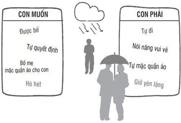
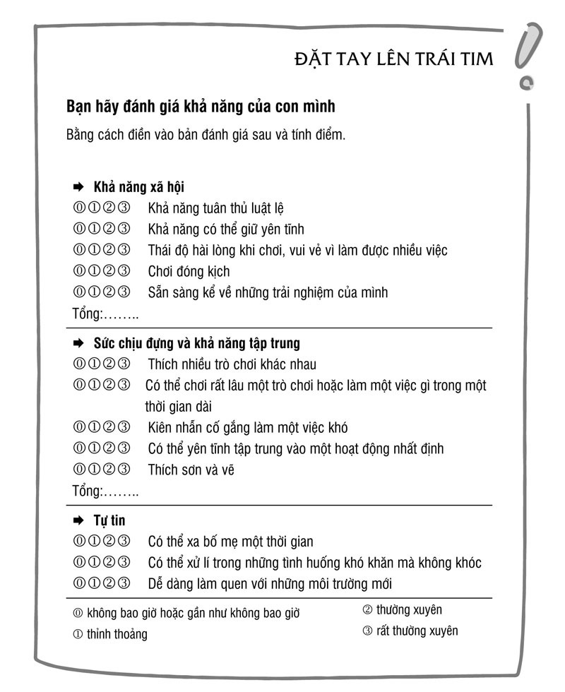

LỜI Tựa
TẠI SAO GIÁO DỤC CON TRẺ LẠI VẤT VẢ?
Nếu trẻ em là những đứa trẻ yêu thích sự hòa thuận và luôn khao khát được chung sống yên ổn với bố mẹ và anh chị em của mình thì việc giáo dục chúng sẽ trở nên thật dễ dàng. Tuy nhiên thực tế lại không như vậy. Từ khi còn nhỏ, trẻ em đã là những cá thể riêng và biết rõ chúng muốn gì, thậm chí còn biết rõ hơn những gì chúng không muốn. Chúng sẵn sàng cự nự với bố mẹ để được làm theo ý thích của mình. Chúng ta, những bậc phụ huynh, cần phải chịu đựng điều này và không hề đơn giản bởi trên thực tế trẻ em có hệ thần kinh tốt hơn chúng ta.
Cha mẹ cần cho con cái tất cả những gì chúng thật sự cần. Nhưng có nên cho chúng những thứ chúng muốn? Không phải tất cả những gì trẻ em muốn đều tốt cho bản thân chúng. Chúng ta là người lớn. Chúng ta có trách nhiệm phải quyết định:
Con cần gì - Con muốn những gì? Tôi phải làm gì khi con không chịu làm những điều lẽ ra chúng phải làm? Hay khi chúng không chịu ngưng tay chân dù tôi đã nhắc nhở chúng? Làm sao để tôi có thể cùng lúc vừa giữ được bình tĩnh nhưng vẫn công bằng? Tôi có thể làm gì để những xung đột hàng ngày không dẫn đến khủng hoảng? Và khi gặp khủng hoảng thì có những giải pháp nào? Những giải pháp nào phù hợp với tôi? Tất cả những câu hỏi này sẽ được trả lời trong cuốn sách với ví dụ cụ thể lấy từ những tình huống khủng hoảng và xung đột hàng ngày mà chúng ta thường gặp với trẻ từ 2 tuổi trở lên.
Với kinh nghiệm nhiều năm trong lĩnh vực nghiên cứu và vận dụng kiến thức về tâm lí trẻ nhỏ, tôi biết rằng trong giáo dục con trẻ thường nảy sinh rất nhiều vấn đề và điều này khiến chúng ta cảm thấy mệt mỏi. Qua quá trình tiếp xúc với rất nhiều trẻ em và các bậc cha mẹ, tôi đã học được những điều thật sự hữu ích để giúp cho các bậc phụ huynh có thể giải quyết những vấn đề nảy sinh trong quá trình trưởng thành của trẻ. Trong những điều chỉ dẫn và mẹo nhỏ của mình, tôi đã cố gắng lưu ý và liên hệ đến những kiến thức khoa học mới nhất. Điều thú vị là tôi đã học hỏi được rất nhiều từ ba đứa con của mình và muốn thực sự cảm ơn các con về điều đó.
Tôi mong rằng cuốn sách sẽ đem lại niềm vui cho bạn đọc!
Chương 1: Khủng hoảng trong khi dạy dỗ con cái hình thành như thế nào?
a. Con bạn cần gì - muốn gì?
TRẺ EM THỰC SỰ LÀ ĐIỀU TUYỆT VỜI.
Chúng dễ thương, mỏng manh, khác biệt và đáng yêu. Chúng tập đi, tập nói và thoáng một cái đã lớn, làm chủ thế giới này. Trái tim chúng ta rộn rã yêu thương mỗi khi con trẻ nhìn vào mắt ta. Mặc dù vậy, tại sao nhiều cặp đôi lại không hề muốn có con? Chẳng lẽ là do người ta nghĩ nuôi một đứa trẻ rất tốn kém, hay vì họ nghe mọi người thường kêu ca việc nuôi dạy con rất vất vả?
Đặc biệt, điều làm chúng ta nản chí chính là những chương trình truyền hình thực tế trên tivi giới thiệu về những vất vả, khó khăn của các gia đình khi dạy con nhỏ: ví dụ như ta xem được cảnh một đứa trẻ 3 tuổi đánh và giật tóc em nó, đạp cả vào chân của mẹ, rồi la hét, trong khi người mẹ cố gắng hết sức mà không ngăn được thằng con trèo lên tủ rồi đứng từ trên đó ném đồ chơi xuống.
Và trên truyền hình thực tế thì mỗi tuần đều có những chương trình với những tình huống mới về các loại vấn đề nảy sinh trong khi dạy con để mọi người theo dõi. Tại sao nhiều người lại xem chương trình này? Rõ ràng nó mang tính giải trí rất cao, ngay cả đối với trẻ con: Chúng đồng thời là nhân vật chính, người viết kịch bản và đạo diễn.
Thông thường thì mọi thứ đều diễn ra như những gì bọn trẻ muốn, nhưng liệu đó có phải là những thứ chúng thực sự cần? Cha mẹ chúng thì chỉ còn biết bất lực đứng nhìn và không ngượng ngùng thể hiện sự khổ sở của mình trước con mắt của hàng triệu khán giả xem truyền hình, chỉ với mong muốn duy nhất là tìm được sự giúp đỡ.
Tất nhiên trên truyền hình thường thấy những tình huống gia đình cá biệt. Nhưng những cặp cha mẹ vốn không gặp phải nhiều khó khăn khi giáo dục con cũng thích xem chương trình thực tế này bởi đâu đó họ cũng thấy hình ảnh của chính mình và một chút na ná với những vấn đề thường ngày của họ. Người ta cũng cảm thấy an ủi khi thấy gia đình mình chưa đến mức tệ như vậy và qua đó các bậc cha mẹ cũng thấy việc giáo dục con cái là một công việc vất vả, khiến bố mẹ phải lao tâm khổ tứ rất nhiều.
Vậy giáo dục trẻ có thật sự khó khăn như người ta nghĩ không? Trong cuộc sống hôn nhân, nếu có quá nhiều vấn đề thì các cặp đôi có thể ly dị. Nhưng trong việc giáo dục con cái thì khi các vấn đề và khủng hoảng xảy ra thường xuyên, người ta không thể vì thế chia tay nhau, mà phải tìm ra cách để vượt qua nó. Tuy nhiên, vẫn có nhiều cặp vợ chồng chia tay nhau, vì người bố hoặc người mẹ không thể tìm ra lối thoát, không chịu nổi áp lực của việc dạy dỗ con cái. Lúc ấy thì chỉ còn một người ở lại chịu trận, thường là mẹ của đứa trẻ. Điều này khiến cho việc vượt qua khủng hoảng trong việc giáo dục con cái của người mẹ trở nên khó khăn hơn.
=> Nội dung chính của cuốn sách
Cuốn sách trong tay bạn đề cập đến nhóm đối tượng là trẻ từ 2 tuổi trở lên. Thời kì sơ sinh đã qua và đây là giai đoạn trọng tâm để tập trung chăm sóc và nuôi nấng trẻ. Do đó việc giáo dục trẻ càng trở nên quan trọng hơn. Lúc trẻ còn nhỏ thì bố mẹ cũng đã phải xử lí những vấn đề như trẻ thường xuyên kêu khóc, khó ngủ, ngủ không đẫy giấc hay như việc chuyển từ bú sữa sang việc ăn dặm. Giờ trẻ đã biết đi, hiểu những lời người lớn nói và bắt đầu tập nói.
Bước quan trọng được coi là dấu mốc trong quá trình phát triển của trẻ chính là chúng nhận thức được rằng mình là một cá thể độc lập. Dần dần sẽ đến khoảng thời gian mà trẻ có thể ghi nhớ lại trong tâm trí và sau này sẽ hồi tưởng lại được.
Lúc này, bố mẹ vẫn có những ảnh hưởng rất lớn với trẻ. Cho tới khi trẻ đến trường, bố mẹ vẫn còn có vô vàn việc phải lo: vừa là người nuôi dưỡng, chăm sóc, vừa là người giáo dục, chữa bệnh, lại kiêm thêm vai trò xử lí khủng hoảng. Cha mẹ cũng là con người, cũng mắc lỗi và được phép mắc lỗi.
Cuốn sách này sẽ khiến các bậc cha mẹ nhận ra rằng việc dạy dỗ trẻ em thật sự không khó khăn như họ nghĩ. Có ba điều trọng tâm như sau:
Trẻ em vẫn chưa thể tự đáp ứng nhu cầu của mình. Vì vậy chúng cần cha mẹ. Trẻ càng nhỏ càng cần được chăm sóc nhiều hơn. Một phần rất quan trọng của giáo dục là đem lại cho trẻ những gì chúng cần. Đây có lẽ là điều quan trọng nhất, nhưng rất may mắn khi đó không phải là điều khó khăn nhất.
Chính phụ huynh cũng có những nhu cầu riêng. Hoàn toàn không hay nếu cha mẹ để cho con cái trèo lên đầu lên cổ trong suốt một thời gian dài, để cho con cái vắt kiệt sức lực của mình. Như vậy hôn nhân cũng có thể tan vỡ và mối quan hệ cha mẹ - con cái cũng phải gánh chịu hậu quả nặng nề. Giáo dục cũng có nghĩa là: dạy cho trẻ biết rằng những người xung quanh chúng - nhất là cha mẹ - cũng có những nhu cầu riêng và chúng cần phải tôn trọng điều đó. Rất nhiều phụ huynh gặp khó khăn khi dạy trẻ điều này.
Một điều có lẽ khó chịu nhất trong việc dạy dỗ trẻ: đó là luôn phải nói với trẻ “Con làm cái này đi!” - “Để đó!”. Cha mẹ luôn bắt trẻ làm những việc chúng không muốn làm, tuy việc đó cần thiết và có ý nghĩa, ví dụ như dọn dẹp phòng hay tự mặc quần áo. Tương tự thì bố mẹ cũng phải hạn chế trẻ làm những việc không cần thiết như xem tivi quá lâu, lấy đồ chơi của các bạn hay ăn quá nhiều đồ ngọt. Điều trái khoáy ở đây là trẻ thường rất thích làm, mà là làm ngay, làm luôn những điều người lớn không cho phép.
b. Trẻ cần gì?
NHỮNG NHU CẦU NÀO của trẻ mà phụ huynh cần và nên đáp ứng, để trẻ lớn lên hạnh phúc và không bị thiếu thốn?
Trẻ em cần tình yêu thương và sự công nhận, cần sự an toàn và bảo vệ. Chúng muốn được tự trải nghiệm, được cung cấp đầy đủ cho cuộc sống, được bố mẹ tin tưởng, muốn có thời gian, cần sự quan tâm, sự mềm mỏng. Nhưng chúng ta hãy để trẻ tự nói chúng cần gì.
-
Muốn được cha mẹ đón nhận
Bố mẹ thân yêu!
Con không nhạy cảm như bố mẹ nghĩ đâu. Con có thể tự chịu đựng được một số thứ. Không quá tệ khi thỉnh thoảng bố mẹ thấy bực dọc, có tâm trạng tồi tệ và thậm chí còn mắng con. Khi con biết bố mẹ thật sự yêu quý con, thì mọi chuyện sẽ lại tốt đẹp. Với con, điều quan trọng nhất là bố mẹ yêu quý con như chính con người con, và rằng bố mẹ cho con thấy được điều đó. Con rất muốn bố mẹ thấy con là một đứa con tuyệt vời và bố mẹ cảm thấy hạnh phúc vì có con. Con rất cần điều đó, bởi con không phải là một đứa trẻ siêu phàm. Hãy chấp nhận con như chính con người con, kể cả khi con vẫn chưa thể nói dù đã lên 2 tuổi rưỡi. Hay khi con đi nhà trẻ mà chỉ ngồi trong lòng bố mẹ mà chưa biết làm gì. Hay khi con khóc khi không thấy bố mẹ ở bên. Hay khi con 4 tuổi vẫn phải đeo bỉm vào ban đêm. Hay khi con la khóc mỗi lần không làm được việc gì hay không được phép có thứ gì đó. Con tự biết rằng đôi khi con thật sự phiền phức! Nhưng đó không phải lỗi của bố mẹ. Bố mẹ đừng tự đổ lỗi cho mình. Con không làm như vậy để làm bố mẹ phải bực dọc. Con cần điều đó để học hỏi. Hãy nói cho con biết mỗi khi con cư xử không đúng mực. Và chỉ cho con biết cách làm thế nào để tốt hơn. Nhưng hãy vẫn yêu quý con cùng với tất cả lỗi lầm của con, bố mẹ nhé!
-
Thời gian và sự quan tâm
Bố mẹ thân yêu!
Con biết bố mẹ không thể ở bên con để chăm sóc con cả ngày. Con biết rõ rằng, khi con ở bên bác giúp việc hay tới nhà trẻ hay ở trong nôi, là vì bố mẹ phải làm việc gì đó. Nhưng con cần ít nhất một lần trong ngày bố mẹ ở bên, và nếu có thể, chỉ ở bên một mình con thôi. Không quan trọng bao nhiêu lâu. Nhưng con cần bố mẹ, để bố mẹ nhìn ngắm và nghe con, xem những điều con đã làm, cái nhà con đã xếp được hay bức tranh con đã vẽ. Và để kể cho con nghe, đọc truyện cho con, hát cùng con và chơi trò đóng kịch hay quan trọng nhất là làm gì đó mà bố mẹ cũng thích. Con có thể học được rất nhiều từ bố mẹ. Và cùng chơi với bố mẹ con có thể sẽ có rất nhiều niềm vui.
-
Sự dịu dàng
Bố mẹ thân yêu!
Con cần bố mẹ nhìn con trìu mến và mỉm cười, vuốt tóc con hoặc nhấc bổng con lên và ôm con vào lòng. Chỉ đơn giản như vậy vì bố mẹ có con. Con cũng cần cả giọng nói của bố mẹ nói yêu con. Đôi khi con cần được vòng tay ôm âu yếm, nhất là những lúc con bị ốm. Nhưng đôi khi con cũng muốn được yên tĩnh. Con vẫn yêu bố mẹ ngay cả những lúc con không muốn ôm bố mẹ.
-
Sự tin tưởng, an tâm
Bố mẹ thân yêu!
Con rất cần cảm giác là có một người luôn ở bên con. Không nhất thiết phải là mẹ, mà có thể là bố. Hay là bà hay cô bảo mẫu. Tốt nhất là hãy cho con luôn biết trước được điều đó. Với con, thế giới thật vô cùng rộng lớn. Điều đó đôi khi làm con sợ. Khi con biết được chuyện gì sẽ đến, con sẽ cảm thấy an tâm hơn.
Nếu bố mẹ chia tay nhau, con phải biết được con sẽ sống với ai, khi nào và bao lâu sẽ lại được đến thăm người kia. Con phải được biết rõ điều đó. Con phải biết ai sẽ đưa con đến trường, ai sẽ đón, ai sẽ đưa con đi ngủ, khi nào được ăn, khi nào con đi ngủ, con được nghe bao nhiêu câu chuyện và buổi sáng con phải dậy vào lúc nào. Tất cả sẽ làm cuộc sống của con trở nên dễ dàng hơn. Con cũng yêu thích cả sự bất ngờ. Nhưng nếu cuộc sống hình thành hoàn toàn từ những sự bất ngờ, con sẽ không định hướng được nữa.
-
Sự chăm lo, săn sóc
Bố mẹ thân yêu!
Con biết bố mẹ làm rất nhiều thứ vì con. Hàng ngày con cần bố mẹ vì thật nhiều việc: đánh thức con, mặc quần áo cho con, thay tã, nấu ăn, đến bác sĩ, đi công viên. Bố mẹ thường xuyên phải mua quần áo cho con vì con lớn thật nhanh. Và đồ chơi nữa. Thật nhiều thời gian, công sức và tiền của - tất cả là dành cho con. Nói thật lòng là đôi khi con không để ý điều đó. Nhưng khi mẹ ốm thì con mới nhận thấy sự chăm lo của bố mẹ là cần thiết biết bao.
-
Sự bảo vệ, chở che
Bố mẹ thân yêu!
Hãy chăm sóc con. Hãy giữ con tránh xa khỏi những thứ nguy hiểm. Đôi lúc con không biết sợ hãi, đôi khi lại sợ hãi quá nhiều. Hãy chỉ cho con biết bố mẹ hiểu biết thế giới này và con có thể tin tưởng nó được. Hãy cho con biết bố mẹ mạnh mẽ và có thể bảo vệ con. Con thật cần bố mẹ. Con cảm thấy bị bỏ rơi và không được che chở nếu không có sự bảo vệ của bố mẹ. Đừng để con một mình khi con còn quá nhỏ. Hãy làm con mạnh mẽ mỗi khi con sợ hãi.
-
Được trải nghiệm
Bố mẹ thân yêu!
Con cần bố mẹ, để con có thể học được mọi điều. Nhưng khi con đã nhìn và quan sát đủ, con muốn tự mình trải nghiệm nó. Hãy để con tự làm những điều con có thể làm được. Hãy cho con thấy bố mẹ tin tưởng con. Con cảm thấy việc mình tự làm được điều gì đó thật quan trọng và đáng tự hào. Hãy quan sát con. Và từ đó, bố mẹ có thể biết được con đã tự làm được gì và không làm được gì. Và khi con chậm hơn những bạn khác: hãy kiên nhẫn với con. Đừng thúc giục con. Hãy cho con thời gian. Đừng đòi hỏi ở con những điều quá sức.
c. Những điều cha mẹ cần
TRẺ EM NHẬN ĐƯỢC NHỮNG THỨ CHÚNG CẦN TỪ CHA MẸ MÌNH. Vì vậy chúng phụ thuộc vào cha mẹ. Có lẽ sau khi đọc đoạn trên, bạn sẽ nghĩ về tuổi thơ của mình: Bạn đã nhận được tất cả những gì bạn cần? Hay bạn cảm thấy chạnh lòng vì đã thiếu thốn một thứ gì đó?
Giờ đây chính bạn đã trở thành cha mẹ. Có những điều bạn cần nhưng lại không thể nhận được từ con cái và lại càng không thể nhận được những thứ mà ngày trước có lẽ bạn đã mong nhận được từ cha mẹ của mình. Có thể bạn may mắn khi được chung sống với một người bạn đời hiểu mình và hai người sẽ cho nhau những gì mình muốn có. Tuy nhiên, dù bạn có một người bạn đời tâm lý hay không thì khi đã làm cha mẹ, người ta cần phải tự kiếm cho mình những thứ họ cần. Bạn có trách nhiệm thỏa mãn chính nhu cầu của mình. Nếu bạn xao nhãng điều này, thì cuối cùng con cái sẽ là người bị ảnh hưởng.
- An toàn
Chính những bậc cha mẹ cũng cần có sự an toàn. Sự an toàn để có thể chăm sóc cho chính mình và con cái. Một cuộc sống vững chắc là nền tảng để đảm bảo bạn có thể sống thoải mái với con cái. Việc một đứa trẻ ở độ tuổi đến trường có những hành vi tích cực hay tiêu cực, ngoan hay không ngoan sẽ phụ thuộc nhiều vào việc gia đình của em có thuộc nhóm đối tượng “cần trợ cấp xã hội” hay không (theo kết quả đã được thống kê). Những bậc cha mẹ phải nuôi con trong hoàn cảnh kinh tế tài chính khó khăn không nên nhụt chí khi nghe thấy điều này.
- Sự công nhận
“Con rất vui vì có cha mẹ!” - thật tuyệt vời biết bao nếu con nói với bạn điều này. Quan trọng hơn cả là cảm giác về giá trị của bản thân mình. Hãy tự nhận thấy việc đưa ra quyết định có một hay nhiều con có ý nghĩa thế nào với bạn: vì chính bạn tự đặt mình vào một trọng trách lớn, bạn đủ can đảm để làm điều đó. Bạn sẽ phải chi phí rất nhiều - nuôi một đứa trẻ đến lúc trưởng thành tiêu tốn ngang với chi phí mua một ngôi nhà và phải từ bỏ nhiều thứ.
Bạn có biết thực tế hiện nay gần một nửa phụ nữ đã tốt nghiệp đại học không sinh con cái hay không? Tại sao có nhiều người phụ nữ thông minh lại không đủ can đảm để làm điều đó? (Quan điểm của tôi là: Mặc dù thông minh nhưng họ không biết rằng đã bỏ qua điều tuyệt vời nhất của cuộc sống).
Người nào có một công việc tốt đều có ít nhất một sự công nhận, cụ thể là thông qua mức lương họ được trả cho công sức của mình. Nhưng với con cái thì ngược lại, bạn không được phép trông chờ ở con mình bất kì một sự công nhận nào cho những công sức và cống hiến của bạn dành cho các con.
Bạn hãy tự cảm nhận ý nghĩa của việc chăm sóc con hàng ngày
Có thể một ngày nào đó, con sẽ ôm bạn và nói: “Mẹ là người mẹ tốt nhất trên đời”. Nếu điều đó xảy ra, hãy thầm cảm ơn con và coi đó là món quà quý giá. Nhưng bạn không thể đòi hỏi điều đó từ con mình, mà có lẽ từ bạn đời của mình khi họ để bạn quyết định việc nuôi dạy con cái. Tuy nhiên điều quan trọng vẫn là việc bạn tự ý thức được những việc hàng ngày bạn đã làm, công sức hàng ngày bạn bỏ ra cho con cái mình.
- Sự phát triển bản thân
Mỗi người đều có quyền tự do hình thành, phát triển cá tính, nhân cách của mình. Tuy nhiên, liệu cả cha mẹ và con cái có thể cùng lúc thực hiện được điều này không? Liệu cha mẹ có phải bỏ qua những mong muốn của chính mình khi họ có con nhỏ? Tôi không nghĩ như vậy. Ai cũng có thể phát triển bản thân một cách không ngừng kể cả những người không có con cái. Thậm chí ngay cả một nghề nghiệp được coi là thú vị nhất thì phần lớn cũng bao gồm các phần việc có vẻ tẻ nhạt, nhàm chán mà người ta vẫn thực hiện hàng ngày.
Có một điều luôn đúng với các bậc cha mẹ và cả những người trưởng thành không có con cái: Người hạnh phúc luôn là người biết đón nhận những thách thức của cuộc sống và cố gắng vượt qua những thách thức ấy một cách tốt nhất. Chẳng hạn, ngay khi bạn nghỉ việc để ở nhà làm nội trợ và làm mẹ, thì tất cả mọi việc cũng vẫn rất ổn: Bạn nhận trọng trách này vui vẻ và vẫn có thể phát triển bản thân. Tuy nhiên không phải lúc nào bạn cũng cảm thấy thú vị với việc chăm sóc con cái và dọn dẹp nhà cửa, thu vén việc nhà. Nhưng hãy làm những điều bạn thích với sự nhiệt tình và lòng đam mê.
Hãy là một người mẹ chứ không phải một bà nội trợ
Bản thân tôi chưa bao giờ là một bà nội trợ giỏi. Nấu nướng, quét dọn, mua sắm - thật sự tôi đều không thích. Làm một người mẹ là điều khiến tôi vui thích hơn là làm một bà nội trợ, mặc dù có những trò chơi với lũ trẻ tôi không hề thích thú chút nào, ví dụ như làm thủ công, nhất là làm đèn lồng thủ công vào ngày lễ. Tôi thực sự rất vui mừng và thấy nhẹ cả người vì không phải làm thủ công cho con nữa khi cháu bé thứ ba nhà tôi học xong mẫu giáo. Nhưng bù lại, tôi rất thích hát cùng con, kể chuyện cho chúng, đọc sách và chơi trò đóng kịch với chúng. Phần lớn thời gian trong ngày của tôi là dành để chơi với các con trên tấm thảm trải sàn nhà.
Hãy duy trì sở thích của bạn
Bạn hãy chú ý đến những điều bạn thích làm. Điều này sẽ giúp bạn thấy thoải mái hơn khi phải đón nhận những công việc khó nhằn. Có thể bạn gặp may mắn khi làm tốt được cả hai việc: vừa giáo dục con cái lại vừa được làm công việc của mình. Quả thực là có đôi lúc bạn mệt mỏi, chán nản vì quá sức và có cảm giác là cả hai việc chăm con cũng như công việc xã hội đều không thể làm tốt được. Nhưng theo kinh nghiệm của tôi, những bà mẹ chỉ ở nhà chăm con và không đi làm thì không phải lúc nào cũng thấy thoải mái và hài lòng hơn.
Bạn hãy cố gắng đừng để mất đi những sở thích của mình ngay cả khi có một hay nhiều con. Bạn luôn có thể gọi điện với cô bạn thân nhất, tập thể thao một lần một tuần hay thỉnh thoảng có một buổi tối thảnh thơi - khi không có bảo mẫu, thì trong trường hợp cần thiết hãy đổi ca với bạn đời của mình. Hãy cố gắng làm những điều đó. Khi bạn chỉ biết có chăm con và hết lòng lo lắng cho con thì những xung đột hàng ngày sẽ dễ dẫn đến khủng hoảng hơn. Lúc ấy thì một sự thất bại nhỏ cũng có thể được bạn nhìn nhận như kiểu “Tôi đã thất bại rồi” hay “Tôi là một bà mẹ tồi tệ”. Điều này không có lợi cho bất cứ ai - và tự nhiên lại khiến cho con phải nhận quá nhiều trách nhiệm về mình, vì thấy bạn như thế con sẽ có thể nghĩ rằng: “Mình có lỗi vì đã làm bố mẹ buồn hay cãi nhau.”
Không gian riêng tư với bạn đời cũng góp phần giúp bạn phát triển bản thân. Hãy dành thời gian nói chuyện riêng tư mà không có con cái ở bên, uống một cốc rượu vang và tận hưởng hứng thú quan hệ tình dục mà không bị ai làm phiền. Hãy chú ý đến những sự tự do của mình, cho dù chỉ là những điều rất nhỏ, bằng cách cho con đi ngủ đúng giờ - tốt nhất nên để trẻ nằm ở giường riêng.
Ngay cả cha mẹ cũng cần có không gian riêng
- Sự tôn trọng
Những bậc phụ huynh không được con cái tôn trọng thường cảm thấy rất tuyệt vọng. Cha mẹ cần được con cái tôn trọng. Tuy nhiên, họ không thể chỉ đòi hỏi điều này, mà phải tự làm sao để có được sự tôn trọng của con cái. Hãy nói chuyện với con để chúng coi trọng những gì mình nói. Hãy nói là làm, ngay cả khi điều đó không dễ dàng chút nào. Bạn có thể tìm thêm thông tin về phần này trong những cuốn sách khác của tôi.
Khi bạn thường xuyên nhượng bộ vì sợ con khóc lóc, ăn vạ thì dần dần con sẽ không còn sợ và tôn trọng bạn nữa.
Một yếu tố quyết định nữa là thái độ cư xử của các bậc cha mẹ với nhau: Liệu các bạn có xứng đáng là tấm gương, có thể hiện sự tôn trọng lẫn nhau để con trẻ noi theo hay không?
- Sức mạnh
Chắc chắn rằng những bậc cha mẹ luôn muốn làm công việc của mình tốt như mình đã hi vọng. Có thể bạn thường suy nghĩ rằng, liệu bạn đã thật sự cho con mình được một sự an toàn tuyệt đối hay chưa và liệu những ngày tiếp theo bạn có còn làm tốt những công việc khó khăn trước mắt như những gì bạn làm được ngày hôm nay không. Và những điều này có thể trở nên rất căng thẳng, nên tốt nhất bạn luôn cần có đủ thời gian cho riêng mình.
- Và cha mẹ còn cần những gì?
Thần kinh vững. Sự thanh thản. Khả năng tổ chức. Sáng tạo. Sự vững vàng trước khủng hoảng. Sự lạc quan. Khả năng quản lý (bạn quản lý một công ty gia đình nhỏ). Và khi bạn không có đủ tất cả những thứ đó? Cũng không sao cả. Cha mẹ không nhất thiết phải hoàn hảo. Họ có thể trưởng thành trong quá trình thực hiện những trọng trách của mình.
Hãy chú tâm đến bản thân, để bạn có thể chăm sóc tốt cho con cái của mình!
Đôi khi cha mẹ ngăn cấm bằng những lời lẽ gay gắt: “Dừng lại. Không được như thế!” Khi đó, bạn hoàn toàn kiệt sức và căng thẳng, bạn không thể cho con mình tình yêu và sự quan tâm như nó cần.
Yêu cầu quan trọng nhất để có được sự giáo dục tốt là khả năng yêu thương. Ai biết yêu thương, người đó có thể nuôi dạy con cái tốt.
d. Mô hình “Những chiếc hộp-giáo-dục”
CHO TRẺ TẤT CẢ NHỮNG GÌ CHÚNG CẦN - yếu tố này trong việc giáo dục con cái không khó khăn mà thậm chí còn mang lại rất nhiều niềm vui. Rất nhiều thứ chúng ta đem lại cho con cái chính là những thứ chúng thực sự mong muốn có được và luôn đón nhận từ chúng ta một cách vui vẻ và đầy cảm kích.
Đáng tiếc rằng chúng ta cần phải gánh cả trọng trách làm “kẻ phá bĩnh”, nhất là những lúc chúng ta đặt ra những quy định, những giới hạn cho con cái mình. Qua mô hình “Những chiếc hộp-giáo-dục” tôi muốn chỉ cho các bạn thấy khi chúng ta ra qui định với con cái thì khủng hoảng và mâu thuẫn sẽ hình thành như thế nào, cha mẹ có thể gặp phải những trường hợp khó xử ra sao và nên giới hạn con cái ở mức nào cho phù hợp. Tôi đã phát triển mô hình này từ thực tiễn quá trình trị liệu cho trẻ em và chỉ cho các cặp cha mẹ và con cái biết tại sao trong gia đình họ thường xảy ra “xung đột”, khi đó thì mỗi người có trách nhiệm như thế nào.
Ta có thể tóm gọn tất cả những gì quan trọng với trẻ nhỏ vào hai chiếc hộp: “Chiếc hộp-con-muốn” và “Chiếc hộp-con-phải”.
- “Chiếc hộp-con-muốn”
Tất cả trẻ em đều yêu thích “chiếc hộp-con-muốn” này. Trong chiếc hộp này chứa tất cả những gì chúng thấy tuyệt vời - và muốn có được. Cùng với đó là tất cả những việc trẻ thích làm - và mong muốn được làm. Trẻ em sẽ rất thích dành cả ngày của mình cho chiếc hộp này. Có thể làm tất cả mọi thứ và nhận được tất cả những gì chúng cần - đây chính là thiên đường đúng nghĩa nhất. Mỗi đứa trẻ lại có một “chiếc hộp”, hay nói cách khác là có mong muốn khác nhau:
-
Julia (5 tuổi) có rất nhiều thứ khác nhau trong chiếc hộp này: con thỏ, những cô bạn, toàn bộ nhà trẻ, chiếc xe đạp, thật nhiều bánh kẹo, muốn được thức chơi lâu, xem tivi, chơi với mẹ, chơi giải đố.
-
Rene (6 tuổi) yêu thích tất cả những thứ liên quan đến công nghệ. Trong “chiếc hộp-con-muốn” của em có hộp dụng cụ của bố và rất nhiều thứ em đã tháo rời ra, hoặc cả các đồ vật em định tháo hoặc lắp vào. Trong đó có cả trò chơi bóng đá và tất cả những trò vận động khác.
-
Trong chiếc hộp của Daniel (3 tuổi) có những con thú dữ như khủng long Rex, vũ khí, thanh gươm la-ze và rất nhiều từ chửi bậy, ngón tay thối, đánh nhau, cơn cáu giận của những đứa trẻ khác.
-
Paul (3 tuổi rưỡi) chỉ có một điều duy nhất trong chiếc hộp này: “Con muốn quyết định!”. Không có thứ gì khiến em say mê lâu, và ngược lại thì cũng có những thứ mà em nổi hứng thích làm. Quan trọng là em luôn tự quyết định mình sẽ làm việc gì bao lâu và lúc nào chứ không phải bất kì ai khác. Nếu Paul được tự quyết định, em trở nên rất dễ thương, vui vẻ và hạnh phúc. Em đặc biệt hài lòng khi được ra lệnh cho người khác: “Mặc quần áo cho con!”, “Cho con ăn!”, “Đọc truyện cho con nghe!”. Em cũng có thể chơi rất lâu nếu em tự cho mình quyền quyết định chơi vào lúc nào. Đặc biệt là Paul thường cố tình chơi thật lâu, trong khi nhẽ ra phải chuẩn bị xong xuôi để đi nhà trẻ.
-
Marie (4 tuổi) khi mới được hỏi chỉ thích xem tivi và ăn đồ ngọt. Khi hỏi cặn kẽ hơn thì biết cháu thích chơi với mẹ, nô đùa ở khu vui chơi và đã sớm thích học chữ cái và số.
-
“Chiếc hộp-con-muốn” của Florian (7 tuổi) chỉ toàn máy bay: Cháu không muốn gì khác ngoài việc được chơi trò chơi. Sau một hồi suy nghĩ cháu nói còn thích nghe nhạc, xem tivi và chơi điện tử.
Tất cả những thứ đồ đẹp và mang lại niềm vui
Bọn trẻ luôn cảm thấy thoải mái khi “chiếc hộp-con-muốn” của chúng có thể đáp ứng được nhu cầu của chúng. Ngay cả với cha mẹ cũng có thể thấy chiếc hộp này khá thú vị. Vì sau cùng họ cũng cảm thấy hạnh phúc khi lũ trẻ có được niềm vui. Thông thường họ cũng ở cùng trong chiếc hộp này với lũ trẻ: chẳng hạn khi cùng con cái chơi trò gì đó mà mọi người đều thấy thú vị.
Tuy nhiên, cho dù các trò chơi có hữu dụng và giúp ích đến đâu đi nữa thì đến lúc nào đó, khoảng thời gian vui chơi sẽ phải qua đi - đó là lúc con bạn phải đi ngủ hay đến nhà trẻ, hoặc khi mẹ đưa chúng cùng đi mua sắm, hoặc đến giờ ăn. Đây là những lúc mà con bạn sẽ cần phải thoát ra khỏi chiếc hộp này.
Những chiếc hộp khác nhau
Với Julia và Rene thì điều này không khó vì cả hai đều ngoan ngoãn, biết nghe lời. Tất cả những gì chúng thích làm, thích chơi đều được cha mẹ đồng ý. Khi Julia và Rene được gọi, chúng thường sẵn sàng dừng chơi và chạy đến ngay. Có thể nói chúng tự chạy ra khỏi “chiếc hộp-con-muốn”.
Những đứa trẻ khác thì không tự giác như vậy, bố mẹ cần phải ép chúng ra khỏi chiếc hộp này, vì bố mẹ thấy trong hộp đó có nhiều thứ không hề có lợi cho chúng: Cha mẹ của Daniel không hề hài lòng với những trò chơi súng ống, họ cũng không chịu được những câu chửi thề hay cãi lộn. Nhưng vì Daniel không chịu tự dừng lại, nên cha mẹ cậu luôn phải đưa Daniel ra khỏi chiếc hộp đó. Và mỗi khi bị lôi ra khỏi đó, ngay lập tức Daniel lại tìm cách quay trở lại và lại tiếp tục với trò vô bổ khác.
Mẹ của Paul cũng phải giải quyết vấn đề tương tự. Vì Paul chỉ cảm thấy thoải mái khi tất cả mọi việc đều do em quyết định, nên em cũng phải bị ép ra khỏi “chiếc hộp-con-muốn” đó. Ngay cả khi mẹ nói một cách thân thiện: “Chào buổi sáng, con yêu. Dậy đi nào!” hay “Đồ ăn xong rồi. Con có xuống ăn không?” cậu cũng có thể coi đó là một sự ra lệnh. Vì vậy, khi mẹ muốn “ra lệnh” gì đó cho Paul thì hoàn toàn làm cậu mất hứng và cậu bé sẽ không hài lòng.
Với Marie và Florian, “chiếc hộp-con-muốn” đặc biệt quan trọng. Khi đi mua sắm cùng mẹ, nếu Marie nhìn thấy bánh kẹo thì cháu muốn mua ngay. Như vậy nghĩa là Marie lúc này vẫn đang ở trong “chiếc hộp-con-muốn” - làm sao mẹ của cháu nỡ khiến cháu buồn? Khi Florian nhìn thấy một chiếc máy bay bày bán trong cửa hàng, cháu cũng phải có nó bằng được, có ngay lập tức. Nếu không được mua thì sẽ có một thảm họa đáng sợ. Thế giới sẽ sụp đổ. Ít nhất thì cháu sẽ cảm tưởng như vậy nếu mẹ nói: “Không” và không mua cho cháu thứ cháu thích.
Mẹ là người phá bĩnh
Mâu thuẫn luôn xảy ra khi lũ trẻ không thể tự dừng lại, khi chúng không thể chấp nhận một lời từ chối, một câu nói như “Để đó”, “Không phải bây giờ”, hay “Đủ rồi”. Lúc này ai sẽ là người chịu trách nhiệm? Khi tôi hỏi những đứa trẻ trong quá trình thực hành, tôi thường nhận được những câu trả lời giống nhau: “Đó là do mẹ.” Trong gia đình, người cha thường ít phải đóng vai là “kẻ phá bĩnh” hơn.
Sự cằn nhằn và tâm trạng khó chịu
Điều gì xảy ra khi cha mẹ đưa trẻ ra khỏi “chiếc hộp-con-muốn”? Lúc này, đứa trẻ bị bắt buộc, chúng không vui vẻ chút nào. Không khí trở nên căng thẳng. Đứa trẻ phản đối, phàn nàn hoặc la khóc.
Tùy vào bản tính, tính cách của trẻ mà ta thấy được chúng sẽ phản đối mạnh mẽ tới mức nào và sự căng thẳng đến đâu. Để thể hiện sự không hài lòng, chúng sẽ cằn nhằn - hoặc thậm chí là một “cơn giông bão kèm sấm, sét, mưa và gió mạnh”.
Ai muốn lôi trẻ ra khỏi trạng thái “con muốn”, thường nhận đủ sự bực mình
- “Chiếc hộp-con-phải”
Chiếc hộp này không phải để đưa đứa trẻ ra khỏi trạng thái “con muốn”. Việc giúp trẻ làm quen và tiếp cận với trạng thái thứ hai của cuộc sống, tức là “chiếc hộp-con-phải” còn khó khăn hơn nhiều. Trong “chiếc hộp-con-phải” này bao gồm tất cả những điều cần thiết, nhưng lại thường phiền nhiễu và không thật sự gây hứng thú. Đó có thể là việc thay tã hay mặc quần áo, đánh răng, đi vệ sinh, dọn dẹp, thức dậy vào mỗi buổi sáng hay đi ngủ, ngồi ăn tại bàn, nghe theo mệnh lệnh và hướng dẫn của bố mẹ.
Một vài đứa trẻ ngoan ngoãn làm theo lời cha mẹ. Với những đứa trẻ này, “chiếc hộp-con-phải” hoàn toàn bình thường và không đáng sợ. Tuy nhiên, phần lớn trẻ con đều không thích chiếc hộp này. Chúng cho rằng bố mẹ đòi hỏi chúng phải làm những thứ rất nhàm chán, phiền nhiễu hay toàn ép trẻ thực hiện nhiệm vụ của chúng. Chúng sẽ phản đối, có tâm trạng không vui và bắt đầu phản kháng hoặc kêu khóc. Hậu quả là bầu không khí trở nên căng thẳng và tức giận. Mỗi đứa trẻ có cách thể hiện sự cáu giận, bực tức khác nhau, tùy vào tính cách cũng như tùy từng sự việc, hiện tượng.
-
Julia và Rene không hay phản ứng thái quá hoặc bực mình. Cứ cha mẹ nhắc nhở, chúng sẽ vâng lời. Chúng tự ngồi yên khi ăn và tự giác đi ngủ. Tất nhiên đôi khi chúng cũng giận dỗi và khóc. Một “cơn bão” thực sự thường hiếm xảy ra với Julia và Rene - và chúng thường bỏ qua rất nhanh. Hai đứa trẻ này không gặp khó khăn nhiều với “chiếc hộp-con-phải”.
-
Điều này hoàn toàn khác với trường hợp của Daniel. Đơn giản là cháu không thể ngồi yên, kể cả khi ngồi trên ghế ở nhà trẻ, hoặc khi ăn ở nhà, và cũng không lúc nào ngồi yên trước tivi. Câu nói “Ngồi yên!” rõ ràng là một điều Daniel phải thực hiện.
-
Paul thì chẳng có chút hứng thú khi cha mẹ yêu cầu và hướng dẫn làm gì đó. Với Paul, tất cả mọi thứ người khác nói đều nằm trong “chiếc hộp-con-phải”. Thường thì cháu không phản ứng gì hoặc làm hoàn toàn ngược lại. Khi cha mẹ bắt buộc cháu phải làm điều không muốn, cháu phản kháng một cách dữ dội.
-
Marie ghét dọn dẹp đồ đạc. Buổi sáng, cháu không hề thích chuẩn bị để đi nhà trẻ, lúc nào cũng tìm cách chần chừ và chần chừ.
-
Với Florian thì việc lên giường đi ngủ vào mỗi buổi tối thực sự là một yêu cầu tồi tệ nhất, vì cháu luôn nghĩ ra lý do gì đó để trốn không phải đi ngủ đúng giờ.

Khi cha mẹ cũng tự đặt mình vào “giông bão”, khủng hoảng chắc chắn sẽ xảy ra.
Hai cách thức xử sự
Ai cần phải đưa trẻ vào “chiếc hộp-con-phải”, ai phải đưa ra những yêu cầu không mấy dễ chịu “Làm việc này, ngay bây giờ!”? Một lần nữa tất cả trẻ đều trả lời không cần suy nghĩ: “Mẹ”. Nếu bố trẻ cũng tham gia thì mọi việc sẽ tốt hơn. Ở đây không quan trọng là ai giúp trẻ để trẻ yêu quí mình hơn, mà phải giúp chúng nhanh chóng vượt qua nỗi thất vọng. “Chiếc hộp-con-phải” càng đầy thì càng có nhiều căng thẳng hơn. Đứa trẻ nào càng có ý chí mạnh mẽ và bốc đồng thì chúng càng phản ứng mạnh hơn. Dù bạn đặt con vào trạng thái “con-phải” hay đưa chúng ra khỏi trạng thái “con-muốn” thì đều bị con giận và cuối cùng bạn đã làm con mất vui. Có hai khả năng để xử lý các tình huống này:
- Khả năng đầu tiên: Bạn ôm sự cáu giận của con vào người, cũng cáu kỉnh, bực tức và gây “giông bão” bằng “sấm sét”. Mắng mỏ, quát tháo trong lúc này đặc biệt rất tai hại: Có khi chỉ từ một câu nói đơn giản “Thế là đủ rồi.” có thể sẽ dẫn đến xung đột thượng cẳng chân hạ cẳng tay. Xu hướng thường xuyên mắng mỏ một đứa trẻ tính khí mạnh mẽ và ương bướng sẽ dễ xảy ra nhiều lần trong ngày, vì mỗi lần muốn lôi con ra khỏi “cái hộp-con-muốn” là sẽ kèm theo một cơn thịnh nộ.
- Khả năng thứ hai: Bạn xem xét cơn giận của con mình một cách đầy cảm thông và nhẹ nhàng, không tỏ ra nóng giận và không nổi cơn thịnh nộ với “giông bão” và “sấm sét”. Thay vào đó bạn tự bảo vệ mình với một “chiếc ô” đến khi nó qua đi.
- Chịu đựng khủng hoảng: Những “chiếc hộp-giáo-dục” trong cuộc sống hàng ngày
Các bậc cha mẹ thường không được con trẻ yêu quý khi làm chúng mất hứng hay bắt chúng phải làm những việc nhàm chán và phiền nhiễu. Tuy nhiên, đây là một phần quan trọng của việc giáo dục con cái. Bạn có thể và phải chỉ cho lũ trẻ thấy rằng chúng không cần thiết phải có được tất cả những gì chúng muốn. Và có những điều chúng không muốn nhưng lại rất quan trọng và cần thiết. Hãy dự đoán trước rằng con bạn có thể thất vọng và ít nhiều tức giận. Điều này hoàn toàn bình thường. Bạn không hề có lỗi gì cả. Dù con có bực tức hay cáu giận thì bạn cũng không bị đánh giá là một bà mẹ hay ông bố tồi. Khi con bạn còn nhỏ, chúng chưa biết kiềm chế những nỗi bực tức và thất vọng của mình. Bạn là người lớn và có thể làm điều đó tốt hơn chúng.
Dọn dẹp “chiếc hộp-con-phải”
Mỗi lời yêu cầu, mỗi câu “Con làm đi!” có thể dẫn đến một cơn thịnh nộ với nước mắt. Vì vậy rất cần thiết để suy xét điều gì thuộc về “chiếc hộp-con-phải” và điều gì không. Bạn hãy dọn dẹp chiếc hộp này. Đừng đòi hỏi quá nhiều từ con bạn. Hãy vất bỏ những gì không cần thiết và sắp xếp theo thứ tự những thứ còn quan trọng. Chiếc hộp càng trực quan thì con bạn càng dễ dàng hiểu được nó hơn. Kinh nghiệm cuộc sống có thể giúp bạn trong quá trình phân loại: Những điều gì bạn đã làm tốt khi bạn còn nhỏ? Những yêu cầu nào bạn muốn giữ lại cho con mình? Hãy cùng bàn bạc với bạn đời của mình. Đây là một chủ đề rất thú vị.
-
Nhận biết “sự chuyển hướng”: Có những đứa trẻ là thiên tài trong việc tìm ra những lỗ hổng để đi ra khỏi “chiếc hộp-con-phải” - và sau đó luôn là một “sự chuyển hướng” để quay lại “chiếc hộp-con-muốn”. Bạn nói: “Ừ, một lúc nữa.” Nhưng “một lúc nữa” có nghĩa là “Không bao giờ”. Tức là lũ trẻ bắt đầu làm một việc không mong muốn, nhưng không làm việc đó đến nơi đến chốn. Hoặc chúng làm việc không mấy dễ chịu đó bằng một cách gây thích thú, ví dụ như khi chúng tự nguyện đi tắm nhưng chẳng tắm mà lại nghịch ngợm, làm lung tung, lộn xộn những chai dầu tắm và mỹ phẩm thành một đống hỗn độn trong phòng tắm. Cha mẹ luôn phải ở bên theo dõi đến khi con làm xong việc để có thể phát hiện ngay được một “sự chuyển hướng” của con và có thể xử lí một cách phù hợp.
-
Đưa ra những lựa chọn tốt hơn: Tốt nhất bạn hãy tự chủ động. Việc con tự mặc quần áo vào mỗi buổi sáng sẽ trở nên thú vị nếu đó là một cuộc thi mặc quần áo với mẹ. Việc đi ngủ sẽ đỡ khổ sở hơn khi nó gắn liền với một thói quen nho nhỏ thú vị, ví dụ như một câu chuyện chúc ngủ ngon. Một công việc phiền toái sẽ trở nên dễ dàng hơn khi gắn liền với một điều gì đó khiến trẻ hào hứng: “Ngay khi con dọn dẹp xong, mẹ con mình sẽ cùng ra sân chơi nhé!”. Trò chơi dọn dẹp cũng đáng để thử: “Mẹ sẽ cất những chiếc ô tô, còn con cất Lego. Để xem ai nhanh hơn, con nghĩ sao?” Hãy nghĩ ra một điều gì đó thú vị cho trẻ và bạn sẽ thấy mọi cố gắng của mình được đền đáp.
-
Phân chia nhiệm vụ nuôi dạy con một cách công bằng: Tôi có ấn tượng rằng rất nhiều cặp cha mẹ không phân chia công việc một cách tối ưu nhất. Ai ở nhà nhiều hơn - thường là các mẹ - sẽ phải dạy bảo con mình nhiều hơn.
Thông thường điều này không thay đổi được. Tuy nhiên vấn đề nằm ở chỗ khác: Người cha cư xử với con mình như thế nào - mỗi khi ở nhà? Rất nhiều người sẵn sàng gánh trách nhiệm trong khả năng của mình. Tuy nhiên, một vài ông bố chỉ muốn được yên tĩnh - thực ra thì họ muốn nghỉ ngơi sau những giờ làm việc căng thẳng. Họ thường lấy cớ đứa trẻ quấy nhiễu để đổ lỗi cho vợ không biết dạy con. Những ông bố này đặc biệt thích nuông chiều con cái, vì bằng cách đó họ có thể tránh được nhiều mâu thuẫn.
Nhiều ông bố sẵn sàng tự nguyện cùng con mình đi vào “chiếc hộp-con-muốn”: Họ nô đùa, chơi bóng đá, kể chuyện, chơi trò đóng kịch tưởng tượng với con - nhưng họ tìm cách ra khỏi chiếc hộp này một cách kín đáo. Họ thường dành những công việc như thay tã, mặc quần áo, đưa trẻ đi ngủ hay việc cấm đoán con cái không được làm cái này, cái kia cho các bà mẹ. Điều này không công bằng. Ngay cả những ông bố cũng nên tham gia vào một phần của việc dạy dỗ con cái, dù không hề dễ chịu chút nào, kể cả họ có thường xuyên ở nhà hay không. Mặt khác, các bà mẹ cũng phải chú ý rằng họ không nên trở thành “những kẻ phá bĩnh” đúng nghĩa. Nếu bạn rơi vào trường hợp này: hãy đừng tự chịu đựng. Hãy luôn đòi hỏi bố phải dành thời gian cho con cái. Ngay cả bạn lúc nào cũng có một công việc vất vả - làm mẹ và bà nội trợ. Cả bố và mẹ đều phải có trách nhiệm trong việc giáo dục con!
Mỗi đứa trẻ khác nhau sẽ học hỏi một cách khác nhau
Có những đứa trẻ rất ngoan. Chúng hợp tác và ưa thích sự hòa bình và hòa hảo. Việc giáo dục những đứa trẻ này sẽ không quá khó. Điều này hoàn toàn khác với những đứa trẻ bướng bỉnh. Chúng phản ứng mạnh mẽ khi không có được những gì mình muốn, có thái độ chống đối, phản ứng quyết liệt với những việc tưởng như rất đơn giản như phải ra khỏi bồn tắm hoặc khi bố mẹ bảo chúng tắt tivi đi.
Những đứa trẻ này vốn không phải khó bảo hay là không ngoan ngoãn. Đơn giản là chúng chưa học để hiểu được rằng, những mong muốn của mình không phải lúc nào cũng được thỏa mãn. Rằng những người khác cũng có những nhu cầu riêng mà mọi người cần phải chú ý. Một vài đứa trẻ học điều này một cách nhanh chóng và không cần cố gắng nhiều. Nhưng đối với nhiều đứa trẻ khác thì bố mẹ phải cần vô số kinh nghiệm, thậm chí trải qua nhiều cơn thịnh nộ và mắng mỏ.
Khi bạn thấy con mình rơi vào trường hợp này: Hãy chấp nhận nó. Cũng không nên đổ lỗi cho chính mình. Trẻ em vốn ngay từ khi chào đời đã có những yêu cầu, đòi hỏi bẩm sinh khác nhau rồi.
Bạn - với tư cách là cha mẹ - có trách nhiệm cho con mình có được tất cả những bài học này và phải luôn có sự thông cảm và kiên định. Đứa trẻ cần luôn cảm nhận được rằng, bạn phản ứng cứng rắn nhưng vẫn không nuông chiều chúng. Bảng câu hỏi trong phần tiếp theo sẽ giúp các bạn đánh giá con mạnh ở những lĩnh vực nào và trong những lĩnh vực nào chúng “gặp khó khăn”.
Công bằng nhưng kiên định
Rất nhiều bậc phụ huynh biết rõ họ có thể đối mặt với mâu thuẫn và khủng hoảng như thế nào. Họ đặt ra cho con mình những yêu cầu rõ ràng, cư xử đúng mực ngay cả khi đứa trẻ phản kháng - cùng lúc đó họ cũng cho chúng sự an toàn để được yêu thương và chấp nhận. Họ công bằng, nhưng vẫn rất kiên định. Nếu bạn chưa làm được điều này, cuốn sách này sẽ giúp bạn.
§ TỔNG KẾT
⇒ Con cái cần gì?
-
Được chấp nhận
-
Thời gian và sự hy sinh
-
Sự mềm mỏng
-
Sự tin tưởng
-
Sự chăm sóc
-
Được bảo vệ và có cảm giác an toàn
-
Được tự trải nghiệm
-
Cha mẹ cần phải đưa con ra khỏi “chiếc hộp-con-muốn”: Trẻ em không phải luôn luôn được làm những điều chúng thích.
-
Những đứa trẻ thường không đơn độc trong “chiếc hộp-con-phải”. Cha mẹ cũng phải làm sao cho trẻ được trải nghiệm cảm giác: Không phải lúc nào công việc phải làm cũng khiến chúng vui vẻ.
⇒ Cha mẹ cần gì?
-
Sự an toàn
-
Sự công nhận
-
Được phát triển bản thân
-
Sự tôn trọng
⇒ Trong khi dạy dỗ con cái, đôi khi cha mẹ phải là người “phá bĩnh”.
Mô hình “Những chiếc hộp-giáo-dục” đã chỉ rõ điều này:
-
Cha mẹ cần phải đưa con ra khỏi “chiếc hộp-con-muốn”: Trẻ em không phải luôn luôn được làm những điều chúng thích.
-
Những đứa trẻ thường không đơn độc trong “chiếc hộp-con-phải”. Cha mẹ cũng phải làm sao cho trẻ được trải nghiệm cảm giác: Không phải lúc nào công việc phải làm cũng khiến chúng vui vẻ.
⇒ Mâu thuẫn và khủng hoảng là điều không thể tránh khỏi
-
Cha mẹ cần phải chịu đựng được mâu thuẫn.
-
Khi đặt ra giới hạn và luật lệ cho con cái, cha mẹ cần phải chú ý đến cá tính riêng của từng đứa trẻ, phải công bằng và đồng thời kiên định.
Chương 2: Khả năng đối mặt với khủng hoảng của con bạn thế nào – Bản thân bạn vững vàng trước khủng hoảng đến mức nào?
a. Bạn đánh giá con mình như thế nào?
BẢN ĐÁNH GIÁ SAU ĐÂY phù hợp nhất cho trẻ em từ 2 đến 8 tuổi. Bạn vẫn có thể áp dụng nếu con bạn mới 2 tuổi nhưng đã biết nói tốt, hiểu những điều bạn nói.
Bạn có thể điền nhanh vào các mục và đánh giá ngay lập tức. Tuy nhiên, bản đánh giá này không phải để bạn có thể đưa ra được những tiên đoán tương lai cho con bạn hay giúp bạn nhận ra xem con mình thuộc nhóm trẻ “bình thường” hay nhóm “có vấn đề”. Thay vào đó, bạn sẽ tính số điểm để nhận ra những điểm mạnh và điểm yếu của con mình. Điều này sẽ giúp bạn đánh giá tính cách của con tốt hơn.
Bản đánh giá của tôi dựa trên những nghiên cứu phân tích khoa học tôi sử dụng trong quá trình thực hành nghề. Tuy nhiên, cần phải nói trước là bản thăm dò ý kiến của tôi có một sự khác biệt rõ rệt: Các nhà tâm lý học luôn sử dụng “Bảng câu hỏi vấn đề”, tức là họ thường đặt ra những câu hỏi liên quan đến cách thức cư xử tiêu cực, rắc rối ở trẻ, thường là những vấn đề mà phụ huynh không mong muốn. Và khi thấy một đứa trẻ thường xuyên có những thái độ, cách hành xử tiêu cực giống như các vấn đề được nêu ra trong bảng câu hỏi đó, thì có nghĩa là đứa trẻ có “vấn đề”, và cần phải được điều trị bằng liệu pháp tâm lý.
Tôi thấy việc khiến cha mẹ tập trung quá nhiều vào những hành xử không hay của con mình là một cách không hợp lý. Sẽ tốt hơn nếu ta suy xét: Điều gì con làm được tốt và ở mức độ thường xuyên? Vì suy cho cùng, những gì tốt đẹp đều khiến cho cha mẹ và con cái vui vẻ. Nhiều bậc cha mẹ lại hay chú tâm quá đến những gì con mình chưa làm được, hay làm chưa tốt, và lại không để ý tới những điều tích cực ở con mình. Thật đáng tiếc!
Vì vậy, tôi đã xây dựng bản đánh giá mang tính tích cực sau đây và liệt kê những cách hành xử được coi là “bình thường”, tích cực và đáng mong đợi ở con trẻ. Nhiệm vụ của bạn là xem con thường xuyên có những cách hành xử tích cực này không, và tần suất là bao nhiêu. Trong thực tiễn, bản đánh giá của tôi đã chỉ ra rằng: Người ta phát hiện được không chỉ những điểm mạnh mà qua đó cũng hé lộ những điểm yếu của trẻ. Tuy nhiên, ở mỗi đứa trẻ đều có ít nhất một lĩnh vực “bình thường” hay tích cực, thậm chí là rất nhiều điều, nhiều yếu tố tích cực để cha mẹ khám phá.
Tôi đã lựa chọn năm chủ đề đặc biệt quan trọng như sau:
1. Khả năng xã hội của trẻ
2. Sức chịu đựng và khả năng tập trung
3. Sự tự tin
4. Sự thân thiện và sẵn sàng hợp tác
5. Phản ứng của trẻ với việc ngủ, ăn uống và tắm gội



- Khả năng xã hội
Nếu bạn đánh giá con mình đặc biệt tích cực về mặt này, bạn đã có thể hài lòng vì con hội tụ đủ các yếu tố cần thiết để học hỏi từ những trải nghiệm bản thân và có khả năng tự chịu trách nhiệm. Kể cả khi có xung đột xảy ra, con bạn cũng có thể xử lý được nhờ vào khả năng xã hội cháu đã có. Khi bạn định đưa con ra khỏi “chiếc hộp-con-muốn” hay yêu cầu con vào trạng thái “con-phải”, có thể con sẽ khó chịu đôi chút nhưng chúng sẽ tìm được cách để hiểu điều đó.
Rất khó để nói những gì trẻ làm được là kết quả của sự nuôi dạy con rất tốt của bạn hay đơn giản chỉ là một món quà Thượng đế ban tặng. Điều quan trọng hơn ở đây là bạn hãy trân trọng những điểm mạnh của con và hãy luôn thể hiện với con niềm vui đó. Điều này giúp con có thể tiếp tục phát triển và hoàn thiện nhân cách một cách tích cực.
Nếu con bạn chỉ đạt được dưới 13 điểm thậm chí dưới 7 điểm thì bạn hãy dành sự chú ý đến con nhiều hơn, đặc biệt là hãy chú ý khuyến khích con mỗi khi con có được một hành động ngoan ngoãn, thái độ tích cực, để con luôn được động viên và sẽ phát huy các điểm mạnh của mình nhiều hơn nữa trong giai đoạn phát triển tiếp theo.
Để học được những kĩ năng xã hội, trẻ em rất cần sự ủng hộ từ phía cha mẹ. Trong phần tiếp theo, bạn sẽ tìm thấy những câu hỏi cụ thể hơn về vấn đề này.
Câu hỏi 1: Học các qui tắc
Việc con có thái độ như thế nào với những qui tắc đặt ra sẽ nói lên rất nhiều về khả năng thích ứng xã hội của chúng. Có thể con bạn cần rất nhiều bài học đến khi chúng hiểu được rằng có những qui tắc cần phải được tuân thủ, và hiểu được rằng nếu chúng đặt câu hỏi: “Nếu con không nghe theo thì bố mẹ sẽ làm gì?” Cha mẹ sẽ luôn chỉ có một câu trả lời duy nhất: “Thì bố mẹ sẽ tìm cách để cho con phải tuân thủ qui tắc.”
Câu hỏi 2: Giữ bình tĩnh
Khi con đang sợ hãi hay thất vọng, chúng có thường làm cho nỗi sợ hãi hoặc thất vọng lớn thêm không? Rất nhiều cha mẹ gặp trường hợp này. Trước hết, bạn phải chịu đựng điều đó. Tuy nhiên, bạn có thể giúp con qua rất nhiều bài học: Bạn hãy tin tưởng rằng đến lúc nào đó, con sẽ tự mình kiềm chế và quay trở về trạng thái bình tĩnh. Bản thân bạn cũng nên giữ bình tĩnh và tỏ ra thân thiện. Bằng cách đó, bạn sẽ cho đứa trẻ thấy là con phải tự chịu trách nhiệm về sự bực tức của mình. Rất ít đứa trẻ có thể thật sự giữ được bình tĩnh. Và nhiều trẻ nhỏ thật sự là một thách thức với cha mẹ chúng vì chúng thường xuyên nổi cáu, bực tức và giận dỗi.
Câu hỏi 3: Hài lòng
Con bạn rất hiếm khi tỏ ra hài lòng và ít khi cảm thấy phấn khởi thực sự về những điều chúng đã làm được? Thông thường, cha mẹ lại hay cư xử theo cách chỉ làm tình hình tồi tệ hơn: “Sao mặt mũi con lại như đưa đám thế kia!”, “Giờ thì vui vẻ lên cho mẹ nhờ!”. Những câu nói như vậy chỉ làm cho tâm trạng của trẻ trở nên nặng nề hơn.
Có thể con bạn vẫn hài lòng, thậm chí còn hài lòng hơn so với nhiều đứa trẻ khác, nhưng ở đây đơn giản là cháu không biết thể hiện những cảm xúc tích cực của mình. Vậy thì bạn hãy là một tấm gương cho chúng. Hãy để cho con thấy được những niềm vui của bạn khi chúng mải mê chơi đùa hay tự mình làm được một điều gì đó. Hãy khen ngợi chúng mỗi khi chúng tự đảm nhiệm được việc gì, chẳng hạn như: “Chà, con mẹ đã tự mình làm được rồi!”, “Nhìn con làm thật vui!”, “Mẹ vui lắm vì con làm việc đó rất tốt”. Qua đó, bạn có thể khuyến khích con để con dần dần trở nên hài lòng, ít bất mãn hơn, tuy nhiên cũng có thể bạn không thành công lắm trong việc này. Đúng là rất khó để chấp nhận và chịu đựng sự bất mãn của trẻ. Nhưng sự công nhận của bạn với những gì con làm được chính là điều tốt nhất dành cho chúng: chúng cần điều đó để có thể vượt qua được những khó khăn của bản thân.
Câu hỏi 4: Chơi trò đóng kịch
Tự mình đóng các vai trò khác nhau, nhìn nhận thế giới dưới một con mắt khác: Điều này rất tốt cho việc học hỏi kĩ năng xã hội. Khi con bạn không muốn chơi đóng kịch, hãy chơi cùng con. Hãy đóng giả là các con thú chẳng hạn, tùy theo mong muốn của con. Hoặc bạn để con đóng vai “Vua”, trong khi bạn đảm nhiệm vai “Người hầu”. Khi đó, chúng sẽ không thể phản đối được! Bạn hãy chơi với con trò “Bác sĩ” hay “Trung tâm mua sắm”. Hãy học các trò chơi hát múa mà con bạn được dạy ở trường mẫu giáo. Bạn có thể có cảm giác mình hơi dở hơi khi chơi những trò “Chú thỏ trong hang” hay “Chim cánh cụt trên tảng băng”? Chẳng sao cả. Vì bản thân bạn cũng sẽ học được rất nhiều điều khi nhập vai vào thế giới của trẻ thơ.
Câu hỏi 5: Kể chuyện của mình
Con bạn quá kín đáo, hiếm khi kể về những trải nghiệm của chính mình? Hãy tận dụng những cơ hội để nói chuyện cùng con, chẳng hạn như ở bữa ăn hay những lúc chuẩn bị đi ngủ. Hãy hỏi con mỗi tối trước khi đi ngủ: “Ngày hôm nay con có vui không? Con có chuyện gì bực mình không?” Bạn cũng nên kể cho con nghe xem hôm nay có điều gì khiến bạn vui vẻ hoặc bực mình. Nên kể nhiều chuyện vui, có ích để con bạn có thể đi ngủ với một tâm trạng tốt. Ngay cả câu hỏi: “Đêm nay con muốn mơ thấy gì?” cũng giúp cho bé thể hiện những cảm xúc và mong muốn của mình. Nếu con bạn vẫn rất ít nói và kín đáo, hãy chấp nhận điều đó. Có lẽ con là những bông hoa nở chậm và đến một ngày nào đó mới thật sự cởi mở.
b. Bạn tự đánh giá chính mình như thế nào?
NGAY CẢ CHA MẸ CŨNG CÓ NHỮNG ĐIỂM MẠNH VÀ ĐIỂM YẾU.
Với bản đánh giá sau đây, bạn có thể nhận biết mình mạnh ở những lĩnh vực nào và bạn còn cần phải học hỏi điều gì - nếu bạn trả lời một cách thành thực. Sẽ còn thú vị hơn nếu bạn để người bạn đời của mình đưa ra nhận xét, đánh giá về bạn - để xem đáp án có thật sự giống nhau?


- Rèn luyện khả năng giữ bình tĩnh
Bạn có biết tha thứ và quên không? Bạn có giữ được bình tĩnh không? Ngay cả lúc bạn tranh luận gay gắt, bạn vẫn giữ được bình tĩnh chứ? Bạn có thể xin lỗi con, khi không giữ được bình tĩnh không? Bạn càng thường xuyên áp dụng được những điều này thì càng tốt cho bạn. Nếu bạn được ít hơn 10 điểm thì bạn cần xem xét lại mình. Hãy theo dõi chính bản thân bạn và cố gắng để tăng điểm số. Con bạn càng bốc đồng và ngang bướng thì bạn càng khó giữ bình tĩnh, nhưng làm được việc đó lại càng quan trọng hơn. Một đứa trẻ ngang bướng, dễ nổi khùng và không giữ được bình tĩnh, càng cần bố mẹ có thần kinh thép, giữ được bình tĩnh trong bất cứ hoàn cảnh nào.
Và bạn khó thực hiện điều đó? Bạn có ý nghĩ: “Mình không hành động khác được, mình rất dễ nổi nóng” không? Bạn là người lớn. Bạn có thể thay đổi có ý thức và có động lực hơn con bạn.
- Nói rõ ràng
Bạn có nói để con bạn lắng nghe bạn không? Bạn có tập trung được vào điều bạn định nói thay vì sa đà vào việc tranh cãi với con không? Nếu bạn được tối thiểu 8 điểm hoặc hơn, thì bạn có khả năng nói rõ ràng khá tốt. Nếu được ít điểm hơn thì bạn phải cố gắng tăng điểm số.
- Cư xử nhất quán
Hành động nhất quán là bước tiếp theo của việc nói rõ ràng. Nếu việc nói suông không có tác dụng thì bố mẹ phải biến lời nói thành hành động và phải công minh và rõ ràng. Trẻ phải chấp nhận những hậu quả của việc mà chúng đã làm hoặc từ chối. Bạn có nói rõ cho con bạn những qui định của bạn không? Bạn có phản ứng công minh và nhất quán, nếu con bạn không tuân theo qui định không? Nếu mọi việc chưa ổn thì bạn phải thực hiện tiếp. Bạn phải đạt được tối thiểu 10 điểm. Khả năng hành động nhất quán với lời nói đặc biệt quan trọng, khi bạn có một đứa con ngang bướng, thích tự mình quyết định tất cả mọi việc.
- Thể hiện sự quan tâm
Bạn chắc chắn biết, chú ý đến điểm mạnh của con, thể hiện sự quan tâm đến con và khuyến khích sự tự tin của con là rất quan trọng. Nhưng bạn có luôn nghĩ về điều đó? Nhiều lần trong ngày? ở đây bạn không cần đạt được quá nhiều điểm. Tình yêu và sự quan tâm của bạn là thứ mà con bạn đang rất cần. Sự quan tâm và yêu thương con cái sẽ giúp bạn xoá bỏ sai lầm trong những việc khác.
§ TỔNG KẾT
Với một phiếu câu hỏi trắc nghiệm, bạn có thể biết được, ở lĩnh vực nào trẻ cư xử tốt và khi nào trẻ gặp “khó khăn”. Những điều đặc biệt quan trọng là:
kĩ năng sống
sự bền bỉ và tập trung
sự tự tin
sự sẵn sàng hợp tác
ngủ, ăn và vệ sinh
Trẻ nhà bạn càng thực hiện được nhiều điều trên thì trẻ càng vững vàng vượt qua khủng hoảng.
Với phiếu câu hỏi thứ hai bạn có thể xác định được điểm yếu cũng như điểm mạnh của bạn trong cách cư xử với con cái. Những khả năng sau đây đóng một vai trò đặc biệt quan trọng:
rèn luyện khả năng giữ bình tĩnh
nói rõ ràng
hành động nhất quán với lời nói
thể hiện sự quan tâm
Bạn càng thực hiện được nhiều điều trên thì bạn càng vững vàng vượt khủng hoảng.
- Sức chịu đựng và khả năng tập trung
Nếu con bạn đạt được 13 điểm hoặc hơn trong phần này thì bạn có thể vui vẻ được rồi. Chúng có đủ những yếu tố cần thiết để thể hiện khả năng của chúng một cách tốt nhất, luôn sẵn sàng học hỏi và học rất tự lập. Nếu con bạn chỉ đạt được số điểm khiêm tốn ở mục này, thì phần sau cuốn sách sẽ đưa ra một số cách cũng như phương pháp hỗ trợ trẻ có sự chịu đựng và khả năng tập trung cao hơn.
- Tự tin
Phần lớn trẻ nhỏ cần có thời gian để có thể tự tin hơn và bớt nhút nhát, sợ hãi, nhất là trong môi trường mới lạ. Điều này không phải do trẻ thiếu sự tự tin, mà là do chúng còn đang nghi ngại với những gì hãy còn mới mẻ, xa lạ với chúng.
Rất nhiều trẻ em không muốn mình bị chú ý trong nhóm và luôn làm mọi thứ một cách “đúng đắn”. Cho dù đôi khi ở nhà chúng cũng nghịch ngợm phá phách, nhưng khi đến trường mẫu giáo hoặc đến nhà người khác chúng vẫn tỏ ra ngoan ngoãn, dễ bảo.
Lí do không phải là chúng thiếu tự tin với bản thân, mà đây có thể gọi là “yếu tố nhút nhát” của trẻ, một yếu tố lại giúp chúng hòa nhập xã hội và tự kiểm soát bản thân rất hiệu quả. Khi không ở nhà, con trẻ lại tuân thủ những qui tắc do bố mẹ chúng đã dạy tốt hơn nhiều.
Bạn hãy vui lên khi thấy con mình dù có chút nhút nhát, sợ hãi nhưng vẫn có thể phát triển bản thân một cách tự do, thoải mái, miễn là chúng thấy vui và cảm thấy an toàn. Nhưng nếu sau một khoảng thời gian làm quen, nỗi sợ hãi vì bố mẹ không ở bên vẫn rất lớn khiến trẻ không hề nói chuyện với người khác hay hơi một tí là khóc nhè, thì lí do chính là con bạn quá sợ hoặc không đủ tự tin vào bản thân chúng.
- Thái độ bình tĩnh và sẵn sàng hợp tác
Khi bạn cho con mình 20 điểm hoặc hơn ở phần này, bạn đã có một đứa con thật sự ngoan, biết nghe lời và “dễ nuôi”. Có thể bạn cũng biết là rất nhiều phụ huynh thấy việc nuôi dạy con khó khăn và căng thẳng. Có nên đổ lỗi cho họ vì chính bản thân họ mắc nhiều sai lầm trong việc nuôi dạy con cái hay không? Không đơn giản như vậy. Trong một gia đình hoàn toàn có thể xảy ra tình huống là một đứa trẻ rất ngoan, trong khi đứa trẻ khác cực kì bướng bỉnh và “sẵn sàng phản kháng”. Những phụ huynh có con bướng bỉnh thường đến văn phòng của tôi để xin lời khuyên, kể cho tôi nghe về những xung đột trong việc dạy bảo con cái hàng ngày. Theo tôi, với vấn đề này thì bốn mục đầu tiên của bản đánh giá cực kì quan trọng. Nếu bạn cho con mình ít điểm ở phần này, chắc hẳn bạn phải đối mặt thường xuyên với khủng hoảng về vấn đề ngủ, ăn và tắm gội của con.
Ở phần này, độ tuổi của đứa trẻ đóng một vai trò rất quan trọng. Kể cả trẻ lên 6 tuổi thì việc giữ người khô ráo, sạch sẽ hàng đêm, không tè dầm cũng không đơn giản. Ở đây không cần phải căn cứ vào tổng số điểm, mà mỗi trục trặc nhỏ cũng có thể khiến cả gia đình bị ảnh hưởng: Khi trẻ khó ngủ, hoặc ngủ không sâu giấc, bạn sẽ đánh giá con mình là trẻ thuộc nhóm “khó nuôi”, mặc dù chúng có thể luôn luôn giữ cơ thể sạch sẽ và ăn uống đâu vào đấy. Dù gì thì phần này cũng liên quan đến nhu cầu cơ thể của con bạn. Vì vậy, bạn cần phải đặc biệt cẩn trọng, vì trong trường hợp này chỉ có con bạn mới là người biết rõ chúng cần gì. Những chỉ dẫn cụ thể bạn sẽ tìm thấy ở phần sau.
Chương 3: Vượt qua khủng hoảng như thế nào?
Con bạn có phải là đứa trẻ nghịch ngợm? Cháu có mất tập trung, sợ hãi hay không thể ngồi im một chỗ? Liệu có hay rắc rối mỗi khi cho cháu đi ngủ, lúc ăn cơm hay trong việc giữ vệ sinh? Trong phần này, các bạn sẽ biết làm cách nào để giải quyết từng tình huống rắc rối khác nhau.
a. “Con muốn tự quyết định việc này”
CON NGOAN SẼ KHIẾN cho việc dạy bảo của cha mẹ rất nhẹ nhàng. Con cái bạn sẽ nằm trong nhóm đó nếu bảng đánh giá về chủ đề “Thái độ bình tĩnh và sẵn sàng hợp tác” bạn cho cháu được nhiều điểm. Cháu sẽ thuộc vào nhóm trẻ tự mình có thể ra khỏi “chiếc hộp-con-muốn”. Bạn chỉ thi thoảng mới phải nhắc nhở cháu. Kể cả tình huống “con-phải” cũng không khiến bạn mệt mỏi vì cháu luôn có ý thức hợp tác. Thỉnh thoảng có thể cháu sẽ phản kháng một chút nhưng cuối cùng cũng sẵn sàng làm những điều cần thiết kể cả khi không thích. Khủng hoảng rất hiếm khi xảy ra với một đứa trẻ như vậy. Vì vậy, cha mẹ chúng cũng mắc ít lỗi hơn. Kể cả khi có mắc sai lầm thì nó cũng không nghiêm trọng. Bởi vì trẻ biết cách tự xử lý những việc liên quan đến bản thân.
Đối với những đứa trẻ mạnh mẽ, ngỗ nghịch thì hoàn toàn ngược lại. Thực sự, cá tính mạnh mẽ sau này có thể phát triển rất tích cực vì con người cần có sự mạnh mẽ, quyết đoán để đạt được mục tiêu trong đời mình dù vấp phải nhiều trở ngại. Tuy nhiên, khi trẻ còn nhỏ thì chúng chưa có những mục tiêu lâu dài và cũng chẳng cần quan tâm đến điều đó - chúng chỉ muốn có được mọi thứ và phải ngay lập tức. Vì vậy, một số trẻ thậm chí sẵn sàng cụng đầu vào tường, trơ ra khi bị nhắc nhở, và thường cố giành giật được từ những thứ nhỏ nhất. Câu trả lời quen thuộc của chúng là: “Không”, và chúng thích nói những câu kiểu như: “Con không muốn” và “Nhưng con muốn cái đó”. Chúng không chịu đựng nổi khi thấy mọi việc không theo như ý mình. Vì vậy, chúng ghét những sự thay đổi mà chúng không mong đợi. Chúng có thể không chịu được khi bị thua cuộc hay mọi thứ không đúng như mong đợi. Chúng bực tức khi phải tuân theo qui định, sự chỉ đạo của người khác. Khi nào chúng có quyền tự quyết định mọi chuyện thì chúng rất vui vẻ và mọi chuyện vẫn ổn thỏa. Nhưng chỉ cần khi có ai đó không đồng ý với chúng hoặc đưa ra các yêu cầu thì sự vui vẻ đó không còn nữa. Lúc ấy, trẻ sẽ có thái độ thăm dò và thường nghĩ: “Để xem xem, thể nào con cũng có cách.” Và trong những tình huống trên, cha mẹ thường bị chúng coi là những người cướp mất niềm vui của chúng, phá bĩnh vì sẽ phải lôi chúng từ cái hộp “con muốn” sang cái hộp “con phải”.
Dạy dỗ những đứa trẻ có ý chí mạnh mẽ thực sự là một thử thách. Các phương pháp giáo dục thường không phải lúc nào cũng áp dụng được hiệu quả. Việc dạy dỗ còn trở nên căng thẳng hơn khi những đứa trẻ luôn nói “không” thậm chí còn bộc phát giận dữ hoặc có hành vi bạo lực. Thậm chí, khi bọn trẻ cãi nhau với anh chị em chúng thì nguyên nhân chính cũng chỉ là chuyện “Em/Anh/ Chị muốn là người quyết định”. Trong chương này, các bạn sẽ biết cách để cùng với con vượt qua những khủng hoảng thường xuyên xảy ra trong gia đình.
b. “Bố/mẹ có nói gì đi nữa, còn lâu con mới làm theo”
Hành vi đối nghịch
CÓ CÁCH NÀO ĐỂ CHO các bậc cha mẹ xử lý được những hành vi đối nghịch và cứng đầu của con cái mình? Thường thì hay có các ví dụ cụ thể về hướng giải quyết - tuy nhiên hầu hết các giải pháp này thường không hiệu quả. Bây giờ, tôi sẽ giới thiệu ba phương án giải quyết cho các bạn. Sau đó, bạn sẽ tự rút ra giải pháp tối ưu cho mình.
- Đấu tranh trước sau đó tìm ra hướng giải quyết
Paul (3 tuổi rưỡi) muốn tự quyết định mọi thứ. Và khi không được phép làm một việc gì theo ý mình, cu cậu kêu khóc đến tè cả ra quần, sau đó lại lên giọng bắt mẹ bế và thay quần áo. Mẹ của Paul vẫn rất bình tĩnh và chỉ nói: “Con hãy nói thật nhẹ nhàng với mẹ đi nào.” Nhưng Paul chẳng đếm xỉa đến những lời đó mà vẫn tiếp tục lèm bèm và gào thét với mẹ. Vì thế, mẹ của Paul thử nói nghiêm khắc hơn: “Mẹ muốn con phải nói chuyện lễ phép hơn. Mẹ không đồng ý khi con nói giọng kiểu đó.” Cô ấy nhắc lại những yêu cầu của mình nhiều lần nhưng cũng không có kết quả. Cuối cùng, cô bắt đầu bài diễn văn với con mình: “Con phải hiểu một điều: ‘Chừng nào con còn phàn nàn thì mẹ không làm cái gì cho con cả. Nếu con muốn mẹ giúp, con phải cư xử cho ngoan ngoãn.’” Lúc này, Paul bắt đầu quát mắng lại mẹ: “Mẹ thật độc ác, xấu tính. Mẹ chả giúp con cái gì cả” và đấm liên tục vào đùi của mẹ.
Kết thúc với sự sợ hãi
Mẹ của Paul dù làm chủ được tình hình nhưng cô thấy mọi chuyện thực sự đã đi quá đà. Cô ấy bắt đầu to tiếng, quát nạt và dọa: “Nếu con thôi ngay trò đó, con sẽ thấy hậu quả đấy! Mẹ sẽ nhốt con lại trong phòng”. Kể cả dọa cũng chẳng có ích gì nên cô phải túm lấy thằng bé và tống cổ nó vào phòng. Paul còn gào thét trong đó một lúc lâu rồi cũng phải im lặng và tự mặc quần áo sạch vào. Mẹ Paul lúc này cảm thấy thực sự điên đầu. Chỉ vì một việc như thế mà mất hơn nửa tiếng đồng hồ, thay vì có một cái kết có hậu và mọi chuyện tốt đẹp thì ở đây câu chuyện chỉ khép lại khi thằng bé bị nhốt và ngừng bày trò do quá sợ hãi.
Chuyện gì đã xảy ra?
Chúng ta hãy xem lại kỹ hơn tình huống một lần nữa. Chuyện gì đã xảy ra giữa Paul và mẹ? Người mẹ đã phản ứng thế nào với sự chống đối và ý muốn của đứa trẻ?
Mẹ của Paul đã cố gắng kéo con trai mình ra khỏi “chiếc hộp-con-muốn”. Cô ấy bắt con trai phải nói chuyện lễ phép, vui vẻ với mình. Nhưng Paul không chịu. Thằng bé trở nên cáu bẳn và ngay lập tức bắt đầu phản đối lại mẹ. Nó đã tạo nên một cơn bão. Tình huống này phát triển như bảng biểu dưới đây.
Với những đứa trẻ cứng đầu, thì thường có những cơn thịnh nộ nổ ra. Paul không chịu chấp nhận bất cứ điều gì khi mọi chuyện không xảy ra theo đúng ý cậu. Cậu bé phải phản ứng lại.
Hậu quả của cơn thịnh nộ
Mẹ của Paul không thay đổi được tính khí dễ nổi nóng của cậu bé và không thể chấp nhận tính cách đó. Nhưng cô ấy có thể quyết định cách xử lý cơn thịnh nộ của con mình. Trong ví dụ mà chúng ta vừa xem thì mẹ Paul đã tìm cách xử lý và cuối cùng cũng kết thúc bằng những cơn sấm sét, tức là cũng nổi giận lên với con.
Thực ra mẹ Paul đã làm được một việc, tức là đưa con trai mình rời khỏi cái hộp “con muốn” sang cái hộp “con phải”. Nhưng với một biện pháp mà sau đó cô cũng cảm thấy mệt mỏi và có cảm giác khó chịu, vì cuối cùng cũng chỉ có cách dọa nạt, cáu bực như vậy. Chính cậu bé Paul cũng mệt mỏi và thằng bé nghĩ mẹ mình đối xử không công bằng và không yêu thương mình.
Trong suốt khoảng thời gian đó, mẹ cậu bé thực ra rất chú ý tới thái độ và cách xử sự của Paul, muốn giúp con cư xử ngoan hơn. Cuối cùng, người mẹ cũng đã bắt con phải nghe theo ý mình, nhưng với cái giá phải trả quá cao.
Đầu tiên phản đối, cuối cùng phải nhượng bộ trong căng thẳng.
Thỉnh thoảng, mẹ của Paul rơi vào tình trạng không có đủ sức để thuyết phục con làm theo ý của mình và đành phải nhượng bộ con dù “cuộc chiến” dài hay ngắn. Và như thế thì dù có giông bão đến đâu, mẹ nổi nóng thì Paul vẫn nằm lại trong cái hộp “con muốn”, tức là thỏa mãn được nguyện vọng của mình. Mẹ của cậu bế cậu lên và thay quần áo cho cậu như cậu đòi hỏi, dù Paul không còn là một em bé sơ sinh nữa.
Một đứa trẻ có thể lấn tới đến mức nào?
Những đứa trẻ cứng đầu như Paul thường được cha mẹ nhượng bộ, dù họ rất bực bội. Sự nhượng bộ đó sẽ mang lại những hậu quả khác nhau, sẽ khuyến khích bọn trẻ thường xuyên thử cha mẹ chúng hơn. Khi cha mẹ nói rất nhiều nhưng không thực hiện những gì họ nói, bọn trẻ lợi dụng điểm yếu này và sẽ có kiểu nói năng hỗn láo, hay mắng chửi và đấm đá, chúng biết được cách để làm điều gì chúng muốn, được tự quyết định mọi chuyện và muốn gì được nấy.
Mình có thể lấn tới được hơn không? Lấn tới bất cứ lúc nào. Chuyện gì sẽ xảy ra nếu mình không vâng lời? Chẳng sao cả. Ai sẽ thắng? Mình.
Sẽ chẳng tốt đẹp gì nếu Paul học được điều này vì đó không phải là những thứ cậu bé thực sự cần, kể cả bây giờ và sau này cũng không.
- Áp đặt kỉ luật và nghiêm khắc
Bố của Paul có cách xử lý riêng những hành động hư đốn của Paul. Anh phải làm việc nhiều nên khi ở nhà anh chỉ muốn được yên tĩnh, và hòa hợp với con cái. Anh thường đổ lỗi cho vợ mình vì cách dạy dỗ không hợp lí nên mới khiến Paul cứng đầu như vậy. Nhưng Paul cũng không nghe lời bố dạy và thường thì bố Paul la mắng ngay lập tức: “Lại làm sao thế này hả? Con điếc à?” Paul tiếp tục rên rỉ. Giờ thì bố Paul to tiếng: “Đủ rồi đấy, cút vào trong phòng ngay”. Paul chẳng thèm để ý đến và tiếp tục gào to hơn. Bố cậu thực sự phát điên. Anh ta đánh vào đít Paul mấy cái rồi tống cậu vào phòng sau đó khóa cửa lại: “Đố mày dám ra khỏi phòng đấy.” Lúc đầu, Paul tiếp tục khóc to nhưng một lúc rồi cũng phải im.
Đây chỉ là những cơn thịnh nộ ngắn nhưng rất gay gắt. Paul cảm thấy bé nhỏ và bất lực. Tiếng gào thét và trận đòn làm cho cậu bé thấy sợ hãi, hoặc ngược lại khiến cậu sẽ bắt chước. Trong tình huống như vậy, Paul không nhận được thứ nó đòi hỏi cũng như thứ nó cần. Cậu bé bị đối xử không công bằng, thậm chí còn bị phạt. Như vậy, cậu bé sẽ chẳng thể học được cách chịu trách nhiệm cho hành vi của mình.
- Nói chuyện bình tĩnh và cư xử hợp lí
Đâu là lời giải thích hợp lí cho tình huống này? Tốt hơn là cha mẹ Paul không nên bực tức và nổi cơn thịnh nộ với con mà nên tìm cách tránh, bạn hãy hình dung như đang trong cơn mưa kèm theo giông tố, bố mẹ Paul tìm chỗ trú mưa dưới chiếc ô. Paul phải đứng “một mình trong mưa”, tức là phải tự suy nghĩ xem nên tiếp tục khóc lóc hay dừng lại.
Tại sao nói nhiều thường không giúp ích gì?
Nhiều người sai lầm khi tin rằng, nếu nói chuyện ít mà chưa giải quyết được vấn đề thì cần phải nói nhiều hơn. Những đứa trẻ cứng đầu nghĩ: “Bố mẹ yêu quí, con đã nghe rõ điều hai người nói. Nhưng con muốn biết xem bố mẹ sẽ làm gì khi con không vâng lời. Con rất nôn nóng muốn thử xem.” Ngay cả một câu nói “Không” cũng chẳng phải là dấu hiệu để những đứa trẻ cứng đầu dừng lại, mà ngược lại có khi câu trả lời này lại càng khuyến khích chúng làm phép thử với cha mẹ: “Thế nếu như con cứ làm thế, bố mẹ sẽ làm gì nào?” Những đứa trẻ như vậy đúng là những nhà xã hội học nhỏ tuổi. Nhiều đứa có lẽ đáng được trao giải thưởng vì chúng luôn liên tục thử xem chúng có thể đòi hỏi đến đâu và đạt được những gì.
Cha mẹ thường đuối lí và mất phương hướng khi cố gắng giải thích lý lẽ với con cái họ.
Người ta có thể thuyết phục những đứa trẻ hiền lành bằng lý lẽ nhưng những đứa trẻ cứng đầu thì không. Chúng chỉ có thể rút ra bài học từ hậu quả việc mình làm.
Điều đó xảy ra như thế nào?
Để trị được những đứa trẻ ngỗ nghịch cần sự kết hợp giữa lời nói ngắn gọn và hành động hiệu quả. Trong ví dụ của chúng tôi, các bạn có thể thấy rõ cách tôi giải thích với mẹ Paul về biện pháp giáo dục con mình (xem biểu đồ bên dưới).
Tình huống bắt đầu như ta đã biết: Paul nói chuyện vô lễ với mẹ. Tiếp đó mẹ Paul nói rõ những gì mẹ yêu cầu Paul làm: “Paul, nói tử tế với mẹ xem nào.” Khi Paul tiếp tục hỗn láo và đòi hỏi, cô ấy nhắc lại yêu cầu một lần nữa, nhiều nhất là hai lần.
Khi điều đó không có tác dụng, mẹ Paul để Paul lựa chọn: “Paul, hoặc là con lễ phép với mẹ thì mẹ sẽ giúp con còn nếu con tiếp tục hỗn láo thì mẹ sẽ nhốt lại trong phòng và con sẽ tự làm mọi thứ.” Cuối cùng, mẹ Paul hỏi cậu lựa chọn cách nào: “Con có muốn bị nhốt vào phòng không?”
Paul sẽ trả lời: “Không, con không muốn ở trong phòng.” Vậy thì mẹ hỏi tiếp: “Vậy thì bây giờ con phải làm gì?”
Đôi lúc, Paul cũng trở nên ngoan ngoãn, thôi không làu bàu và đòi mẹ phải làm việc nọ việc kia cho cậu nữa và nói chuyện bình thường với mẹ.
Nhưng nếu cậu bé vẫn cứng đầu, không chịu nhượng bộ? Vậy là mẹ của Paul hành động ngay lập tức. Bà nói là làm và đưa cậu bé vào phòng, trông chừng để cậu phải ngồi ở trong phòng đến chừng nào cậu giữ yên lặng và nín khóc. Chỉ cần cậu trật tự trong vòng hai phút thì có thể đi ra ngoài. Và tất nhiên, cậu vẫn phải tự mình thay quần áo.
Bằng biện pháp này, Paul học được cách chịu trách nhiệm cho bản thân mình, phải tự đưa ra quyết định. Khi mẹ cho cậu phương án lựa chọn thì cậu đã tự mình tìm ra giải pháp và cảm thấy thoải mái.
Có thể lúc ở trong phòng, Paul không hết bực tức nhanh như vậy. Cũng không sao vì mẹ cậu đã hành động hợp lý. Paul đã lựa chọn cách là cứ tiếp tục ăn nói vô lễ và nhận được hậu quả thích đáng. Chỉ có như thế cậu mới rút ra được bài học.
Với biện pháp này, mẹ Paul đã có được kinh nghiệm rất tốt cho bản thân. Dĩ nhiên, Paul sẽ vẫn tiếp tục làm theo ý mình. Cậu bé vẫn thường xuyên giở bài phàn nàn, than thở, gào thét khi có gì đó không hợp ý. Nhưng đã không còn những cuộc chiến dai dẳng nữa. Và cuối cùng, Paul cũng chịu nghe lời mẹ nhiều hơn. Cả Paul và mẹ cậu đều thoải mái, vui vẻ.
- Đưa ra những hình phạt hợp lí bằng cách nào?
Muốn đưa ra hình phạt hợp lí với con thì phải tuân thủ một điều kiện: Con bạn phải biết rằng, chuyện gì cháu được phép làm và chuyện gì không. Các quy tắc trong gia đình phải được qui định rõ. Các bạn phải nêu rõ các quy tắc trước tiên.
Đó là trách nhiệm mà bạn không được phép chối bỏ và cũng không ai có thể gánh vác hộ bạn. Bạn có thể hình dung các câu hỏi sau như là lời gợi ý:
-
Con tôi cần gì?
-
Điều gì sẽ giúp con đứng vững trong cuộc sống sau này?
-
Con cần phải chú ý đến điều gì?
Dựa vào các câu hỏi trên, bạn có thể đưa ra những quy tắc cho cuộc sống sinh hoạt hằng ngày, rằng các con phải chấp hành những qui định do bố mẹ đặt ra, thậm chí còn có cả qui tắc cho việc hoàn thành nhiệm vụ và nghĩa vụ của con. Sẽ rất có ích khi bạn giải thích các quy tắc rõ ràng cho con. Cả bạn và con phải biết rõ hậu quả sẽ thế nào khi không tuân theo các quy tắc. Các hình phạt mà bạn áp dụng với con phải thật công bằng và có tính thuyết phục.
Lựa chọn các hình phạt hợp lí
Con bạn thường có hành vi vô lễ với người lớn, với bạn bè, hoặc phá phách đồ đạc. Một hình phạt hợp lí ở đây là phải tách trẻ ra xa, không cho tiếp xúc với người mà trẻ vừa có thái độ hỗn láo, hoặc tách trẻ không cho tiếp tục làm điều mà trẻ ưa thích, chừng nào trẻ còn chưa biết nghe lời.
Phải có hình phạt ngay lập tức
Khi con có hành vi hỗn láo thì phải áp dụng hình phạt ngay lập tức để con thấy là vì hư nên mới bị phạt.
Đặt ra giới hạn thời gian
Bạn nên đặt ra một giới hạn thời gian hợp lí, như vậy sẽ khiến cho hình phạt trở nên công bằng và trẻ có thể biết trước được. Nếu không làm vậy thì đôi khi bạn sẽ phạt con một cách tùy tiện. Việc đặt ra giới hạn thời gian giúp cho trẻ sẽ có cơ hội rút ra bài học từ đó.
Sử dụng các hình phạt đúng như bạn nói
Hãy chỉ đưa ra những hình phạt mà bạn sẽ áp dụng. Hãy thống nhất với cả vợ/chồng mình một cách nhất quán về biện pháp phạt con. Hãy áp dụng những hình phạt phù hợp với từng hành vi của trẻ trước hết là một lần, nếu cần thiết có thể nhiều lần một ngày. Và lần sau lại tiếp tục như vậy.
Tha thứ và quên
Khi con bạn chấp nhận hình phạt và tự bình tĩnh lại, thì bạn nên âu yếm con với tình cảm trìu mến. Hãy nói cho con biết rằng bạn tin lần sau con sẽ không tái phạm. Nhưng bạn hãy nhớ: một đứa trẻ cứng đầu thường cần được bố mẹ tạo nhiều cơ hội hơn trước khi có thể ngoan ngoãn nghe lời thay vì ương bướng, đối đầu với cha mẹ.
? GIẢI PHÁP
Hình phạt của các bậc cha mẹ
| Hành vi của trẻ | Hình phạt | Tách trẻ ra khỏi |
|---|---|---|
| Dani (6 tuổi) bỏ quên xe đạp ở sân chơi | Không được phép đi xe đạp ra ngoài một mình trong vòng 3 ngày | Xe đạp |
| Samuel (4 tuổi) không dọn phòng | Đống đồ chơi bị khóa lại 1 đến 2 tuần | Đồ chơi |
| Felix (5 tuổi) hét, nói láo với bố | Phải ngồi ở trong phòng khác một mình khoảng vài phút | Bố |
| Teresa (3 tuổi) trêu chọc các bạn khác ở sân chơi | Phải ngồi ngoài ghế băng với bố hoặc mẹ vài phút | Các bạn |
| Till (2 tuổi) chạy lung tung | Phải ở bên cạnh ngườilớn vài phút | Chạy chơi tự do |
| Nuria (4 tuổi) không muốn đi ngủ | Rút ngắn thời gian kể chuyện trước khi ngủ | Nghe đọc truyện |
| Manuel (7 tuổi) không làm bài tập về nhà | Trước khi làm hết bài tập thì không được đi chơi hay gặp ai | Chơi |
| Daniel (6 tuổi) xem tivi khi bố mẹ không cho phép | Không được xem tivi cả ngày | Tivi |
? GIẢI PHÁP
Một cách phạt đặc biệt hiệu quả: Cách ly
Khi trẻ mất tự chủ thì cách ly chúng là biện pháp trừng phạt có hiệu quả.
Cha mẹ ra qui định xem hành vi nào của trẻ sẽ bị phạt cách ly và nói cho trẻ biết rõ.
Cha mẹ qui định khu vực áp dụng hình phạt cách ly (trong phòng trẻ hoặc hành lang)
Cha mẹ đưa trẻ vào phòng và đảm bảo trẻ không thể rời phòng, nếu cần thiết có thể chốt hoặc khóa cửa. Chỉ được cách ly trẻ trong một khoảng thời gian nhất định: số phút phạt tương đương số tuổi của trẻ là phù hợp.
Phụ huynh để 1 đến 2 phút tự do cho trẻ. Các bạn mở cửa và hỏi: “Mọi chuyện tốt rồi chứ hay mẹ lại phải đóng cửa tiếp?”
Thời gian cách ly kết thúc khi đứa trẻ bình tĩnh trở lại và hết thời gian qui định.
Khi cần thiết nên lặp lại thời gian cách ly.
Phương pháp vận dụng 4 câu hỏi: Hướng dẫn cách gợi nhớ cho trẻ
Khi con bạn biết rõ về quy tắc và các hình phạt thì phương pháp này rất hữu ích. Cả khi không trả lời được câu hỏi thì bắt buộc con phải cùng suy nghĩ để dễ dàng tìm ra câu trả lời.
Khi trẻ vi phạm một quy tắc, hãy đặt từng câu hỏi sau:
1. Cha/mẹ đã qui định như thế nào?
Nếu trẻ không trả lời được thì bạn tự trả lời
2. Con không nghe lời thì chuyện gì sẽ xảy ra?
Khi trẻ không trả lời được thì bạn tự trả lời
3. Con có muốn bị phạt không?
Khi trẻ nói có hoặc không trả lời, hãy áp dụng hình phạt
Khi trẻ nói không, hãy hỏi câu tiếp theo
4. Con sẽ làm gì để sửa sai?
Khi trẻ không trả lời, hãy áp dụng hình phạt. Khi trẻ tự tìm ra câu trả lời và cư xử hợp lí, hãy thưởng cho chúng.
c. “Mình hết chịu nổi rồi”
Thái độ nóng nảy
THÁI ĐỘ NÓNG NẢY HAY NHỮNG CƠN GIẬN DỖI, bực tức là những hành vi thường thấy trong những năm đầu đời của trẻ, theo lời của Remo Largo, Giáo sư người Áo thuộc ngành điều trị nhi khoa. Ít nhất điều đó thường gặp ở lứa tuổi từ 2 đến 4. Nhưng bố mẹ cũng phải giải quyết triệt để những cơn khủng hoảng thường thấy này. Ở lứa tuổi càng lớn thì càng khó để thay đổi những cơn giận bộc phát, thậm chí nó sẽ kéo dài và càng dữ dội hơn. Sau này hành vi đó sẽ không còn là khủng hoảng bình thường nữa mà sẽ phát triển thành một hành vi chống đối quyết liệt được tôi miêu tả ở chương cuối.
- Những kiểu bực tức của trẻ từ nhỏ tới khi 4 tuổi
Khi Marlene chưa tròn 2 tuổi, cô bé đã bắt đầu có thái độ bực tức và giận dỗi. Bé có thể nổi giận mỗi khi đòi cái gì đó mà không được đáp ứng ngay lập tức, khi bố mẹ cấm bé điều gì hay khi bé không làm xong việc gì đó. Cô bé bò lăn ra sàn và gào thét lên hoặc nắm lấy gấu váy của mẹ mà la hét. Bé có thể giận dữ rất nhiều lần trong ngày và một điều khó chịu là những cơn giận dỗi, bực tức của bé kéo dài đến tận 2 tiếng đồng hồ. Cha mẹ cô bé cũng bất lực với tình huống đó. Những gì họ cố gắng đều không thể làm cô bé dịu đi, vì thế bé luôn được thoả mãn theo ý muốn của mình. Đối với cha mẹ của Marlene thì những gì con họ bộc lộ chắc chắn không phải là một sự khủng hoảng bình thường.
Thực tế, cơn giận của Marlene rất bình thường ở lứa tuổi của bé. Tuy nhiên, so với những đứa trẻ khác thì Marlene thường giận dỗi nhiều hơn, lâu hơn và cơn bực tức của bé dữ dội hơn. Một phần đó là do tính khí mạnh mẽ, cứng đầu của Marlene. Ví dụ như cô bé có thể gào thét suốt 2 tiếng chỉ vì không được ăn thêm một cây kem nữa. Một lí do khác nữa là bố mẹ Marlene không biết làm thế nào để xoa dịu đi cơn giận nhất thời của bé. Lúc thì họ nhượng bộ, lúc thì cố đánh lạc hướng bé, có khi thì mất kiên nhẫn và to tiếng quát bé. Với những kiểu giáo dục hỗn hợp như vậy thì Marlene không học được điều gì hữu ích cả.
Hầu hết trẻ em ở độ tuổi này có những cơn tức giận khá dữ dội, người ta gọi đó là “Tuổi ẩm ương và ngổ ngáo”.
Điều gì đã khiến lũ trẻ 2 tuổi có những hành vi như vậy?
Có lẽ, điều này sẽ làm các bạn ngạc nhiên: Cơn giận dỗi là bằng chứng cho việc phát triển nhận thức ở trẻ và đó luôn là hậu quả của sự bất ổn định về tâm lí. “Mình muốn nhưng mình không được phép” hay “Mình phải làm nhưng mình không muốn” hoặc “Mình muốn nhưng mà mình không làm được.” Một dấu mốc quan trọng trong sự phát triển của trẻ đó là giai đoạn trẻ tự nhận thức về bản thân. Trước khi một đứa trẻ có thể nghĩ “Mình muốn...”, bé phải hiểu được rằng:“Tôi là tôi.” Quá trình này tiếp tục phát triển từ giai đoạn 18 đến 36 tháng tuổi. Bất cứ lúc nào trong khoảng thời gian này, trẻ có thể tự nhận ra chính mình trong gương lần đầu tiên và sử dụng đại từ nhân xưng “Tôi”. Khi đó nó bắt đầu thắc mắc: “Mình có thể làm gì?” Nó sẽ thử làm điều gì đó có mục đích và chờ đợi kết quả hệt như một nhà khoa học nhỏ tuổi. Đó chẳng phải là một điều có lợi cho một đứa trẻ 2 tuổi hay sao?
Nhưng kết quả mà bé mong đợi lại không đến, lúc này trẻ thấy thật sự tồi tệ! Vì vừa vào lúc nó nhận thức được là mình có thể thay đổi cả thế giới này, thì lại bị người lớn cản đường. Đối với lũ trẻ, điều đó không phải vấn đề nhỏ mà là một sự việc nghiêm trọng ngang với cả ngày tận thế. Khi đó chẳng cần lý do gì thì chúng cũng nổi giận.
Dĩ nhiên, lúc còn bé hơn thì trẻ cũng thường xuyên khóc lóc khi có điều gì không hài lòng, chẳng hạn như đột nhiên phải ngủ một mình ở giường riêng thay vì được mẹ ẵm trong tay. Nó còn nhỏ nên chưa thể thử làm một điều gì đó có chủ đích. Khi trẻ được 2 tuổi, chúng sẽ biết chính xác chúng muốn gì. Chúng hành động để đạt được mục đích và sử dụng mọi biện pháp để thực hiện. Nhưng thực tế lúc này chúng chưa có nhiều biện pháp và thậm chí nói còn chưa sõi. Chúng chưa biết đặt mình vào vị trí của người khác và chỉ thấy thế giới qua tầm nhìn hạn hẹp của mình: “Mình là trung tâm của thế giới! Mọi thứ đều phải xoay quanh mình.” Và khi mọi chuyện không như ý muốn của chúng, chúng sẽ cho rằng đó là một thảm họa lớn. Chúng không thể hiểu được mọi thứ và phải thể hiện bằng sự bực bội, giận dỗi.
Những cơn bực bội ở conlàm bố mẹ căng thẳng, nhưng đó là điều tất yếu trong quá trình phát triển bản thân của bé
Bạn có còn nhớ được mô hình những “chiếc hộp-giáo-dục” trẻ ở Chương 1 của cuốn sách?
Cơn nóng giận được ví như một trận bão lớn với sấm chớp, mưa giông. Vậy làm sao để dịu được cơn mưa giông?Dưới đây là vài quy tắc có ích để cha mẹ xử lý khi trẻ rơi vào tình huống đó:
Đừng quá để ý việc đó
Trong những trận “bão” như thế, bạn hầu như không cần phải làm gì. Thực ra, con bạn cố tình làm vậy để đạt điều nó mong muốn. Nhưng cơn giận dữ của chúng vốn không phải là hành động có mục đích mà chỉ đơn giản do trẻ cảm thấy thất bại hay đang ở trạng thái hoang mang. Và bạn cũng chỉ tình cờ chứng kiến tâm trạng đó của trẻ. Bạn đừng nghĩ rằng con bạn đang muốn trêu tức bạn! Trong tầm tuổi này, trẻ chưa thể biết làm cho người khác bực mình, vì chúng chưa thể đặt mình vào vị trí của người khác. Cho nên, dù bạn cảm thấy khó chịu vì tự nhiên con giận dữ, mè nheo, thì chúng cũng không thể hiểu được điều đó.
Nếu nắm vững được những điều này, bạn sẽ trở nên tự chủ hơn. Dù con có gào thét, dẫm chân giận dỗi khiến bạn căng thẳng nhưng không làm con ốm được. Bạn không cần phải có cảm giác tội lỗi hay coi mình là người mẹ bất tài. Bạn hãy cứ mỉm cười hoặc ít nhất cứ bình thản ngồi gần bên cạnh con, nói năng nhẹ nhàng với con chứ đừng phản ứng một cách nóng giận. Bạn có thể cho con thấy là bạn đang cố gắng chịu đựng, làm dịu cơn giận của con, bạn thấu hiểu được nỗi buồn của con và có thể nói với con những câu nhẹ nhàng như: “Con ngoan của mẹ, con bực bội thế này chứng tỏ con buồn lắm”.
Đừng chú ý quá nhiều đến sự giận dữ của con
Cường độ và tần suất của những “trận bão” không chỉ liên quan đến tính cách mạnh mẽ của trẻ, mà đôi khi cách phản ứng của cha mẹ với chúng sẽ để lại hậu quả. Cha mẹ Marlene dùng nhiều cách, lúc thì an ủi, khi lại mắng mỏ và có lúc phải nhượng bộ. Bằng trò giận dỗi thì Marlene thường xuyên đạt được mục đích của mình, chẳng hạn như cuối cùng bố mẹ cũng phải mua cho cô bé thêm một cây kem nữa. Như một nhà nghiên cứu tài năng nhỏ tuổi, cô bé phát hiện ra điều đó nhanh chóng và dần dần cô bé sử dụng chiêu bài giận dỗi của mình có mục đích hơn, như một con át chủ bài trong cuộc chiến với cha mẹ. Hành vi này ở Marlene không hề giảm như ở những đứa trẻ 4 tuổi khác mà ngược lại ngày càng quá thể hơn. Nhẽ ra, bố mẹ Marlene có thể xử lý khéo léo những lúc cô bé ăn vạ và lên cơn giận dỗi, nhưng thực tế họ thường đầu hàng con mình với tâm trạng căng thẳng và kiệt sức. Đó không phải là phương pháp hay.
Khi con bạn không đáp lại những lời nói thân thiện hay lời đề nghị giúp đỡ nào đó, tốt nhất hãy để bé một mình ngồi đó mà giận dỗi: đơn giản là cứ để nó ở trong phòng. Khi chúng chạy theo bạn để tìm người trút giận thì hãy sử dụng hình phạt hợp lí mà tôi đã đề cập.
Hoà giải với con
Khi con bạn đã bình tĩnh trở lại, có một cách giảng hòa rất hữu hiệu: Bạn hãy ôm con vào lòng và nói điều gì đó để động viên: “Mọi chuyện ổn rồi phải không con? Vậy thì mẹ rất mừng”.
- Thái độ nóng nảy ở trẻ trên 4 tuổi
Hầu như trẻ từ 4 tuổi trở lên, các cơn giận dữ sẽ dần dần giảm bớt. Vào tuổi này, chúng có thể diễn đạt một cách rành rẽ, rõ ràng những đòi hỏi của mình, học được cách thương lượng, thoả thuận và biết thử áp dụng nhiều cách giải quyết cho một vấn đề nào đó. Và bây giờ, con bạn cũng bắt đầu biết nghĩ đến người khác, biết cách nhìn nhận mọi chuyện từ quan điểm của người khác. Chúng có thể thắc mắc: “Không biết mẹ đang nghĩ gì nhỉ?” Trẻ cảm nhận được khi ai đó có tâm trạng vui hay không vui, biết để ý đến mọi thứ và mọi người xung quanh, có thể phân biệt được thực và ảo.
Tuy nhiên, trẻ vẫn phải cần thêm vài năm nữa để chúng có thể tư duy, suy nghĩ về bản thân mình như người lớn. Cho đến tuổi đi học tiểu học, trẻ học được cách tự nhìn nhận, đánh giá hành động của mình và cư xử theo đúng quy tắc thông thường. Chúng có thể dần dần hiểu được những thông điệp ngôn ngữ gián tiếp như các thành ngữ, cách chơi chữ, cách nói châm biếm hay ẩn ý. Lúc này hình thức độc thoại, tự chuyện với bản thân càng ngày trở nên quan trọng với trẻ. Trẻ suy nghĩ trước khi hành động và dựa vào những kinh nghiệm cuộc sống mà chúng đã học hỏi được. Lúc này, chúng đã biết tự đặt ra mục tiêu cho chính mình, chẳng hạn như để dành tiền mua đồ, học hành hoặc làm bài tập. Những gì trẻ mong ước không nhất thiết phải thành hiện thực ngay lập tức nữa vì giờ chúng có thể chờ đợi - để được thể hiện niềm vui khi ước mơ thành hiện thực. Thậm chí, trẻ có thể lên kế hoạch và tổ chức các hoạt động phù hợp với chúng.
Một vài đứa trẻ vẫn giữ tính cách nóng nảy
Giai đoạn này dài ngắn, kết thúc nhanh hay chậm tùy thuộc vào từng đứa trẻ khác nhau. Có trẻ thì đến 8 tuổi nhưng ở một vài trẻ khác thì lại kéo dài đến 12 tuổi. Một số trẻ vẫn còn giữ tính cách nóng nảy bộc phát. Dường như trong chúng cùng lúc song song tồn tại hai con người: ta vẫn nhận thấy ở những đứa trẻ này có những bước phát triển tính cách như trẻ khác, đôi khi chúng làm được mọi thứ rất tốt nhưng rất hiếm và dường như chúng không nhớ những gì đã được dạy.
Một điều quan trọng trẻ cần học: nghĩ đến tương lai và không bỏ quên quá khứ!
Marlene nằm trong nhóm trẻ mà khi độ tuổi dở hơi đã qua nhưng những cơn giận dỗi, bực tức thì vẫn chưa hoàn toàn biến mất. Thậm chí đến 7 tuổi rồi mà một ngày cô bé vẫn giận dỗi rất nhiều lần và không lần nào có thể dự đoán trước được. Thường thường chỉ là những lí do nhỏ nhặt như lúc cô bé phải thay quần áo vào buổi sáng, khi phải dọn bàn ăn hay làm bài tập về nhà, khi bé không được làm người chơi chính, hay khi chơi trò gì đó mà bị thua. Tất cả những lý do đó đều khiến cho Marlene nổi nóng, gào thét, nói bậy với bố mẹ và em mình.
Những đứa trẻ như Marlene không thể thực hiện được những điều sau:
-
Không tự đánh giá hành động của bản thân. Chúng thường đổ lỗi cho người khác.
-
Không biết chờ đợi. Chúng luôn muốn chiến thắng và phải là người đứng đầu.
-
Không đặt ra mục tiêu lâu dài. Tương lai còn xa tít tắp, giờ chúng chỉ làm những gì chúng muốn.
-
Không cân nhắc kĩ lưỡng trước khi làm việc gì. Kệ, cứ làm đã, nếu cần thì suy nghĩ sau.
-
Không nghĩ tới người khác. Mà nếu có nghĩ đến thì cũng phải sau khi chúng nghĩ đến bản thân trước đã.
-
Không suy nghĩ, đánh giá sự thất bại hay cảm giác thất vọng của chúng. Chúng phải xả cơn giận ra ngay lập tức và không kiềm chế được.
Bị mắc kẹt trong hiện tại
Đối với những đứa trẻ nóng tính thì “Hiện tại” quan trọng hơn cả “Tương lai” và “Quá khứ”. Đối với trẻ dưới 3 tuổi thì là bình thường nhưng càng lớn tuổi hơn, chúng cảm nhận điều này càng rõ rệt. Về mặt khả năng thì giống như những đứa trẻ khác, chúng rất lanh lợi, cũng biết đặt mình vào vị trí của người khác, biết chú ý, chờ đợi, lên kế hoạch, tự khuyến khích bản thân mình. Chúng biết nhưng không thực hiện và thường nổi giận chỉ vì những điều rất nhỏ nhặt, như một đứa trẻ 2 tuổi cứng đầu cứng cổ và cuối cùng lại chui vào mớ hỗn độn toàn những sự bực mình. Tại sao chúng lại có những hành vi như vậy?
Câu trả lời là: Chúng không có thời gian, vì chúng luôn quá nhanh so với trẻ khác. Giống như kiểu lái xe ô tô lúc nào cũng nhấn chiếc bàn đạp gas còn cái phanh thì lại bị hỏng. Điều này thi thoảng cũng tốt: những đứa trẻ như vậy thường giỏi về khả năng đối đáp, sáng tạo và chân thực. Nhưng chính vì lẽ đó mà thi thoảng chúng vượt ra ngoài tầm kiểm soát. Nếu “chiếc phanh” hoạt động, trẻ có thể tự dừng lại trong nhiều tình huống và tự hỏi lại mình xem chẳng hạn: “Chuyện gì xảy ra thế nhỉ? Mình đã gặp phải lần nào chưa? Giờ mình không nên làm gì nhỉ? Lẽ ra phải làm thế nào?”
Nếu phanh không hoạt động, hay nói cách khác là nếu trẻ không biết cách kiềm chế hay dừng lại đúng lúc thì mọi việc sẽ trở nên tồi tệ. Bọn trẻ không thể tự mình thoát khỏi “chiếc hộp-con-muốn”. Chúng phải cố quên đi những điều mà chúng muốn làm bây giờ, và không thể tự mình làm được điều đó. Vì vậy, lúc này cha mẹ lại phải đóng vai trò là những người lấy đi niềm vui của chúng. Đó là nguyên nhân của các hành vi phản ứng đồng thời là lí do để bùng phát các cơn giận và hình thành một cơn bão mạnh không gì ngăn cản nổi. Vì thế, những đứa trẻ nóng tính thường hay nổi giận. Sự bất thường, cường độ, tần suất cũng như độ dài của cơn khủng hoảng ở trẻ khiến các bậc phụ huynh cũng trở nên căng thẳng, mệt mỏi.
Tại sao con tôi lại như vậy?
Tại sao trẻ con lại khác nhau? Tại sao một số đứa trẻ có thể suy nghĩ trước hành động trong khi những đứa khác thì không? Tại sao một vài đứa trẻ có thể lưu tâm và suy nghĩ về những gì bố mẹ nói, nhưng một số lại không? Tại sao một số trẻ có thể kiểm soát hành động bản thân bằng cách tự tạo ra các cuộc độc thoại nội tâm nhưng một số khác thì không thể? Tại sao khả năng kiềm chế của trẻ con lại không giống nhau? Câu trả lời rất đơn giản: Con người ta chẳng ai giống ai. Khả năng nhận thức về mặt không gian, khả năng cảm thụ âm nhạc, phối hợp tay - mắt, hiểu biết về toán học, năng khiếu hội họa - những khả năng này của mỗi đứa trẻ đều khác nhau. Do đó, nếu đem câu trả lời này áp dụng vào khả năng tự kiềm chế ở trẻ, khả năng tự kiểm soát hành động và tình huống, thì ta thấy sự khác biệt là hoàn toàn dễ hiểu. Nếu thiếu kiềm chế thì sẽ không kiểm soát được bản thân. Những đứa trẻ tính khí đặc biệt nóng nảy bị khiếm khuyết khả năng này.
Trên thực tế, các nhà khoa học đã chứng minh được trong não bộ con người các phản ứng bột phát bị kìm nén ở vị trí nào và mức độ ra sao, cũng như việc tự điều khiển khả năng độc thoại. Mỗi người bộ phận này lại hoạt động khác nhau. Nó càng chủ động, tích cực thì khả năng kiểm soát càng tốt. Điều đó có nghĩa là từ khi sinh ra, khả năng kiềm chế của mỗi người sẽ có thể là nhiều hay ít. Và khả năng này được phát triển lên hay suy giảm đi lại phụ thuộc vào môi trường sống.
Như vậy cũng có thể suy ra một điều: khi bạn có một đứa con hay nóng giận, thì nguyên do rất có thể là bạn hoặc bạn đời hay thậm chí cả hai người không có khả năng kiềm chế bẩm sinh. Với bảng câu hỏi dưới đây, các bạn có thể đánh giá được mức độ tự kiểm soát của bản thân mình. Bạn có thể đang ly thân với bạn đời hoặc đang nghĩ tới việc ly thân, một phần có thể vì các vấn đề như đã được nêu ra ở bảng câu hỏi. Nhưng bạn không muốn phải xa rời con mình, cho dù nó là một đứa trẻ tính khí nóng nảy.
Với những đứa trẻ hay nóng giận thì việc bạn sẵn sàng chấp nhận tính cách của đứa trẻ chính là cách để vượt qua khủng hoảng. Bạn không thể “đảo ngược”, hay nói cách khác là thay đổi được tính cách của con, nhưng bạn có đầy đủ khả năng để ứng phó với những hành vi ngỗ ngược của chúng.
Những đứa trẻ nóng nảy cần những quy tắc rõ ràng và những hình phạt tức thời vàcó tính lôgic. Bởi vì chúng rất hay quên những bài học cũ và không rút được kinh nghiệm từ những sai lầm nên các bậc cha mẹ sẽ không thể nhanh chóng đạt hiệu quả và thành công trong quá trình dạy dỗ. Các bạn phải hành động nhiều hơn!
- Đề nghị những người xung quanh cùng phối hợp
Nhiều đứa trẻ nóng nảy thường không có “dây thần kinh nhút nhát”. Kể cả khi không ở nhà chúng cũng cư xử xấc xược và vô lễ. Cha mẹ thường xuyên phải nghe cô giáo hoặc bảo mẫu ca thán: “Con của anh chị rất ngỗ nghịch. Mong anh chị tìm cách giáo dục để cháu thay đổi.” Giải pháp này là bất khả thi. Khi đứa trẻ vi phạm nội qui ở nhà trẻ hay trường học và có thái độ nóng nảy, hỗn láo thì ở nhà trẻ hay ở trường phải có một hình phạt hợp lí cho chúng. Chỉ cách đó mới cótác dụng.
- Phải có hình phạt cách ly
Với những đứa trẻ có hành động bốc đồng, chúng ta phải có hình phạt cách ly thì mới xử lí được. Trong thời gian bị cách ly, trẻ sẽ bị tách khỏi những hoạt động hấp dẫn, thú vị chẳng hạn như việc ngồi chơi chung cùng cả nhà hay chơi với bạn. Có thể làm như thế sẽ khiến trẻ nổi cáu và tức giận hơn. Nhưng cũng có thể chúng sẽ muốn chơi với mọi người, cùng xem tivi hơn là ngồi buồn một mình. Thời gian cách ly có thể do bố mẹ tự qui định trên căn cứ vào mức độ cũng như cách cư xử vô lễ của trẻ. Cách thức phạt cách ly trẻ đã được nói ở phần trước. Ở đây, tôi chỉ bổ sung thêm một vài biện pháp để bố mẹ có thể áp dụng với những đứa con nóng tính không còn ở độ tuổi “dở hơi” (2-3 tuổi).
Rất nhiều tình huống để phạt trẻ bằng hình thức cách ly.
? GIẢI PHÁP
Hình phạt cách ly áp dụng cho trẻ từ 4 tuổi trở lên.
-
Hãy chọn ra một không gian thích hợp để phạt: Không gian càng tĩnh lặng và nhàm chán càng tốt. Đó có thể là phòng tắm, hành lang, nhà vệ sinh hoặc phòng của trẻ nếu không có tivi hay máy vi tính ở bên trong.
-
Thời gian cách ly cần phải được qui định rõ ràng. Hãy sử dụng một chiếc đồng hồ báo thức, tốt nhất là đồng hồ điện tử.
-
Hãy giải thích cho trẻ về hình thức phạt cách ly này: “Nếu con nổi giận thì ba mẹ sẽ phạt để cho con bình tĩnh lại. Mẹ sẽ đặt hẹn giờ 5 phút. Khi con bình tĩnh lại, mọi chuyện sẽ ổn. Nếu con vẫn còn bực tức hoặc tự ý bỏ ra ngoài, thời gian con bị nhốt trong phòng sẽ kéo dài thêm. Tất cả do con quyết định.”
-
Thời gian cách ly lý tưởng sẽ là khoảng 1 phút cho mỗi tuổi, nhưng nó có thể kết thúc sớm hơn nếu trẻ nhanh chóng bình tĩnh và kiểm soát lại mình trong vòng từ 1 đến 2 phút. Còn nếu con vẫn không bình tĩnh thì bạn có thể kéo dài thêm thời gian cách ly khoảng 1 đến 2 phút.
-
Ngay cả khi con bạn cư xử ngỗ ngược ở nhà hàng hay siêu thị, bạn vẫn nên áp dụng hình phạt này. Hãy giải thích rõ ràng với người phục vụ ở quầy thanh toán và đưa trẻ ra ô tô. Hãy đặt đồng hồ báo 5 phút. Hãy đọc báo, nghe radio và trong thời gian đó bạn đừng nói chuyện với trẻ. Nếu trẻ bình tĩnh trở lại trong vòng 5 phút thì kết thúc phạt và cùng quay trở lại quán ăn hoặc cửa hàng.
-
Nếu bạn không đi xe hơi thì hãy sử dụng nhà vệ sinh dành cho khách hoặc nơi nào đó yên tĩnh để phạt cách ly con.
Hình phạt cách ly với những đứa trẻ nóng tính thì có rất nhiều cơ hội để áp dụng: khi chúng nổi cáu, không đồng ý với quyết định của cha mẹ mà cứ khăng khăng làm theo ý mình, khi chúng cư xử thiếu tôn trọng người xung quanh hay sử dụng những từ ngữ hỗn láo, thô tục. Mặc dù chúng biết rằng làm như vậy là không ngoan, tuy nhiên với bản tính nóng nảy, không kiềm chế được bản thân nên chúng thường xuyên vi phạm.
- Sử dụng phương pháp nhập vai
Hãy cùng luyện tập với con trẻ cách giữ bình tĩnh, bạn vẫn tỏ thái độ vui vẻ mặc dù bạn đang nóng giận hoặc buồn bực. Qua đó, trẻ quen dần với phương pháp nhập vai. Đặc biệt, trẻ nhỏ tuổi rất thích trò này khi bạn áp dụng những tình huống sinh hoạt ngày thường vào thế giới của các loài vật.
Thông qua trò chơi, trẻ có thể thu được nhiều trải nghiệm hơn. Điều đó có tác dụng hơn cả ngàn lời nói
Tuy nhiên, bạn chỉ có thể áp dụng trò chơi nhập vai khi những cơn sóng đã lắng dịu xuống và cuộc cãi vã đã qua đi. Như thế, bạn mới giúp con mình kiểm soát được những cơn cáu giận bất thường.
Tình huống có thể chơi nhập vai
Ở khung bên phải, bạn có thể thấy tình huống ví dụ cho một trò chơi nhập vai. Điểm xuất phát của tình huống là trẻ cảm thấy bực bội vì không tìm thấy đồ chơi của mình. Mỗi khi chơi, bạn có thể lấy các tình huống khác nhau trong đời thường. Dưới đây là một số ví dụ:
-
Tức giận vì bị mất đồ chơi.
-
Bực tức vì bố mẹ bắt phải dọn dẹp phòng.
-
Bực bội, thất vọng vì không được bật tivi
-
Tức giận vì người bạn thân nhất lại đi hẹn hò với người khác.
-
Nổi điên và thất vọng khi không vẽ xong tranh hay lắp hỏng đồ chơi.
-
Tức giận vì không được đáp ứng nguyện vọng ngay lập tức.
Trò chơi nhập vai có ảnh hưởng như thế nào?
Trò chơi nhập vai làm cho cả trẻ và cha mẹ cảm thấy vui vẻ - và con trẻ có thể học được những bài học quan trọng qua trò chơi:
-
Chúng được phép nổi cáu trong trò chơi này, thậm chí là chúng nên như vậy. Đó thực sự là một trải nghiệm mới.
-
Trong trò chơi, lũ trẻ không được để bản thân bị cơn nóng giận điều khiển, mà phải kiểm soát chúng tốt. Điều đó rất có ích.
-
Trẻ được trải nghiệm cơn thịnh nộ của người đối diện. Bởi đây chỉ là một trò chơi nên chúng không cảm thấy căng thẳng và có thể rút ra được bài học.
-
Khi được đóng một vai mới, trẻ sẽ có thể tìm ra một giải pháp hòa bình.
GIẢI PHÁP
Trò chơi nhập vai: Con khỉ đột và chuột hamster
Tất nhiên là bạn có thể đóng vai những con vật khác ngoài ví dụ trên vì trí tưởng tượng vốn không có giới hạn! Hãy để bọn trẻ tự lựa chọn con vật mà chúng muốn đóng vai.
1. Trẻ sẽ đóng vai một con vật nóng nảy và hung dữ
“Theo con thì con vật nào rất nguy hiểm và hung dữ? Một con khỉ đột phải không? Được rồi. Con hãy hình dung nhé: con khỉ đột đang rất tức giận. Nó không tìm thấy món đồ chơi ưa thích nhất ở đâu cả. Mẹ con mình cùng chơi nhé: Con sẽ là con khỉ đột và mẹ là mẹ của nó. Nào, con khỉ đột bây giờ sẽ nổi điên lên, làm hết sức, như thật nhé.”
2. Đổi vai nhân vật
“Con đóng vai con khỉ đột tức giận rất tốt. Mẹ đã phải chịu cơn tức giận này đủ rồi. Giờ mẹ sẽ đóng vai con khỉ đột và con là mẹ của nó. Giờ khỉ đột rất tức giận vì nó không tìm thấy đồ chơi của mình.”
3. Trẻ đóng vai một con vật thân thiện và tích cực
“Chà, khi tức giận thì rất mệt mỏi, phải không con. Con cảm thấy như thế nào? Giờ chúng ta sẽ đóng vai khác nhé. Con thấy con vật nào thân thiện và đáng yêu nhỉ? Một con chuột hamster nhé? Giờ thì chuột hamster không tìm thấy đồ chơi của mình đâu cả. Nó cũng cáu kỉnh. Con có nghĩ là nó sẽ cư xử giống khỉ đột không? Mẹ thì không tin là như vậy. Theo con thì chuột hamster sẽ làm gì? Nó sẽ nói chuyện như thế nào với mẹ nó? Con có muốn làm một chú chuột hamster thân thiện không?”
Trong vai này có lẽ trẻ sẽ nhận ra cách để thể hiện sự bực tức của mình một cách dễ chịu. Khi trẻ không làm được thì bạn có thể đóng vai đó trước để trẻ bắt chước. Bạn cần phải tập lại nhiều lần cho đến khi trẻ đóng đạt vai đó. Nếu may mắn, trẻ sẽ nhận mình giống con vật tích cực và tự lựa chọn: “Con muốn giống chuột hamster thân thiện.” Như vậy, qua trò chơi con bạn đã có động lực để xử lý cơn nóng giận của trẻ một cách hợp lý hơn.
- Lập kế hoạch quan sát cho trẻ
Khi trò chơi nhập vai có tác dụng, bạn có thể tiến hành bước tiếp theo và lập kế hoạch để theo dõi (xem trang bên).
Marlene đã chơi trò chơi nhập vai và đóng vai chuột hamster thân thiện vì cô bé nghĩ đến Rudi, con vật nuôi mà cô yêu quý nhất. Với “kế hoạch chuột hamster” thì bố mẹ cô bé đã khuyến khích được bé giữ thái độ thân thiện, vui vẻ trong một khoảng thời gian dài. Cứ mỗi buổi tối, cô bé đã vẽ một con chuột hamster béo, vừa vừa hoặc nhỏ xíu lên một tấm bảng nhỏ tương đương với mức độ thân thiện của bé mỗi ngày. Mục tiêu của Marlene là trong một tuần có càng nhiều chú chuột hamster béo càng tốt. Câu: “Con muốn trở nên thân thiện, vui vẻ” giờ đã trở thành một phần của cô bé. Kế hoạch này nhắc nhở cô bé ngày nào cũng phải nhớ đến điều đó.
Marlene còn có một ý tưởng khá hay khác: bởi vì bố cô bé cũng dễ nổi nóng như bé, vậy là bố cũng phải thực hiện kế hoạch giống như bé. Cả hai bố con liền thi với nhau xem ai có được nhiều chú chuột hamster béo hơn.
- Lập kế hoạch tặng thưởng cho trẻ
Với hình thức tặng thưởng cho trẻ thì bạn có thể thành công khi biến những điều trẻ phải làm thành những thứ chúng muốn làm: những công việc nhàm chán khiến chúng có thể phát bực thì qua đó sẽ trở nên hấp dẫn hơn.
Bạn hãy lập ra thời gian biểu trong tuần, trong đó cột bên trái là những điều trẻ nên làm mỗi ngày. Buổi sáng: tự mặc quần áo, ăn sáng đúng giờ, nói chuyện lễ phép, đi học đúng giờ… Buổi trưa: treo áo khoác lên mắc, làm bài tập về nhà… Buổi tối: chuẩn bị đồ dùng cho ngày mai, dọn dẹp, đánh răng… Con còn nhỏ thì bạn nên lập thời gian biểu với những công việc nho nhỏ. Nếu con bạn chưa biết đọc, hãy kí hiệu công việc bằng các biểu tượng, như hình cái bàn chải đánh răng hoặc hình khuôn mặt cười.
Khi trẻ hoàn thành xong một việc thì bạn đánh dấu tích vào đó. Cứ ba dấu sẽ được một viên bi. Trẻ gom những viên bi lại, để dành hoặc để đổi vào ngày hôm đó. Giá trị của những viên bi có thể được đổi tương đương với phần thưởng gì đó sau khi đã thảo luận với trẻ và cha mẹ ghi lại rõ ràng ra giấy. Ví dụ như là: cứ đủ ba viên bi trẻ sẽ được xem tivi nửa tiếng, cứ 10 viên thì được thức muộn thêm nửa giờ. Khi chúng được 20 viên thì bạn sẽ dẫn đi ăn kem, 30 viên thì sẽ được phép mua một món đồ chơi, 40 viên sẽ được đi chơi ở khu vui chơi và 50 viên sẽ được đi cắm trại với bạn bè.
d. “Đấm cho một cái bây giờ”
Hành vi hung hăng
CŨNG GIỐNG NHƯ những cơn nóng giận bất thường, chúng ta cần phải chú ý tới độ tuổi khi trẻ bắt đầu có hành vi hung hăng. Trẻ dưới 3 tuổi không nhận thức được là hành vi hung hăng của chúng có thể làm ai đó bị đau. Nhưng nếu về sau trẻ không bỏ hành vi như vậy thì sự việc sẽ trở nên nghiêm trọng hơn.
- Hành động đấm, cắn, đá ở trẻ 4 tuổi trở xuống
Trẻ 2 tuổi hay nổi nóng là điều bình thường. Nhưng những hành vi như cắn, cào, đá, giật tóc, đập phá đồ chơi, ném các đồ vật đi hay đánh nhau thì thế nào? Có thể các bạn sẽ ngạc nhiên về con số thống kê này: Có đến 80% những đứa trẻ từ 17 tháng tuổi khi được quan sát đều có hành vi trên. Khi trẻ 2 tuổi thì rất thường xuyên có các hành động đó và sau 2 tuổi thì các hành vi hiếu chiến sẽ dần dần giảm bớt. Hành động đó của trẻ không phải do bắt chước hay thiếu giáo dục. Những vị phụ huynh thường chết lặng trước những “chiến binh” mới 2 tuổi của mình và tự hỏi: Tại sao con tôi lại có thể hiếu chiến như vậy?
Liệu ta có nên gọi hành động của trẻ lên 2 hoặc 3 là hành vi hiếu chiến? Chúng không hề biết rằng, người khác có cảm giác đau khi bị chúng đá vào ống đồng hoặc cắn vào ngón tay. Chừng nào chúng chưa hiểu được điều đó thì chúng ta không thể coi đó là hành động xấu xa được.
Nếu đó không phải là hành vi bạo lực thì nó được gọi là gì? Thường thì điều đó không liên quan đến việc trẻ tức giận hay nổi nóng mà phần nhiều là do trẻ tò mò hoặc tìm cách tiếp cận: Khi một đứa trẻ 2 tuổi giật một món đồ chơi của bạn, có thể chúng nghĩ: “Mình muốn chiếc xe kia. Thử xem mình có giành được không.” Nếu một cô bé cắn hay đấm một đứa khác, chúng có lẽ muốn biết: “Mình muốn chơi một chút. Xem bạn ấy có thích như thế không.” Nếu cô bé kia mà khóc to lên, thì kết quả đã được chứng minh rõ: “Hay thật đấy, đúng là có chuyện vui.” Nếu như người lớn chạy đến, tỏ ra lo lắng và mắng mỏ thì cô bé lại càng thấy phấn khích hơn.
Những đứa trẻ dĩ nhiên phải hành động khi chúng muốn kiểm chứng điều gì đó. Chúng chưa thể diễn đạt tốt bằng lời. Nếu khả năng ngôn ngữ của chúng càng tốt thì chúng sẽ bớt khám phá thế giới bằng chân và tay.
Đấu sĩ nhỏ…
Cắn, đá, đấm cũng có thể là cách biển hiện sự giận dữ, thất vọng của trẻ. Khi không nhận được thứ mình muốn, khi không được phép hay không làm được thứ mình thích thì trong não bộ của trẻ sẽ có “hồi chuông cảnh báo” được vang lên, giống như khi chúng nổi nóng vậy. Về mặt sinh học thì những cơn cáu giận, sự nổi nóng cũng quan trọng với việc tự khẳng định bản thân: trong lúc có “hồi chuông cảnh báo” thì các cơ bắp căng lên, tiết ra hooc-môn Adrenalin, khiến đứa trẻ sẵn sàng chiến đấu. Chúng tìm cách vượt qua mọi rào cản và giành được thứ chúng thực sự mong muốn. Như vậy không có gì khó hiểu khi ta thấy trẻ dùng tay, dùng chân và răng để chiến đấu.
Trẻ nhỏ muốn dùng sức mạnh, muốn khiêu chiến. Các bậc cha mẹ không được mất bình tĩnh
Từ xưa đến nay, tinh thần sẵn sàng chiến đấu là bản năng sinh tồn của con người. Còn chúng ta, các bậc phụ huynh lại mong con mình là những người biết giải quyết mâu thuẫn một cách ôn hòa chứ không phải những đấu sĩ nhỏ tuổi.
Việc những đứa trẻ muốn đấu tranh là điều bình thường. Cha mẹ không được mất bình tĩnh. Nếu mất bình tĩnh sẽ gây ra hậu quả là: Cha mẹ cảm thấy bất an, lo lắng hoặc có suy nghĩ tiêu cực vì họ coi “hành vi hiếu chiến” đó là do lỗi của mình khi giáo dục con. Họ tỏ ra lo lắng và căng thẳng, do đó đẩy con mình vào vị thế yếu hơn. Có thể họ cố gắng thử nhiều cách để con không rơi vào trạng thái thất vọng, bực bội, với hi vọng là để chúng không gây gổ với những đứa trẻ khác nữa, thế là cứ chiều theo ý con. Thái độ của cha mẹ như vậy sẽ khiến một đứa trẻ cứng đầu rất thích thú. Rõ ràng như vậy là cách khuyến khích chúng muốn kiểm chứng thêm nữa: “Nếu mình đấm, đá, cắn, thì mọi người sẽ càng chú ý đến mình hơn. Mình mạnh mẽ hơn và có quyền hơn.” Theo đà này thì trong tương lai những hành vi đó sẽ không biến mất khi trẻ lớn lên mà thậm chí còn tiếp tục vì trẻ cảm thấy như thế có lợi cho chúng. Làm thế nào để bạn có thể thay đổi điều đó?
Hãy giữ bình tĩnh
Giờ các bạn đã biết hành động cắn, đá, đấm ở trẻ 2 - 3 tuổi không liên quan đến sự hiếu chiến. Một đứa trẻ nhỏ không thể là một kẻ “ác độc” được. Kiến thức này sẽ làm cho bạn giữ được sự bình tĩnh, tự tin để đối phó với hành vi này của con.
Chấm dứt những hành vi không phù hợp
Giữ bình tĩnh không phải là lúc nào cũng đứng nhìn và để cho bọn trẻ tự giải quyết mọi việc: Bất cứ khi nào trẻ dùng vũ lực, cha mẹ phải can thiệp ngay lập tức và chỉ cho chúng hiểu điều đó là không thể chấp nhận được. Biện pháp phạt hợp lí ở đây là hãy cách ly trẻ ra: ví dụ như hãy lấy đi đồ chơi mà chúng vừa giành được của bạn. Hãy tách chúng ra xa khỏi “nạn nhân” ngay lập tức. Hãy đi cùng trẻ ra ngoài nếu chúng đã đánh một đứa trẻ khác trong nhóm bạn cùng chơi. Mỗi lần như vậy, hãy giải thích rõ ràng cho con: “Con đánh bạn thế là sai. Con không được làm đau người khác.” Hãy áp dụng hình thức phạt cách ly khi đứa trẻ tiếp tục làm như vậy hoặc khi chính bố mẹ lại là nạn nhân của chúng.
Hãy nói chuyện một cách bình tĩnh và thân thiện, vui vẻ
Khi các bậc cha mẹ cảm thấy bất an và bất lực, sẽ xảy ra tình trạng quát tháo, lăng mạ, làm tổn thương hoặc thậm chí là đánh trẻ. Nhưng nếu bạn giữ được bình tĩnh dựa trên những gì bạn đã biết thì bạn có thể trò chuyện với trẻ bằng một giọng bình tĩnh và thân thiện. Bạn chỉ ra rõ ràng cho chúng thấy rằng bạn không chấp nhận hành động đó nhưng đồng thời cũng hiểu được cơn nóng giận, sự tò mò hay đơn giản chỉ là những cố gắng để làm quen với mọi người một cách vụng về của chúng.
Hãy khích lệ và quan tâm đến trẻ
Bạn đừng bỏ qua bất kì cơ hội nào để bày tỏ với con niềm vui hay sự hài lòng khi thấy con thoải mái chơi với các bạn, sẵn sàng tự nguyện nhường cho các bạn cái gì đó, ngay cả lúc con thể hiện sự bực tức hoàn toàn có lí. Thái độ đó của bố mẹ mang lại cho con niềm tin vào bản thân và khiến con sẽ có thêm nhiều hành vi ứng xử ngoan hơn.
Tập cư xử thân thiện, vui vẻ
Bạn có thể cùng con luyện tập những bài tập đơn giản sau: cẩn thận vuốt lên tóc bạn khác thay vì giật tóc, cầm tay thay vì đẩy ra, nói “không” thay vì đấm, đổi món đồ chơi khác thay vì tranh giành nhau. Bạn làm mẫu cho bọn trẻ và yêu cầu chúng làm theo. Có thể là không phải lúc nào chúng cũng sẵn sàng nghe theo bạn, nhưng không sao. Bạn cứ tạo cho chúng nhiều cơ hội để chúng làm quen với những hành vi tích cực đó.
- Hành vi hiếu chiến ở trẻ từ 4 tuổi trở lên
Giống như những cơn giận dữ bất thình lình thì thái độ hiếu chiến ở trẻ trên 4 tuổi cũng sẽ dần dần giảm bớt. Nguyên nhân nằm ở chỗ: khả năng ngôn ngữ và khả năng hành động của trẻ đã tốt hơn. Chúng có thể cảm thông với người khác, không những có thể tuân theo các quy tắc mà còn hiểu và chấp nhận điều đó. Mỗi đứa trẻ có một tốc độ phát triển và tiếp nhận kiến thức khác nhau. Đối với những bé có quá trình phát triển chậm hơn thì những hành vi như cắn hay đấm đá sẽ lâu hết hơn so với các trẻ phát triển nhanh.
Sự hiếu chiến bắt nguồn từ đâu?
Nhiều lúc, trẻ vẫn cứ tiếp tục có những hành vi bạo lực ngay cả khi chúng biết là điều đó làm cho đối phương bị đau. Có nhiều nguyên nhân đáng để suy nghĩ:
-
Nhiều đứa trẻ không thấy được giới hạn và hậu quả của những hành động bạo lực. Thay vào đó, chúng thường cảm thấy như là người chiến thắng trong trận chiến với cha mẹ. Điều đó càng khuyến khích chúng tiếp tục có những hành vi như vậy.
-
Một vài đứa trẻ càng hành động ngỗ ngược, càng muốn chứng tỏ mình mạnh mẽ thì càng có ít niềm tin vào bản thân. Chúng có thể cảm thấy mình to lớn và quyền lực nhưng chỉ trong một thời gian ngắn. Khi chúng học không tốt, không được yêu quý hoặc khi chúng thấy bản thân không đủ sự hấp dẫn, thì chúng càng trở nên lo lắng và sợ hãi. Cách quan trọng nhất để giành được sự chú ý, để gây ảnh hưởng chính là dùng các hành vi bạo lực, miễn sao để được công nhận. Tôi đã từng điều trị cho một bệnh nhân nhỏ như vậy. Stefan - 7 tuổi, tự coi mình là một con khủng long bạo chúa nguy hiểm. Bé còn hình dung là máu đang nhỏ giọt từ hàm răng đáng sợ của con khủng long vừa xơi tái một đối thủ. Nhưng Stefan không chỉ đơn thuần là hay tưởng tượng ra những cảnh bạo lực như vậy, mà lại thực hiện cả những hành vi bạo lực. Nó thường xuyên cãi lộn với các bạn cùng lớp và gây gổ, đánh nhau với chúng.
-
Với một số đứa trẻ thì những hành vi bạo lực là một dạng đặc biệt của hành vi nóng giận, nổi cáu bất thình lình như tôi đã đề cập. Những đứa trẻ này biết và hiểu các phép tắc, chúng luôn tự nhủ là phải cư xử thân thiện, hòa bình, tuy nhiên chúng luôn hành động trước khi suy nghĩ. Các cơn giận của chúng không chỉ đơn thuần là la hét hay trút giận lên đồ đạc, mà nó tiến lên một bậc nữa: chúng gây gổ, đánh đập nhau. Cơn giận khiến chúng không thể tự kiểm soát được bản thân.
Sau đó, trẻ không nhớ gì đến các qui tắc bố mẹ đặt ra trước đó, vì chúng không thể tự kìm chế được. Nhẽ ra, chúng đã phải tự kìm mình lại, suy nghĩ và cố gắng ngăn lại mạch huyết quản đang hừng hực trong bắp chân, bắp tay của mình nhưng chúng không thể, hay nói cách khác điều đó đã không xảy ra, chúng hành động nhanh hơn cả suy nghĩ. Những điều bạn đã đọc ở phần trước tôi nói về hành vi nóng giận bộc phát của trẻ cũng được lặp lại tại phần này. Với các bậc cha mẹ, thầy cô thì việc ngăn chặn hành vi bạo lực là một thách thức lớn hơn nhiều so với những cơn giận bất thình lình hoặc những trò gào thét của trẻ.
Mỗi thứ một ít
Ở nhiều đứa trẻ, nguyên nhân của việc hành xử bạo lực là sự kết hợp của nhiều yếu tố: có ít ranh giới rõ ràng giữa cái gì được phép và không được phép, quá ít niềm tin vào bản thân, ít sự tự chủ. Đối với các bậc phụ huynh, điều đó có nghĩa là:
-
Đừng làm ngơ trước những hành động bạo lực của con. Hãy can thiệp ngay lập tức.
-
Với mỗi hành vi bạo lực phải có biện pháp trừng phạt. Đừng chần chừ mà hãy hành động ngay lập tức. Hình phạt cách ly nên được sử dụng thường xuyên. Sau đó nên để trẻ đi xin lỗi “nạn nhân” khi có cơ hội. Tuy nhiên phải biết rõ ai là nạn nhân.
-
Hãy học cách giải quyết mâu thuẫn một cách hoà bình với con. Con bạn biết rất rõ rằng chúng không được đánh hoặc giẫm đạp người khác. Nhưng nếu chỉ có thế thì chưa đủ. Bạn phải giải thích cho con rõ xem con có thể làm gì khác, mỗi khi chúng bị chọc giận hoặc bị khiêu khích? Bạn có thể hướng dẫn con giải quyết mâu thuẫn một cách êm đẹp. Vì vậy, những trò chơi nhập vai ở trang tiếp theo sẽ rất phù hợp.
Tăng sự tự tin vào bản thân
Mọi đứa trẻ đều cần được khen ngợi, được công nhận và có cảm giác được chấp nhận. Thường thì những đứa trẻ bản tính ôn hòa, không gây rối và sáng dạ đều dễ dàng có được những điều đó. Nhưng với những đứa trẻ nóng tính mà hay làm những trò vô bổ, hay nổi điên và thậm chí có lúc đánh người thì thường có những suy nghĩ già trước tuổi, và vì thế chúng càng cảm nhận thấy rõ hơn sự không hài lòng và thất vọng của cha mẹ. Để có được cảm giác mạnh mẽ, chúng phải vùng lên, phải đánh bạn khác. Để giải quyết vấn đề này, tôi xin đưa ra phương pháp “cái kẹp giấy”. Nó giúp cho các bậc cha mẹ chú ý đặc biệt đến những điểm tích cực của con mình, kể cả đó là những đứa trẻ khó bảo, hay gây chuyện.
? GIẢI PHÁP
Trò chơi nhập vai để tập giải quyết mâu thuẫn một cách hòa bình
Mỗi lần trẻ có mâu thuẫn, cãi cọ và kèm theo ẩu đả đều có thể được biến thành một trò chơi nhập vai. Dưới đây là một ví dụ:
Tom - 7 tuổi, về nhà vừa khóc vừa tức tối: “Nó xấu tính lắm! Hôm nay con có chuyện vì con đã đánh bạn Sven một cái. Nhưng nó là người bắt đầu trước! Nó cứ trêu con và nói con là con lợn béo ú. Nó bị đánh là đáng đời rồi!”
1. Người mẹ hỏi liệu đứa trẻ có cách giải quyết nào tốt hơn không.
“Sven làm thế là không đúng rồi. Nhưng đánh nhau không phải là cách giải quyết tốt. Lần sau con có thể làm gì khi ai đó trêu chọc hay nói xấu mình?”
Tom có hai cách giải quyết nhẹ nhàng: “Con sẽ nói với nó, hãy để tớ yên. Nhưng chắc chắn là nó không nghe. Hoặc là con sẽ bỏ đi hoặc chơi chỗ khác.”
2. Người mẹ động viên Tom và gợi ý một giải pháp.
“Tuyệt vời! Hai cách đó rất tốt! Chúng ta sẽ thử luôn nhé. Mẹ có thêm một giải pháp nữa. Con có thể nói với bạn: ‘Thôi trò đó đi. Nếu bạn còn tiếp tục, mình sẽ mách cô giáo.’ Con thấy thế nào?”
3. Bạn thực hành các hướng giải quyết sự việc thông qua trò chơi nhập vai.
Người mẹ sẽ làm mẫu. Bạn sẽ đóng vai Tom trước.
“Bây giờ con đóng vai Sven và bắt nạt mẹ. Mẹ là Tom.” Khi “Sven” bắt đầu bắt nạt bạn, hãy nói to và rõ ràng: “Hãy để tớ yên.”
Sau đó đổi vai cho nhau. Tom đóng vai chính nó còn mẹ đóng vai Sven.
4. Người mẹ sẽ khen ngợi Tom và cùng tập tiếp.
“Con diễn rất tốt. Điều đó sẽ khiến Sven phải ngạc nhiên. Chúng ta làm lại một lần nữa nhé và con hãy nhìn thẳng vào mắt mẹ và con có thể nói to hơn được không?”
5. Hãy thử tập các cách giải quyết khác nhau theo hướng này cho đến khi Tom có thể thực hành một cách thuần thục.
? GIẢI PHÁP
Phương pháp “cái kẹp giấy”
Bạn cần chuẩn bị: 10 cái kẹp giấy, một cái quần hoặc váy có hai túi và luôn tập trung chú ý tới những hành động tích cực của trẻ. Mỗi sáng, bạn để cả 10 cái kẹp giấy ở bên túi quần trái. Bọn trẻ không được phép biết điều này.
Nhiệm vụ của bạn là chú ý đến con, động viên và ủng hộ ngay khi trẻ cư xử tốt. Dù chỉ là một cử chỉ rất nhỏ cũng sẽ là sự động viên rất lớn với con. Bạn có thể làm điều đó bằng nhiều cách như:
-
Sử dụng ngôn ngữ cơ thể: Bạn có thể nhìn chúng trìu mến, cười, xoa nhẹ vai, ôm con vào lòng hoặc xoa đầu trẻ.
-
Nói cho chúng biết bạn rất vui và thích con làm những việc như: “Giỏi quá, con đã tự mình mặc được quần áo ngủ rồi.” - “Nhìn con chơi Lego mẹ thấy vui quá.” - “Tuyệt vời, con viết dòng này rất đẹp và không bị lỗi gì cả.” - “Con chơi với em ngoan quá!”
-
Thường xuyên thể hiện cho con thấy bạn trân trọng những gì thuộc về con, những gì con làm được. Ví dụ như: “Không ai có những ý tưởng tuyệt vời như con cả.” - “Trí nhớ của con thật tốt! Làm sao con có thể nhớ được vị trí của các con bài trong trò chơi luyện trí nhớ vậy?” - “Trông con mặc áo mới xinh lắm.”
-
Cho con thấy niềm vui và sự công nhận của bạn khi chúng vẫn giữ được thái độ yên tĩnh, bình thản trong những tình huống dễ xảy ra mâu thuẫn. Ví dụ: “Mẹ đã thắng trò chơi này mà con vẫn giữ bình tĩnh như thế, thật là đáng khen! Mẹ thấy tuyệt khi con không hề tỏ thái độ khó chịu gì cả.”
e. “Nó gây sự trước!”
Mâu thuẫn giữa anh chị em trong nhà
CÃI CỌ GIỮA ANH CHỊ EM RUỘT là điều rất bình thường. Ghen tỵ, cãi vã, đố kỵ và luôn luôn chành chọe nhau để được cha mẹ chú ý. Các cuộc cãi vã giữa anh chị em trong gia đình khiến cha mẹ rất căng thẳng, nhưng đồng thời đó cũng là cơ hội để qua đó bố mẹ có thể nuôi dạy trẻ có hiệu quả. Làm sao chúng có thể học được cách giải quyết mâu thuẫn, thương lượng một cách hiệu quả hơn, nếu như môi trường gia đình luôn luôn êm ả, không có biến động? Dù cho biết là sẽ có đối thủ, sẽ phải cạnh tranh nhưng hầu hết bọn trẻ đều thích có anh em.
Các gia đình đông con có nhiều thuận lợi và cũng có nhiều khó khăn hơn so với những gia đình chỉ có một con. Nếu có nhiều con, bạn sẽ có nhiều thời gian thảnh thơi hơn khi không phải thường xuyên chơi với chúng.
Tuy nhiên, sự vất vả cũng vì thế mà tăng lên. Bạn phải quan tâm và yêu thương chúng đều như nhau. Điều đó không dễ dàng gì. Thường thì cha mẹ hay cảm thấy gần gũi đứa này hơn đứa kia vì hợp tính cách. Có nhiều con đồng nghĩa với việc sẽ có nhiều cuộc cãi vã, nhiều cơn thịnh nộ, nhiều mâu thuẫn hơn.
Cho dù bạn có một hay nhiều con thì cách thức để vượt qua những khủng hoảng đều giống nhau và bạn đều có thể áp dụng thành công các phương pháp, vì áp dụng cho một đứa con mà có tác dụng, thì tất nhiên là cũng sẽ có tác dụng với nhiều đứa khác, chỉ có điều khi thực hiện thì khó hơn một chút mà thôi.
Tình huống tranh giành của con cái mà ta rất hay gặp trong gia đình:
Lukas (5 tuổi) và Luise (7 tuổi) được bà tặng cho một quả bóng mới. Một lúc sau, chúng đã căng thẳng và tranh giành quả bóng.
Lukas: “Luise đã đẩy con, đồ ngu như bò.”
Luise: “Nó cướp quả bóng của con! Con cầm bóng trước mà.”
Hãy tưởng tượng, hai đứa là con của bạn. Bây giờ bạn sẽ làm gì?
-
Bạn sẽ tìm hiểu cặn kẽ nguyên nhân, đứa nào gây rối trước và đứa nào có lỗi? Đó hoàn toàn không phải là ý kiến hay. Khi bạn đóng vai thám tử hay cảnh sát hoặc quan tòa sẽ có hiệu ứng ngược vì khiến con có cảm giác bất an. Cách này thường không phù hợp.
-
Bạn sẽ mắng mỏ chúng: “Bọn con không thể hòa thuận với nhau được à? Lúc nào cũng chỉ cãi cọ nhau!” - và sau đó không làm gì cả? Đó cũng không phải là giải pháp tốt. Khi bạn chỉ nói mà không hành động thì lũ trẻ sẽ không để ý đến điều bạn nói.
-
Bạn sẽ thét lên với giọng điệu mệt mỏi: “Chúng mày đúng là không thể chịu được! Không thể chơi với nhau quá 5 phút à. Để mẹ vứt quả bóng đi.” - và bạn đem quả bóng đi chỗ khác? Như vậy là bạn đã trừng phạt chúng nhưng điều đó lại không phải là hình thức giáo dục có ý nghĩa. Bọn trẻ không có cơ hội để tìm ra một cách giải quyết hợp lý và cảm thấy bạn đối xử với chúng không công bằng.
-
Bạn sẽ tự nhủ: “Kệ cho chúng nó tự giải quyết với nhau.”- và rồi không can thiệp? Đó là điều không nên, vì đứa nào khỏe thì luôn thắng, như thế cũng không công bằng.
-
Hay bạn sẽ nói nhẹ nhàng với con: “Thôi nào, hãy hứa là các con sẽ chơi vui vẻ với nhau.” - Bạn thật sự tốt bụng và dễ thương khi làm như vậy nhưng điều đó có lẽ sẽ không hiệu quả. Thiếu đi mất sự trừng phạt: Lũ trẻ không biết được sẽ có hình phạt thế nào nếu chúng tiếp tục tranh giành nhau quả bóng.
Vậy nên làm gì bây giờ?
Khi tất cả mọi biện pháp không có tác dụng thì còn có thể làm gì nữa? Làm sao cha mẹ có thể giải quyết mâu thuẫn một cách kiên định nhưng vẫn đảm bảo công bằng và cùng trẻ giải quyết? Trẻ càng lớn thì chúng càng dễ nghĩ ra được các cách giải quyết công bằng. Ngược lại, khi con càng nhỏ thì càng cần phải nhờ tới sự giúp đỡ như hỏi ý kiến của cha mẹ để tìm ra những hướng giải quyết.
Phương pháp sau có thể có hiệu quả
Mẹ: “Bây giờ hai đứa dừng ngay việc cãi cọ lại. Mẹ tin rằng hai con có thể hoàn toàn chơi vui vẻ với nhau. Liệu mẹ có phải nhốt mỗi đứa vào một phòng để các con bình tĩnh lại không - hoặc bây giờ cả hai con cùng mẹ thử nghĩ xem có thể giảng hòa như thế nào, đồng ý không?”
Luise và Lukas: “Không, bọn con không muốn về phòng. Bọn con sẽ suy nghĩ.”
Mẹ: “Các con sẽ chơi với nhau như thế nào để không tranh nhau quả bóng?”
Luise: “Thằng Lukas rất xấu tính! Nó luôn giật bóng của con.”
Lukas: “Không phải đâu! Con có bóng trước! Luise đã đẩy con.”
Mẹ: “Nếu các con cứ tiếp tục tranh cãi thì sẽ không giải quyết được gì cả. Các con có ý kiến nào tốt hơn không?”
Luise: “Con chơi một tiếng sau đó đến lượt Lukas. Mẹ xem đồng hồ để nhắc con nhé.”
Mẹ: “Sáng kiến của con rất hay nhưng mẹ nghĩ chỉ 10 phút thôi. Chúng ta sẽ tung đồng xu để xem ai chơi trước, được chứ?”
Lukas và Luise: “Được ạ.”
Mẹ: “Mẹ vui lắm vì hai con đã có cách làm rất hay.”
Tuy nhiên, nếu đã thống nhất mà các con vẫn không thực hiện được thì mẹ có thể phạt Lukas và Luise cách ly trong hai phòng khác nhau, sau đó lại tạo điều kiện cho chúng thỏa thuận một lần nữa. Nếu lần tiếp theo mà vẫn không có tác dụng thì hãy đem cất hẳn quả bóng đi. Cách này vừa dễ nhưng cũng vừa khó.
§ TỔNG KẾT
Những đứa trẻ cứng đầu thường chưa thể hiểu được điều gì thực sự có ích cho chúng nhưng lại muốn làm theo ý mình. Những hành vi hung hăng, nóng nảy, hiếu chiến, phản kháng gây ra nhiều khó khăn trong quá trình giáo dục và tạo ra nhiều mâu thuẫn trong gia đình.
Giải pháp
⇒ Trẻ có hành vi phản kháng
-
Hãy cho trẻ khả năng lựa chọn công bằng
-
Sử dụng hình phạt hợp lí
-
Phạt cấm túc và áp dụng phương pháp“4 câu hỏi”
⇒ Trẻ có hành vi nóng nảy bất thường
-
Đừng quá nặng nề khi thấy con nóng nảy
-
Không nên để ý quá nhiều vào thái độ bực tức của con
-
Đưa ra các cách hòa giải
-
Luyện tập cho trẻ cách giữ bình tĩnh khi nóng giận
-
Lập kế hoạch theo dõi
-
Lập kế hoạch khen thưởng
-
Áp dụng hình phạt cách ly để giúp trẻ bình tĩnh lại
⇒ Trẻ có hành vi hiếu chiến
-
Chấm dứt ngay hành động đó
-
Nói chuyện bình tĩnh
-
Tập cho con cách cư xử hòa nhã, thân thiện
-
Tăng cường sự tự tin cho trẻ
⇒ Khi trẻ mâu thuẫn với anh em ruột
-
Khuyến khích trẻ tự đưa ra cách giải quyết, khen ngợi khi trẻ có giải pháp hợp lý
-
Để trẻ lựa chọn giữa việc đưa ra giải pháp hoặc chịu phạt
-
Tập cho trẻ làm quen với các hướng giải quyết mâu thuẫn
a. Ưa hoạt động - thiếu tập trung
KHI CÁC ÔNG BỐ BÀ MẸ ĐƯA CON NHỎ đến phòng khám, tôi luôn rất kinh ngạc. Những đứa bé 2 tuổi cư xử khác hẳn nhau! Một số bé trong suốt giờ khám chỉ mê mải chơi với khối lắp ghép, xe hơi, bức tượng và truyện tranh. Cuối cùng, chỉ một số ít đồ chơi được thu dọn ngăn nắp. Ngược lại, một số bé khác lại có thể trò chuyện không ngừng nghỉ với mẹ hoặc cha trong suốt giờ khám,
Những đứa trẻ khác liên tục kéo mẹ hoặc cha, không muốn chơi với bất cứ thứ gì và muốn đi về ngay lập tức, đòi ăn hoặc uống hoặc quấy nhiễu. Bé không thích cha mẹ nói chuyện với một người nào khác. Bé từ chối chơi đồ chơi, hoặc chỉ xem qua một đồ chơi và liên tục đòi đồ chơi mới.
Đôi khi cũng xuất hiện một bé giống như “cơn lốc”, vô cùng nghịch ngợm. Thoắt cái bé leo lên bàn làm việc, kéo rèm ra khỏi thanh đỡ, nghịch ổ khóa, tắt máy tính, lật tung giá sách. Hai phút sau, đồ chơi được đưa cho bé trước đó đã nằm mỗi chiếc một nơi trên sàn nhà.
Giờ khám với một đứa trẻ hay bám víu, rên rỉ trôi qua đã rất vất vả và còn vất vả hơn nhiều với một “cơn lốc”! Thật dễ hiểu, khi các ông bố bà mẹ cảm thấy căng thẳng và mệt mỏi phải không? Họ không chỉ bị trẻ đòi hỏi liên tục, mà còn lo lắng không biết sự việc sẽ tiếp tục thế nào. Từ năm mẫu giáo lớn, hay muộn nhất là khi bắt đầu đi học lớp 1, người lớn trông đợi rất nhiều điều ở trẻ như: Chúng có thể ngồi yên một chỗ trong một thời gian dài, biết chăm chú lắng nghe, tập trung giải quyết bài tập, không bỏ cuộc khi thất bại và nhiều thứ khác nữa. Điều đó không thành vấn đề đối với những đứa trẻ dễ bảo, trầm tính và tập trung. Chúng sẽ làm được. Và bố mẹ không phải cố gắng nhắc nhở chúng nhiều về điều đó. Nhưng chuyện gì xảy ra với những đứa trẻ ưa chạy nhảy, luôn hứng thú với những cái mới lạ, luôn muốn có ai đó riêng bên mình hoặc chỉ đạt được ít điểm khi trả lời các câu hỏi ở phiếu câu hỏi trang 49 về chủ đề “Kiên nhẫn và tập trung”? Với những trường hợp như vậy, các bậc phụ huynh nên cư xử như thế nào? Họ sẽ chuẩn bị cho con trẻ đi học ra sao? Họ nên làm gì nếu những vấn đề ở trường còn nghiêm trọng hơn?
b. “Con không thể ngồi yên!”
Luôn hoạt động
GẦN ĐÂY, TÔI ĐƯỢC NGHE câu chuyện sau từ một người mẹ tại phòng khám:
“Làm sao có thể như vậy được? Ngài hãy nhìn vào đứa con 2 tuổi Silvio của tôi. Cu cậu chơi mới ngoan làm sao! Nó thật đáng yêu. Bây giờ, cháu có thể chơi một mình rất ngoan. Khi mới sinh, cháu đã nằm ngoan, cười nhiều, khua tay và chân, hoặc đơn giản là quan sát những gì đang xảy ra xung quanh mình. Khi nó chán đồ chơi nào, tôi chỉ cần cho nó một cái muỗng hoặc bất kỳ đồ vật khác, và nó lại có thể chơi ngoan trong 15 phút.
Với anh trai Fabian của cháu, mọi thứ đều khác hẳn. Bây giờ Fabian đã 6 tuổi. Vì nó mà tôi ở đây. Ngay từ đầu, nó đã khác hoàn toàn. Nằm ngoan ngoãn ư? Một chuyện khó tin! Fabian chỉ thích bồng bế, nếu không thì nó la hét. Chơi một mình - với nó là điều không thể? Hai vợ chồng tôi đã luôn phải thay nhau chơi với con. Như thế nó mới hài lòng. Ngủ ư - thật lãng phí thời gian! Đi ư? - tại sao lại đi, khi mà ta có thể chạy nhảy, trèo leo, nô đùa. Nó thường bị trầy xước và bị thương khi chạy nhảy - may mắn thay chưa bao giờ có điều gì nghiêm trọng xảy ra! Xây hoặc lắp một cái gì đó ư - thật phí thời gian, khi mà ta có thể đổ đồ chơi ra hoặc tháo dỡ hoặc ném chúng. Ngài có thể tưởng tượng được, căn phòng của nó trông sẽ như thế nào phải không? Ngồi yên ư? Chỉ khi xem tivi nó mới có thể ngồi yên trong chốc lát nhưng nó lại cắn móng tay. Nói nhỏ hoặc trật tự ư? Điều đó cũng chỉ xảy ra khi xem tivi. Còn không thì nó nói liên hồi, không cần biết có ai muốn nghe hay không. Tôi thường tự hỏi mình: Cái nút tắt nằm ở đâu trên người cái thằng nhóc này - hoặc ít nhất là nút “chuyển kênh”? Chuyện gì xảy với nó thế nhỉ? Tại sao nó quá khác biệt với em trai mình?”
Tại sao con tôi không ngồi yên?
Bạn có thấy một vài chi tiết trong câu chuyện của bà mẹ kia khá quen thuộc, nó đã từng xảy ra với bạn phải không? Một đứa trẻ quá năng động và luôn luôn vận động, như thể được truyền năng lượng từ một động cơ nào đó - một đứa trẻ như vậy có phải bị tăng động không, có phải là một “Zappelphilipp”(1) (đứa trẻ không thể ngồi yên) không? Nguyên nhân nào dẫn tới điều đó và bạn có thể làm gì?
Một câu hỏi về tính khí
Đáng ngạc nhiên rằng hai anh em trai cùng bố mẹ, cùng trưởng thành trong những điều kiện giống nhau, nhưng tính cách từ bé lại khác nhau hoàn toàn. Có phải chính bố mẹ là tác nhân làm cho con họ có đặc tính ồn ào, hay hiếu động không. Tôi cho rằng không phải. Một đứa bé hiếu động, ồn ào, hay có thể gọi là “đứa trẻ sức mạnh” như Fabian là một thử thách làm cho cuộc sống thường nhật sôi động và cũng không kém phần vất vả. Cá tính của cậu bé không phải là do lỗi của cha mẹ - ít nhất là biểu hiện bình tĩnh, điềm đạm của cậu em trai là công lao của họ. Hai cậu bé là hai cá thể riêng biệt khác nhau được sinh ra trên thế giới này.
Trong chương trước, chúng tôi đã giải thích lý do tại sao trẻ con hiếu động ít hay nhiều. Chờ đợi, suy nghĩ trước khi hành động, ghi nhớ hậu quả, suy nghĩ về tương lai, tuân thủ các quy tắc - để có thể làm được tất cả những điều đó trẻ cần một loại phanh bên trong - nội phanh, trẻ phải kìm nén làm cái điều mà chúng muốn thực hiện nhất lúc này. Và không phải đứa trẻ nào cũng có thể làm được như vậy. Một số trẻ không có loại “nội phanh” trong đầu thì đặc biệt hiếu động - tôi dùng hình ảnh này để giải thích cho trẻ dễ hiểu. Tương tự với hoạt động động cơ, hoạt động này cũng do não điều khiển. Có những đứa trẻ chạy loanh quanh như thể “bàn đạp ga” bị kẹt. Chúng có nhu cầu vận động lớn và hầu như không thể kiềm chế nó vì “nội phanh” của những đứa trẻ này không hoạt động tốt. Những đứa trẻ mà hầu như không thể chế ngự hành vi tăng động của mình như Fabian được xếp vào một thái cực. Một thái cực khác chính là những đứa trẻ như cậu em trai Silvio, thích ngồi yên và quan sát hơn là vận động, chúng hạn chế mọi hoạt động thể chất. Những đứa bé lười vận động sẽ giúp cha mẹ bớt căng thẳng hơn. Tuy nhiên từ góc độ sức khỏe, vận động quá ít có thể cũng là một vấn đề.
Vận động ngoài trời nhiều như trẻ muốn - phương pháp tốt nhất cho những đứa trẻ đặc biệt hiếu động
Thực tế, một đứa trẻ không thể vận động quá nhiều được!
Điều gì thực sự tồi tệ, khi một đứa trẻ chạy, trèo leo, không chịu ngồi yên, luôn miệng nói, nhảy tưng tưng như một quả bóng cao su, thích nô đùa ở ngoài hơn là chơi ở trong nhà? Tôi nghĩ, trước hết đó không phải điều nghiêm trọng. Nó còn phụ thuộc vào hậu quả. Khi mà con bạn là đứa trẻ hiếu động nhưng đồng thời cũng thích yên tĩnh và sẵn sàng hợp tác (xem phiếu câu hỏi) thì phụ huynh hoàn toàn có thể thở phào và chấp nhận “đứa con không chịu ngồi yên” của mình cũng như cá tính của nó. Hãy cho trẻ càng nhiều cơ hội càng tốt để tha hồ nô đùa, tốt nhất là ở bên ngoài.
Khi nào cha mẹ nên can thiệp?
Hoạt động thể chất dưới bất cứ hình thức nào cũng hữu ích. Như vậy là đủ - bạn không cần phải làm gì hơn. Vấn đề chỉ trở nên nghiêm trọng, khi có bất ổn kèm với những dấu hiệu nhất định xuất hiện.
Một vài đứa trẻ 2 hoặc 3 tuổi thích xếp chồng đồ đạc lên nhau, vì chúng thích leo trèo hoặc muốn mạo hiểm. Một số đứa thì thường xuyên chạy mất tích và dường như không thèm quan tâm đến việc liệu mẹ có tìm lại được chúng hay không. Nhiều đứa, cả những đứa trẻ lớn hơn, lại thường chạy ra đường mà không suy nghĩ gì cả hoặc trèo lên các cây cao có những cành cây yếu ớt, lắc lư, mà không để ý rằng làm cách nào để chúng có thể leo xuống một cách an toàn. Khi đi sát hàng rào và bụi cây gai, chúng không chỉ làm rách quần mà còn bị thương. Tôi biết một cậu bé 6 tuổi, trong một năm mà cậu ta phải khâu đầu năm lần.
Tránh nguy hiểm
Các bạn có thể làm gì khi con mình thích vận động nhưng lại không biết “tự lượng sức mình” vì thế mà thường xuyên bị thương hoặc tự gây nguy hiểm cho bản thân?
Nếu bạn có một đứa con như vậy, bạn phải đặc biệt chú ý đến sự an toàn của con. Trong những năm tháng đầu đời, bạn không được rời mắt khỏi nó. Khi con bạn lớn hơn một chút, hãy cân nhắc kĩ lưỡng, xem ở độ tuổi nào nó có thể ra ngoài một mình - đi xe đạp hoặc trượt patin. Trẻ đã thực sự chú ý đến giao thông chưa? Hãy nói với con một cách rõ ràng, nó chỉ được phép chơi trong phạm vi nào. Hãy thường xuyên kiểm tra, liệu con có nghe lời không. Hãy đưa ra những thỏa thuận có thời hạn rõ ràng. Nếu trẻ không làm đúng như thỏa thuận, bạn phải tạm thời thu nhỏ phạm vi chơi cho tới khi trẻ ngoan hơn, tôn trọng cam kết, trẻ sẽ nhận được một cơ hội mới. Đừng lo lắng, bạn không phải là “quá nghiêm khắc”, ngay cả khi trẻ phản đối kịch liệt. Bạn đang hành động một cách có trách nhiệm.
ĐẶT TAY LÊN TRÁI TIM!
Con của bạn thế nào?
- Có
thường bị thương khi chạy nhảy hoặc leo trèo không?
-
Có thường xô đẩy mạnh hay động tay động chân với những đứa trẻ khác không?
-
Có hay bất cẩn làm hỏng đồ đạc không?
-
Sự tăng động của bé có gây ảnh hưởng xấu đến mọi người xung quanh không?
-
Trẻ có cư xử chống đối?
Nếu con có càng nhiều biểu hiện trên thì càng cần sự hỗ trợ của bạn nhiều hơn. Sau đó, bạn phải đóng vai trò như một cái phanh cho con, bởi vì không thể tự làm tốt được.
“Hiếu động” không tồn tại riêng lẻ
Trẻ em hiếu động thái quá cũng thường cư xử vừa phản kháng, vừa bốc đồng. Đó là sự kết hợp không hề hiếm gặp. Con bạn cũng giống như vậy phải không? Nếu thế, bạn hãy cân nhắc xem điều gì khiến bạn căng thẳng hơn? Chạy lung tung - hay là sự đấu tranh chống lại các quy tắc và nghĩa vụ, điều thường gắn liền với việc nổi cơn thịnh nộ và hành vi bạo lực? Có thể nói thông qua những trò nghịch của mình, trẻ bốc đồng sẽ nhanh nhẹn hơn. Điều thực sự khiến bạn căng thẳng chính là hành vi chống đối. Hành vi như vậy có tác động gì, bạn cũng có thể xem lại ở phần trước.
? GIẢI PHÁP
Điều đó quan trọng trong việc cư xử với những đứa trẻ hiếu động
Trẻ có cư xử chống đối?
Nếu con có càng nhiều biểu hiện trên thì càng cần sự hỗ trợ của bạn nhiều hơn. Sau đó, bạn phải đóng vai trò như một cái phanh cho con, bởi vì không thể tự làm tốt được.
Điều này thường gặp ở những trẻ nhỏ dưới 3 tuổi và trẻ bắt đầu đi mẫu giáo. Những đứa trẻ đầy cá tính thường có ý định tốt khi muốn chạm vào bạn bè. Nhưng ý định đó thường không thành công. Chúng muốn ôm nhẹ nhàng nhưng lại thực hiện một cách mạnh mẽ khiến đối phương bị đau. Một cái vỗ chào đón thân thiện lại như xô đẩy đối phương. Khi đối phương bắt đầu khóc, những đứa trẻ đầy cá tính kia cảm thấy bối rối, không hiểu tại sao hành động chúng nghĩ là nhẹ nhàng, thân thiện lại khiến những đứa trẻ khác phản ứng như vậy. Mắng mỏ và buộc tội trẻ khi đó không mang lại hiệu quả gì.
Chỉ có một giải pháp, chính là làm mẫu cho trẻ xem. Hãy chỉ cho con cách làm chính xác và hãy yêu cầu bé bắt chước: vuốt ve, chào và ôm một đứa trẻ khác như thế nào - hãy làm cùng con tất cả các kĩ năng đó. Trẻ nhỏ luôn yêu thích các trò chơi đóng vai. Bạn hãy tận dụng tối đa phương pháp này.
Con bạn thiếu cẩn thận, thường xuyên làm hỏng đồ?
Ở một mức độ nào đó, bạn phải chấp nhận điều này. Vì ở đâu có trẻ con, ở đó đồ vật hỏng, đó có thể là những cái ly vỡ, ghế sô-fa bị bôi bẩn, điều khiển bị vỡ hay là những cái ghế lung lay do bị đổ nhiều lần. Đấy là tôi chưa muốn nói đến những món đồ chơi, một vài giờ sau khi bóc ra bị bỏ phế hoặc đột nhiên không còn nguyên vẹn.
Hãy kiềm chế phê phán sự vụng về của con trẻ. Tốt hơn hết là bạn nên cố nhắc nhở một cách rõ ràng, khi mà mọi việc chưa xảy ra: “Con nên cầm chặt cái cốc nhé!” - “Hãy cẩn thận” - “Chú ý cái ghế” - “Chậm thôi” - “Để cái điều khiển xuống đi con”. Trẻ tăng động thường bị điều chỉnh sang chế độ “lái tự động” trong khi chúng khua chân múa tay. Bản thân trẻ không tự nhận thấy trẻ đang mò mẫm cái gì hoặc chúng lắc lư bằng cái gì. Nhưng trẻ thức tỉnh từ sự vô thức khi được gọi bằng tên của mình, đặc biệt là khi người khác chạm nhẹ vào vai trẻ.
Nếu bạn hoặc cả gia đình bị ảnh hưởng tiêu cực từ tính hiếu động này?
“Ngồi yên!”, “Giữ trật tự!”, “Yên lặng!” Điều đó khó đến vậy sao? Đối với một số đứa trẻ điều đó gần như là không thể. Chúng phải nói nhiều hơn, vận động nhiều hơn những đứa trẻ khác thì mới cảm thấy thoải mái. Vì thế, bạn chỉ nên thực sự kiềm chế trẻ khi sự hiếu động làm phiền người khác. Bằng cách này, bạn có thể chấp nhận trẻ với cá tính đặc biệt vốn có của mình - và đồng thời dạy cho trẻ phải tuân theo quy tắc nhất định và quan tâm tới nhu cầu của người khác. Hãy tham khảo các câu ví dụ dưới đây:
-
“Vậy bây giờ tới lượt bố/mẹ kể chuyện nhé.”
-
“Bây giờ bố/mẹ cần nghỉ một chút. Chiều hôm nay nói chuyện tiếp nhé.”
-
“Khi ăn, tất cả chúng ta phải trật tự.”
-
“Trước hết, con phải dọn chỗ đồ chơi này ngăn nắp đã. Rồi bố/mẹ sẽ đưa cho con đồ chơi khác.”
Những thông điệp như vậy không chứa đựng đánh giá tiêu cực, vì vậy trẻ có thể tiếp nhận dễ dàng hơn. Trẻ hoạt động không ngừng khiến cha mẹ cảm thấy khó chịu. Nhưng nếu đánh giá một cách trung thực, bạn có thực sự bị tổn hại qua đó không? Đây được gọi là khoan dung. Đối với những đứa trẻ đủ lớn, tôi khuyên bạn cho chúng nhai kẹo cao su không đường như một cách luyện tập “vận động thường xuyên”. Việc nặn đất sét, tạo đủ các thứ hình cũng là một phương pháp hỗ trợ tốt, đặc biệt cho những trẻ hay cắn móng tay. Chỉ nói: “Cứ để đấy” không phải là cách hữu hiệu. Bé cần một phương pháp thay thế, bất cứ trò gì cho phép chúng được vận động.
a. “Con không tin tưởng mình!”
TẤT CẢ TRẺ EM THỈNH THOẢNG ĐỀU THẤY SỢ SỆT. Nguyên nhân là: một phần của não bộ thực hiện nhiệm vụ cảnh báo bên trong. Nó nằm trong não, trông giống như một quả hạnh và mang tên đầy bí ẩn “hạch hạnh nhân” (amygdala). Trong việc cảm nhận kích thích nguy hiểm, hạch hạnh nhân phát ra tín hiệu cảnh báo nhanh như chớp. Trước khi đứa trẻ biết được chuyện gì đang xảy ra, cơ thể trẻ phản ứng: hooc-môn căng thẳng trong máu tăng lên. Ngay lập tức, trẻ ngừng việc đang làm. Bộ não của trẻ trở nên rất năng động. Vùng cơ căng lên, nhịp tim đập nhanh hơn. Đứa trẻ sẵn sàng gào khóc để được giúp đỡ, sẵn sàng chiến đấu, chạy trốn hoặc rút lui. Đại não đánh giá tình hình, so sánh nó với trải nghiệm trước đây. Nếu lúc này tín hiệu “báo an” được đưa ra, thì hạch hạnh nhân bình tĩnh lại. Nếu không, nó sẽ tiếp tục hoạt động. Hạch hạnh nhân không quên bất cứ điều gì. Nếu hạch hạnh nhân đã được kích thích mạnh, nó có thể thắng đại não.
Không sợ hãi, tức là không có báo động trong trường hợp nguy hiểm, có thể là một thảm họa: nếu một đứa trẻ không sợ hãi ôtô đang chạy, trẻ sẽ lao ra đường bất cứ lúc nào. Nếu trẻ không sợ bị thương, trẻ sẽ thường chơi trò leo trèo nguy hiểm. Theo tự nhiên, trẻ em có rất nhiều nỗi sợ hãi trong khoảng 2 đến 6 tuổi. Ở độ tuổi này, trẻ đặc biệt dễ bị tổn thương. Từ 6 tuổi trở đi, trẻ dần dần có thể tự chịu trách nhiệm cho sự an toàn của chính mình.
Nhưng đôi khi, nỗi sợ hãi ngăn cản trẻ tham gia các hoạt động nhẹ nhàng hoặc quan trọng, hoặc trẻ rơi vào hoảng loạn trong một tình huống vô hại. Đó là vì “thiết bị cảnh báo” ở trẻ được thiết lập quá nhạy cảm. Nó gây báo động giả khi gặp một sự kích thích không hề nguy hiểm. Đại não sẽ không sửa báo động giả. Đại não xác nhận “nguy hiểm” và nỗi sợ hãi thậm chí còn trở nên lớn hơn. Làm sao để trẻ biết khi nào nỗi sợ hãi của chúng bảo vệ chúng trước nguy hiểm thực sự và khi nào nỗi sợ là kẻ thù của chúng? Cha mẹ nên bình tĩnh đương đầu với nỗi sợ hãi của con cái. Thường thì theo thời gian, trẻ sẽ tự tìm được cách đối phó với vấn đề này. Nhưng khi sự sợ hãi trở thành nỗi ám ảnh, trẻ cần tới sự giúp đỡ của cha mẹ.
b. “Hãy ở bên con!”
Sự lo sợ phân ly và tính nhút nhát
TRONG PHIẾU ĐIỀU TRA trang 49 đã nói đến chủ đề Tự tin - điều trái ngược là sợ hãi và nhút nhát. Bạn cần xem con có thật sự sợ hãi và nhút nhát không? Điều đó còn phụ thuộc vào độ tuổi của trẻ.
Sợ phân ly ở trẻ em từ 2 đến 3 tuổi
Trẻ 2-3 tuổi thường được coi là "độ tuổi bướng bỉnh" hoặc được gọi là "tuổi bám váy". Ở giai đoạn này, trẻ không chỉ nhận ra họ là cá nhân độc lập mà còn có khả năng phân biệt rõ ràng giữa điều quen thuộc và điều lạ lẫm, điều này có thể làm cho họ cảm thấy đe dọa. Việc có cha mẹ ở bên cạnh khi cần sự bảo vệ sẽ rất quan trọng, bởi đơn giản là trẻ 2 hoặc 3 tuổi vẫn chưa đủ khả năng để có thể tự bảo vệ được bản thân mình.
Tuy vậy, không phải tất cả trẻ em trong độ tuổi này đều khóc dai khi không có cha mẹ ở bên. Trong cuộc khảo sát mà chúng tôi tiến hành với hơn 300 cha mẹ, cứ 1/3 trẻ 2 tuổi và 1/6 trẻ 3 tuổi có biểu hiện này. Hãy nhớ rằng, bất cứ kiểu lo sợ phân ly nào ở tuổi này cũng là chuyện bình thường và phù với hợp độ tuổi. Điều quan trọng là các bậc cha mẹ xử lý như thế nào. Nó phụ thuộc vào việc liệu đứa trẻ có tiếp tục phát triển và càng ngày càng trở nên can đảm độc lập - hay trẻ rơi vào một vòng tuần hoàn sợ hãi và tránh né rồi ngày càng thu nhỏ môi trường sống của mình. Bạn có thể giúp con tốt nhất, nếu:
-
Chấp nhận sự lo sợ phânly và nhút nhát là chuyện bình thường
-
Chấp nhận con mình vớinỗi sợ hãi của nó
-
Cho trẻ dần dần tiếp xúc với các tình huống mà trẻ sợ nhưng không nguy hiểm.
Đối với trẻ em 2 đến 3 tuổi có một yếu tố khiến trẻ dễ rơi vào khủng hoảng:
Ở trong phòng một mình
“Con tôi không rời mẹ nửa bước. Tôi không thể mặc quần áo, đi tắm, thậm chí đi vệ sinh được yên. Bé khóc ngay lập tức khi không nhìn thấy mẹ.” Đây là điều tôi thường nghe thấy từ các bà mẹ trẻ. Bạn sẽ xử lý như thế nào? Một đứa trẻ 1, 2 tuổi có cần cha hay mẹ luôn ở bên cạnh không? Một người mẹ đã cho tôi biết cách cô ấy “giải quyết” vấn đề này như thế nào: Cô thường xuyên bế ẵm đứa con 2 tuổi của mình. Sự việc đi xa đến mức đứa trẻ cứ ngồi trên lưng cô, trong khi cô phải bò trên sàn nhà lau nhà. Đây không phải là việc làm tốt cho trẻ về lâu dài. Trẻ em ở tuổi này cần sự gần gũi của cha mẹ và luôn muốn có ai đó ở bên cạnh mình. Để một đứa trẻ 2 tuổi chơi một mình trong phòng là yêu cầu quá cao đối với trẻ. Nhưng cha mẹ cũng không phải đưa trẻ theo vào từng phòng. Nếu trẻ muốn, trẻ có thể đi theo. Hãy mở cửa phòng, sao cho trẻ vẫn nhìn thấy bạn khi bạn sang phòng khác - như thế bạn sẽ làm cho trẻ dễ chịu hơn. Đôi khi, nỗi lo sợ phân ly xen lẫn với vấn đề “Con không thể tự làm một mình.”
Sự lo sợ phân ly đặc biệt thường xuyên xuất hiện với các vấn đề về giấc ngủ. Nhiều trẻ không muốn đi ngủ một mình vào buổi tối hoặc hay khóc đêm. Tôi nghĩ rằng trẻ có thể ngủ trong phòng riêng hay một mình một giường. Điều kiện tiên quyết là cảm giác an toàn có cha mẹ đang ở gần, yêu trẻ và chăm lo cho sự an toàn của trẻ. Nỗi sợ hãi ban đêm sẽ được thảo luận chi tiết hơn.
“Con muốn mẹ”
Một số trẻ sợ phân ly nên lúc nào cũng muốn bám chặt lấy người thân. Trẻ khóc khi mẹ rời khỏi phòng, mặc dù cha vẫn ở bên cạnh - hoặc ngược lại. Từ đó, trò chơi “Con muốn mẹ” - hay “Con muốn cha” phát triển khá thường xuyên: Trẻ muốn tự quyết định ai cởi quần áo, ai mặc quần áo, cho chúng ăn hoặc ai bế chúng lên giường. Nếu “người không được trẻ muốn” thử làm, trẻ sẽ khóc dữ dội.
Sợ hãi đôi khi cũng có liên quan đến quyền lực
Đôi khi trẻ không phân biệt được “Con sợ” và “Con không muốn”. Nếu cha mẹ luôn đầu hàng và để trẻ quyết định, thì họ đang thúc đẩy sự lo sợ phân ly của trẻ. Ai trong bố và mẹ đảm nhận nhiệm vụ nào, đều không được phép phụ thuộc vào tiếng khóc sợ hãi của trẻ.
Người trông trẻ
Nếu bạn đã tìm thấy một người có thể tin tưởng và họ yêu thương con bạn, thỉnh thoảng bạn có thể yên tâm gửi con ở đó một thời gian, ngay cả khi con khóc. Việc tách rời khỏi cha mẹ thực sự khiến trẻ khổ đau, nhưng sau mỗi lần trẻ rút ra được kinh nghiệm, rằng bạn sẽ quay lại. Qua đó, trẻ sẽ dần dần bớt sợ hãi khi phải rời xa cha mẹ. Sẽ thật sai lầm, nếu bạn luôn luôn ở nhà để chăm con mình. Như thế bạn sẽ không khuyến khích sự phát triển của trẻ mà là cản trở - trừ phi bạn tự cảm thấy “giam” mình trong thời gian dài và thất vọng - theo một cách nào đó để con bạn cảm nhận được việc này.
Phân ly ngắn nhưng có sự chăm sóc đáng tin cậy là bình thường và có thể thực hiện được
Nhóm trẻ chơi cùng nhau
Hãy tưởng tượng bạn với đứa con 2 tuổi của mình gặp một nhóm trẻ khác. Nhưng con bạn không chơi mà bám chặt vào bạn và khóc. Bạn sẽ làm gì? Không đến đó nữa? Đây không phải là một ý tưởng tốt. Có thể đến lần thứ hai hoặc thứ ba để con hòa nhập với môi trường và dần dần đỡ bám mẹ. Nhưng nếu sau bốn đến năm tuần mà trẻ vẫn còn khóc thì bạn thực sự cần tạm dừng đến đó. Có lẽ thích ứng với nhóm đông vẫn quá sức đối với trẻ 2 tuổi. Nhưng chậm nhất là trước khi đi nhà trẻ, vào cuối giai đoạn 3 tuổi, bạn nên thử một lần nữa. Bây giờ, trẻ cần kinh nghiệm học tập như sau: “Cho trẻ tiếp xúc với một nhóm trẻ khác. Con càng quen với nhiều trẻ và bảo mẫu, con càng cảm thấy an toàn hơn.” Trẻ chỉ có thể tích lũy những kinh nghiệm này, khi người mẹ kiên nhẫn luyện tập. Ngay cả khi trẻ ngồi trong lòng mẹ và nhìn các bạn chơi, trẻ cũng học được một điều gì đó. Nếu không có kinh nghiệm học như vậy thì sau này, trẻ sẽ gặp khó khăn hơn nhiều khi ở lại một mình tại trường mẫu giáo.
Sợ trường mẫu giáo
Hầu hết trẻ em lên 3 tuổi sẽ đi học mẫu giáo. Bây giờ, hằng ngày, trẻ cần phải vượt qua vài tiếng đồng hồ mà không có cha mẹ ở bên, làm quen với nhiều trẻ em khác và tin tưởng các giáo viên. Các hoạt động như trường âm nhạc hoặc nhóm thể dục từ bây giờ sẽ diễn ra mà không có sự hiện diện của cha mẹ. Sự lo sợ phân ly mà chúng ta từng coi là bình thường với trẻ giờ đây trở thành một vấn đề thực sự. Phải làm gì nếu buổi sáng, trẻ không muốn đến trường, mà lại luôn khóc và có thể chống đối dữ dội? Phải làm gì khi trẻ nhút nhát đến mức không chơi với những đứa trẻ khác? Hay trẻ chỉ muốn ở bên cha mẹ? Và giải thích như thế nào nếu trẻ vẫn còn rất sợ hãi và nhút nhát khi không có cha mẹ bên cạnh hoặc trẻ ở trong một môi trường lạ, mặc dù trẻ ở nhà có biểu hiện không quan tâm, ồn ào và thậm chí “hư đốn”?
Vai trò của thiên tính bẩm sinh
Có nhiều nguyên
nhân khiến trẻ trở nên nhút nhát và sợ hãi, và các yếu tố sinh học đóng vai trò quan trọng trong
việc này. Các nghiên cứu về trẻ song sinh đã chỉ ra rằng có sự khác biệt bẩm sinh về mức độ sợ hãi
và nhút nhát; cặp song sinh cùng trứng cũng tương tự như cặp song sinh khác trứng. Trẻ em nhút
nhát và e dè thường không xử lý tốt những tình huống mới và bất ngờ, và ngưỡng sợ hãi của họ
thường rất thấp. Họ có thể phản ứng quá mức với những tình huống xã hội thực sự vô hại, và sự ức
chế hành vi có thể xuất hiện: trẻ không thể phản ứng tự nhiên mà thường bị kìm hãm và cảm thấy
"không dám" hơn. Những trẻ có tính cách bẩm sinh như vậy thường gặp một chút khó khăn hơn so với
những đứa trẻ khác.
Về phần giáo dục
Thiên tính bẩm sinh chỉ giải thích được một phần sự khác biệt giữa trẻ. Hình ảnh của cha mẹ cũng đóng một vai trò quan trọng. Trẻ em bắt chước cha mẹ trong mọi phương diện.
Tuy nhiên, ảnh hưởng từ giáo dục quan trọng nhất lại nằm ở chỗ cha mẹ rất hay hỗ trợ hành vi tránh né của trẻ. Do đó, nỗi sợ hãi không giảm đi. Ngược lại, nó còn tăng lên. Sợ phân ly hoặc sợ môi trường xung quanh lạ lẫm chỉ có thể giảm khi trẻ học cách vượt qua tình trạng này.
Một số cha mẹ nghĩ rằng họ muốn bảo vệ trẻ trước tất cả những việc không thoải mái là tốt cho trẻ. Ở nhà, trẻ không phải thực hiện bất kỳ yêu cầu nào. Tất cả những điều gì trẻ không muốn làm, thì chúng cũng không cần phải làm. Trẻ chỉ biết “Hộp con muốn”. Trẻ là “ông chủ”, điều khiển tất cả. Bạn có ngạc nhiên không khi biết cách giáo dục này có thể không chỉ sản sinh ra sự chống đối, mà còn cả sự hãi?
Hãy tưởng tượng, một đứa trẻ bước vào một môi trường mới, ví dụ trường mẫu giáo. Đột nhiên, trẻ khẳng định: “Ở đây, con không thể kiểm soát được mọi thứ! Ở đây không phải ai cũng làm những gì con muốn!” Trẻ không được chuẩn bị cho việc này. Trẻ đã không được học cách giải quyết xung đột và vượt qua những tình huống khó chịu. Trẻ sẽ làm gì? Trong tình huống xấu nhất, trẻ chỉ đơn giản từ chối tình huống mới: “Thật là vớ vẩn! Con không muốn đến đó!” Nếu sau đó trẻ vẫn được đưa tới trường mầm non, trẻ sẽ khóc và hét lên vì sợ hãi. Trẻ càng bốc đồng thì phản ứng càng dữ dội hơn. Những cha mẹ mong con không bao giờ gặp khó khăn sẽ làm gì bây giờ? Bạn sẽ có khuynh hướng nói rằng: “Vâng, tội nghiệp con tôi, vậy thì con ở nhà” - và đưa trẻ về. Trẻ sẽ vui vẻ đi mẫu giáo vào ngày hôm sau không? Tất nhiên là không. Trẻ còn sợ hơn ngày hôm trước khi đến trường.
Mọi đứa trẻ đều phải học cách làm chủ tình huống mới thay vì né tránh
Nhút nhát cũng có lợi thế
Tuy vậy, sự nhút nhát cũng có mặt tích cực của nó. “Tim-con trai chúng tôi có hai tính cách hoàn toàn khác nhau! Không ai tin khi tôi kể về những gì đang xảy ra ở gia đình mình. Ở nơi khác, cháu là đứa trẻ đáng yêu nhất”, câu này tôi nghe rất thường xuyên. Mặc dù Tim ở nhà thường xuyên có hành vi vô lễ và “hư đốn”, nhưng cậu bé lại tuân thủ các quy tắc ở lớp mẫu giáo hoặc trong môi trường lạ. Ở đó, cậu có thể tỏ ra lịch sự và thân thiện. Sự nhút nhát sẽ đảm nhận vai trò của “nội phanh”, là cái không hoạt động ở nhà.
Tôi gọi nó là “phanh nhút nhát”. Tuy nhiên, phanh này chỉ có lợi nếu nó “điều khiển giảm” sự bốc đồng của đứa trẻ xuống một chút. Nếu phanh hoạt động quá mạnh và dẫn đến ức chế tuyệt đối ở môi trường bên ngoài, thì tất nhiên bạn không thể nói về tác động tích cực của nó nữa.
Bạn có thể làm gì để giúp trẻ thoải mái khi bắt đầu đi mẫu giáo?
Chuẩn bị cho trẻ
Nếu trẻ đã thường xuyên chơi với các trẻ khác thì sẽ rất tốt. Chúng ta có một nhóm trẻ chơi cùng nhau hoặc những người thân hoặc bạn bè và con cái của họ. Nhiều trường mẫu giáo cũng tổ chức ngày làm quen, có sự tham gia của cha mẹ. Hãy tận dụng những ngày đó!
Dạy trẻ “nghi thức” chia tay
Một cấu trúc cố định có thể dự đoán được sẽ đảm bảo cho bạn và con bạn. Một trò chơi chung hoặc một trò ghép hình nhỏ như một nghi lễ trước khi hôn chia tay là một gợi ý rất hữu ích cho con - nhưng chỉ hiệu quả khi phạm vi được xác định rõ ràng ngay từ đầu và được thương lượng lại hàng ngày không phụ thuộc vào tâm trạng của trẻ.
Hợp tác với trường mẫu giáo
Hầu hết mọi trẻ em đều nhanh chóng thích trường lớp. Tuy nhiên, nếu trường hợp của con bạn không như vậy, mà trẻ khóc kéo dài nhiều tuần, thì có điều gì đó không ổn. Trong tình huống này, bạn cần có sự hợp tác rất chặt chẽ với trường. Vấn đề cần phải được giải quyết ở trường. Con bạn cần phải cảm thấy thoải mái ở đó. Nếu bạn không có cảm giác tốt về sự hợp tác và sự đồng cảm của các giáo viên, thì bạn cũng có thể đổi trường cho con.
Kể một câu chuyện
Truyện tranh hay truyện ngắn có thể giúp chuẩn bị cho trẻ vào mẫu giáo. Tôi thích làm việc với trẻ em sợ sệt bằng “những câu chuyện điều trị.” Trong phần tiếp theo của cuốn sách, bạn sẽ tìm thấy một số câu chuyện. Trong mỗi câu chuyện, vấn đề đặc biệt của trẻ được dùng làm chủ đề, và ở cuối truyện đưa ra một giải pháp. Trẻ có thể dễ dàng tìm thấy chính mình trong các câu chuyện.
Tôi chủ yếu kể chuyện về động vật. Điều này tạo ra một chút khoảng cách với vấn đề của trẻ và giúp trẻ tiếp nhận giải pháp. Trong cuốn sách này, tất cả câu chuyện đều xoay quanh những chú chuột nhỏ. Bạn có thể và nên thay đổi mỗi câu chuyện về chú chuột một chút, để phù hợp hơn với con mình. Câu chuyện về chú chuột ở hai trang tiếp theo thích hợp cho tất cả trẻ em sợ trường mẫu giáo.
Toni, Luca và trường mẫu giáo
➡ Ngày xửa ngày xưa có hai con chuột nhỏ: Luca và Toni. Chúng sống trong cùngmột khu rừng và là những chú chuột con hoàn toàn bình thường với một bộ lông mềm đẹp cùng một cái mõm nhọn và những chiếc răng rất nhỏ. Cả hai sống hạnh phúc và hài lòng với gia đình của mình trong ngôi nhà của loài chuột. Chúng có thể chơi cả ngày trong rừng và làm bất cứ điều gì chúng thích.
Vào một ngày nọ, Luca và Toni được mẹ đánh thức dậy. “Dậy đi, Luca! Mẹ sẽ đưa con đến trường mẫu giáo!”, mẹ Luca gọi. Luca nhảy nhót đầy hào hứng trên bàn chân nhỏ bé của mình và reo lên: “Yê, cuối cùng mình có thể đến trường mẫu giáo rồi! Ồ yê, tuyệt quá!” Chú nhanh nhẹn mặc quần áo và sau đó chạy thật nhanh đến mức mẹ không theo kịp. “Chờ, chờ mẹ với, mẹ không thể chạy nhanh như thế được,” mẹ gọi theo, nhưng Luca không thể chờ được, chú lướt nhanh đến cổng trường mẫu giáo.
Cùng ngày hôm đó, mẹ của Toni gọi: “Dậy đi, Toni! Hôm nay là ngày trọng đại! Mẹ sẽ đưa con đến trường mẫu giáo”. Nhưng Toni không muốn dậy. Và chú thực sự không muốn đến trường mẫu giáo. “Con không muốn đi,” Toni hét lên. “Con chả biết gì hết! Mẹ phải ở lại với con!” - “Giờ cứ mặc quần áo vào đi con”, mẹ của Toni nhẹ nhàng nói. “Mẹ rất tiếc là đi học mẫu giáo lại khó khăn với con đến vậy. Mẹ sẽ đưa con vào lớp, và còn chơi trò ghép hình hay một trò chơi với con trước khi mẹ về.” Mẹ Toni giúp Toni mặc quần áo. Toni không chạy nhanh như Luca mà đi thật chậm bên cạnh mẹ. “Mẹ nhất định phải ở cạnh con đấy”, chú nói đi nói lại. Mẹ Toni không nói gì nhiều, bà chỉ thi thoảng vuốt ve bộ lông mềm mại của chú.
Khi hai mẹ con đến cổng trường mẫu giáo, Toni bám chặt lấy mẹ. Mẹ cùng đi với chú vào trong và cùng chú chơi ghép hình một con bướm to đầy màu sắc. Sau đó, bà nói, “Con yêu của mẹ, mẹ về đây. Lát nữa mẹ sẽ đón con nhé. Chơi ngoan con nhé.”
Bà hôn Toni rồi ra về. Cái miệng bé nhỏ của Toni động đậy. Trong đôi mắt nhỏ màu đen của chú lấp lánh một vài giọt nước mắt. Chú cảm thấy khá đơn độc. Chú không quen ai ở đây cả! Chú rất muốn khóc thật to. Rồi một cô chuột lớn rất tốt bụng nắm lấy bàn tay chú và nói: “Xin chào Toni, cô là Pia. Cô sẽ chỉ cho con biết tất cả những gì con có thể làm ở đây.”
Toni vẫn chực khóc. Nhưng chú nhìn tất cả mọi thứ. Chú nhìn thấy những chú chuột khác chơi và chạy nhảy, hò reo vui vẻ. Tất cả mọi thứ với chú hơi lạ lẫm và đáng sợ. Khi đó chú nhìn thấy Luca. Chú đã từng chơi với Luca ở trong rừng. Chú nghe thấy Luca nói với mẹ: “Mẹ ơi, khi nào mẹ đi về nhà? Giờ con muốn chơi với các bạn cơ,” Và sau đó chú đẩy nhẹ mẹ bằng cái mũi nhọn của mình ra phía cổng. Toni rất ngạc nhiên. Lúc đó, Luca đến chỗ chú và nói: “Tớ biết bạn đấy! Đến đây, chúng ta cùng xếp hình!” Đột nhiên tất cả mọi thứ trở nên dễ dàng. Toni xếp hình với Luca, và chú nhận thấy trường mẫu giáo không còn đáng sợ nữa. Sau đó, chú vẽ một chút, chạy nhảy với các bạn khác ở ngoài sân và nhìn các bạn chơi trò chơi của chuột với cô chuột Pia. Khi hát bài “Chú chuột trong hầm mỏ”, chú mấp máy khá nhỏ mặc dù chú biết bài hát này. Khi đó mẹ đã đứng ngay ở cửa và muốn đón Toni. Toni hớn hở nhảy về phía mẹ. Chú cảm thấy mình thực sự đã lớn và mạnh dạn. Suốt buổi sáng, chú đã làm được nhiều thứ mà không cần có mẹ. “Ngày mai, con sẽ lại vẽ một bức tranh,” chú nói khi ra về. Mẹ chú tươi cười và hôn dịu dàng lên cái miệng nhỏ mềm của chú.
Mẹ Toni đã xử lý thế nào trong trong tình huống Toni sợ đến lớp? Người mẹ vẫn nhẹ nhàng, tôn trọng cảm xúc của Toni, ít nói và đưa ra một nghi thức chia tay. Tương tự như vậy, bây giờ bạn có thể rèn luyện cùng trẻ cách dần dần vượt qua sự lo sợ phân ly và nhút nhát của mình. Bạn hãy hành động như mẹ của Toni.
Những chú chuột nhỏ (cô chuột hoặc cậu chuột) rất thích hợp với trẻ. Nếu bạn có một cậu con trai hay con gái thì hãy thay đổi câu chuyện cho phù hợp....
Giải thoát chính mình
Đối với bạn, để con trẻ trong một vài giờ ở trường mẫu giáo cũng mới lạ và không quen. Nếu con bạn không cư xử giống như chú chuột nhỏ dũng cảm Luca, mà giống chuột Toni nhút nhát, sẽ không dễ dàng cho bạn đâu. Tuy nhiên, nếu bạn bộc lộ sự tin tưởng thì điều đó sẽ giúp con bạn can đảm hơn. Điều gì cho bạn sự tự tưởng? Trước hết, bạn phải tin tưởng vào trường mẫu giáo và giáo viên. Trong suốt vài giờ tới, bạn không nên xuất hiện ở trường. Bạn không thể giải quyết xung đột của con mình, không thể trợ giúp trẻ nếu trẻ sợ. Bạn phải kìm nén. Thời điểm bạn đưa con mình đến trường mẫu giáo cũng là lúc bạn bàn giao trách nhiệm cho nhà trường và cho con. Nếu trẻ khóc, các giáo viên được yêu cầu phải làm việc gì đó. Và họ cũng sẽ làm điều đó, bạn có thể tin tưởng vào chuyện này. Cuối cùng, bạn hãy giữ liên hệ chặt chẽ với nhà trường. Bạn hãy chuẩn bị cho việc bạn phải tách rời khỏi con và thả chúng ra. Có lẽ, điều đó đối với bạn cũng khó khăn như đối với trẻ vậy.
Đừng làm sự phân ly của trẻ trở nên nặng nề hơn, mà hãy giúp trẻ thấy điều đó là nhẹ nhàng!
Sợ trường học
Nhiều trẻ em rất hào hứng đến trường học nhưng có những trẻ ngược lại. Bạn có thể làm gì khi con nói: “Con sợ trường học. Con không muốn đến trường!”? Ví dụ, bạn có thể giải thích với trẻ trường học tuyệt vời như thế nào và tất cả những đứa trẻ khác cũng rất mong đợi đi học. Bạn có nghĩ rằng việc này có hiệu quả? Tôi không tin điều đó. Trẻ có cảm giác không tốt khi nói đến trường, kể cả vì bất kỳ lý do gì. Nếu bạn nói với trẻ rằng trường là một điều tuyệt vời, trẻ sẽ không cảm thấy nghiêm túc. Bên cạnh đó, bạn cũng truyền tải cho trẻ rằng cảm giác không tốt của trẻ là “không đúng”. Vì vậy, sự chống đối của trẻ có nhiều khả năng còn tăng lên.
Tôn trọng cảm giác của trẻ
Hãy tiếp nhận cảm xúc của trẻ. Nhưng đừng để lộ cho trẻ biết trẻ sắp phải đến trường. Nếu phản kháng và sự chống đối xuất hiện sớm hơn sự sợ hãi, thì bạn hãy nói một câu như sau: “Mẹ thật tiếc là con không muốn đến đó. Tất cả trẻ em đều phải đi học, không ai là không phải đến trường con yêu ạ.”
Trẻ sợ sệt cần một lời gợi mở để mở lòng và nói về nỗi sợ hãi của mình. Một số gợi ý:
-
“Mẹ biết sẽ thực sự khó khăn cho con khi đến một nơi hoàn toàn mới.”
-
“Trường học có một chút đáng sợ với con. Nhưng con cũng đâu biết thực sự nó như thế nào, phải không?”
-
“Con tưởng tượng trường học không đẹp chút gì à? Con nghĩ sao - Trông trường học có thể như thế nào nhỉ?”
Trò chơi nhập vai
Trò chơi nhập vai chính là một sự chuẩn bị tốt. Mọi đứa trẻ đều thích chơi đóng vai trường học. Hãy để con bạn làm giáo viên. Có bảng với phấn làm đồ chơi là tốt nhất, một mảnh giấy lớn và một cây bút to cũng được. Hãy để trẻ dạy bạn việc trẻ đã có thể làm.
Nếu bạn là “học sinh”, bạn nên giả vờ ngơ ngác một chút, vì vậy con bạn sẽ phải giải thích nhiều lần cho bạn mọi thứ: bạn hiện giờ không biết vẽ một ông mặt trời như thế nào hoặc một ngôi nhà hoặc một con số hoặc một chữ cái. Bạn cũng hãy để trẻ giúp bạn làm “bài tập về nhà”.
Ban đầu, bạn không dám phát biểu hoặc trả lời câu hỏi. Trong suốt trò chơi, bạn sẽ dần dần vượt qua khó khăn của mình - vì vậy bạn là một kiểu mẫu tốt cho trẻ trong trò chơi. Tất nhiên, bạn không thể ép buộc trẻ chơi trò đóng vai trường học, đó chỉ có thể là một đề xuất. Nhưng nó rất đáng thử. Trò chơi làm cả hai mẹ con càng vui thì lợi ích mang lại càng nhiều.
Vẫn vững vàng khi trẻ “đau bụng”
Việc chuyển đổi từ mẫu giáo đến trường tiểu học của trẻ đã được giải quyết, trẻ đã vượt qua những khó khăn ban đầu khiến cha mẹ thở phào. Tuy nhiên, một vài tuần sau kỳ nghỉ đầu tiên lại có một giai đoạn căng thẳng.
Giai đoạn này diễn ra tương tự như trường hợp của Nico, 6 tuổi: Vào ngày đi học đầu tiên sau kỳ nghỉ mùa thu, nhà trường gọi điện về: Nico bị đau bụng và phải được đón về nhà. Theo yêu cầu của tôi, người mẹ kể lại: “Khi tôi đến trường đón cháu, Nico ngay lập tức trở lại vui vẻ, hoạt bát. Bác sĩ nhi cũng không tìm thấy gì bất thường sau khi kiểm tra cẩn thận. Mặc dù vậy, ngày hôm sau, Nico lại phải được đón về vì đau bụng.”
Điều tương tự cũng xảy ra với bé Sara, trong năm học đầu tiên. Sau kỳ nghỉ, cô bé lần đầu tiên phải được đón về vì đau bụng. Cô bé cũng không có gì bất thường, thậm chí cô bé tỉnh táo và vui vẻ ngay lập tức khi ở nhà. Trong cả hai trường hợp, cha mẹ và giáo viên đã ngồi lại với nhau và tìm nguyên nhân, nhưng họ không tìm ra bất cứ gì cả.
Sara mới chỉ ở nhà một vài ngày. Sau đó, cô bé không muốn đi học nữa. Để khuyến khích trẻ, người mẹ đã cùng đến trường trong một tuần và ngồi cùng con, với hy vọng con gái mình sau đó sẽ dễ dàng ở lại một mình hơn. Điều trái ngược đã xảy ra: Vào ngày thứ năm, Sara không muốn đi học nữa. Cô bé đã khóc và ngày càng bám mẹ hơn. Sau chuyện đã xảy ra, thật khó cho Sara để tiếp nhận một con đường khác thay vì né tránh và chạy trốn. Tốn thời gian và căng thẳng cho tất mọi người. “Sự trợ giúp” của mẹ Sara đã phản tác dụng. Vì vậy, Sara đã không thể học được cách vượt qua sự lo sợ phân ly của mình.
Mẹ của Nico thì lại làm khác. Cô nhìn khuôn mặt vui vẻ của cậu ngay sau khi đón về. Cô biết rằng Nico đã nhận ra một điều: “Bất cứ khi nào mình thấy khó chịu, mình sẽ được đón về, và sau đó mình khỏe mạnh ngay lập tức!” Phát hiện này đã làm cơn đau bụng trở thành vô giá đối với cậu. Mẹ Nico không muốn “hỗ trợ” việc này nữa. Do đó, cô đã giải thích với con một cách nhẹ nhàng và đầy thuyết phục:
“Mẹ rất lo lắng vì đôi khi con bị đau bụng ở trường. Cũng khó để có thể hòa nhập lại với trường học sau kỳ nghỉ. Nhưng bụng của con rất khỏe mạnh, bác sĩ đã cho con biết rồi. Đau bụng khiến con rất khó chịu, nhưng nó không nguy hiểm. Con vẫn có thể ở lại trường. Từ giờ, mẹ sẽ không bao giờ đón con nữa đâu.”
Ngày hôm sau, cơn đau bụng của Nico chỉ còn cảm thấy “một chút”. Ngày tiếp theo, cậu bé đã vượt qua được cơn đau. Với sự cứng rắn của mình, mẹ Nico yêu cầu cậu con trai một việc khó khăn, và điều đó tốt cho cháu. Vì vậy, cháu nhận ra rằng mình có thể làm chủ một tình huống khó khăn và không phải chạy trốn nó. Nico thực sự tự hào về điều đó.
Ngoài chuyện đau bụng, một đứa trẻ còn nhiều lần nôn hoặc bám chặt vào cha mẹ trong hoảng loạn trước cổng trường. Đối với những tình huống khó khăn này, ta không có phương thuốc vạn năng nào. Bạn đừng ngần ngại, hãy xin hỗ trợ chuyên môn càng nhanh càng tốt. Nỗi sợ hãi có thể được vượt qua dễ dàng hơn nhiều, nếu nó được xử lý kịp thời.
c. “Quái vật tới!”
Sự tưởng tượng về nỗi sợ hãi
Ở NHỮNG TRƯỜNG HỢP trẻ nhút nhát và sợ hãi phân ly cực độ thì ngưỡng cửa của nỗi sợ hãi sẽ thấp đến mức, trong những trường hợp hoàn toàn vô hại thì “báo động” ở não cũng được bật. Ngược lại, đối với việc tưởng tượng về nỗi sợ hãi thì không do một kích thích bên ngoài nào gây nên cả. Trẻ nhỏ có thể tự biết được điều gì làm cho chúng thấy sợ hãi. Nó có thể là những suy nghĩ hay tưởng tượng mà kích thích hệ thống báo động bên trong dẫn đến những phản ứng sợ hãi dữ dội. Trẻ lớn hơn có thể biết chính xác rằng chính những bức tranh trong tưởng tượng của chúng khiến cho chúng thấy sợ hãi. Tuy vậy, điều này cũng không giúp ích cho chúng nhiều. Những trẻ nhỏ tuổi hơn đôi khi còn không thể phân biệt được giữa tưởng tượng và sự thật. Đương nhiên, trẻ không bị “điên” chỉ vì những tưởng tượng về nỗi sợ hãi của chúng.
Mona và con quái vật
Bé gái 6 tuổi Mona đã rất khiếp sợ một con quái vật khổng lồ màu đen, nó xuất hiện trong tưởng tượng của cô bé bất cứ lúc nào và đặc biệt vào ban đêm. Cô bé có thể miêu tả cụ thể con quái vật đó:
“Nó rất to, to hơn cháu rất nhiều và nó còn béo nữa. Lông của nó dài, đen xù xi che kín cả cặp mắt. Người nó bốc mùi như cá chết. Nó không có tay, mồm nó toàn răng sắc nhọn, trong miệng nó có màu đỏ như máu. Cháu rất sợ nó sẽ mang cháu tới hang của quái vật.”
Con quái vật xuất hiện mọi lúc và đáng sợ nhất là lúc trời tối và vào ban đêm. Thế nên, Mona lúc nào cũng có cảm giác con quái vật gớm ghiếc này thực sự đang đứng trước mặt mình. Không thể nào tìm hiểu được, tại sao Mona lại có thể tưởng tượng một hình thù như thế. Mona là một cô bé nhạy cảm và sáng tạo với khả năng tưởng tượng của mình. Và thật sự điều này đã trở thành vấn đề của cô bé. Vậy làm thế nào để cô bé có thể tự tìm ra lời giải cho vấn đề của bản thân mình?
Tôi đã đề nghị cô bé “thiết kế” một con quái vật ở phòng thí nghiệm của tôi. Điều này cháu làm được một cách dễ dàng. Theo mô tả của Mona, con quái vật xuất hiện với lông rậm rạp, nhầy nhụa, thấp hơn cây cảnh trong phòng tôi một chút và bốc mùi cá thối. Tôi có thể nhìn thấy Mona co rúm người lại khi miêu tả con quái vật. Nó xuất hiện do sự tưởng tượng của Mona vì thế chỉ có thể chính tưởng tượng của cô bé mới có thể giúp cô bé thay đổi bức tranh theo hướng tích cực. Tôi hỏi cô bé, liệu cô bé có thể thu nhỏ con quái vật, cho nó chỉ to bằng một con mèo hoặc một con chuột được không. Điều này cũng không giúp cô bé nhiều lắm. Vì thế, cô bé nên thử thay đổi màu lông của con quái vật. Tôi đề nghị đổi màu trắng thay vì màu đen. Cô bé cảm thấy bớt sợ hãi hơn một chút. Tôi tiếp tục để cô bé thử đổi màu khác cho lông con quái vật. Đột nhiên mắt cô bé sáng lên. “Màu hồng!” cô bé reo lên. Chúng tôi cùng nhau bước tới vị trí con quái vật “được dựng”. Tôi đề nghị cô bé thận trọng vuốt ve bộ lông màu hồng của con quái vật. “Lúc này, nó thật sự rất mềm mại và mượt mà.” Mona thì thầm. “Và nó còn có mùi giống hoa hồng nữa!”.
Nhờ một đề nghị đơn giản là thay đổi màu lông, một con quái vật đã trở thành một chú thú cưng thân thiện, đáng yêu. Bây giờ, Mona có thể tự áp dụng sự liên tưởng này bất cứ lúc nào. Chúng tôi tiến thêm một bước nữa: Mona nảy ra một ý tưởng, sẽ gọi con quái vật khổng lồ màu hồng thân thiện này đến giúp cô bé mỗi khi cô bé cảm thấy sợ hãi điều gì đó. Thế là cô bé vẽ tranh: trên tờ giấy nhỏ là hình ảnh con quái vật màu đen, và trên một tờ giấy khổng lồ là hình ảnh một con quái vật thân thiện, đáng yêu màu hồng. Cuối cùng, cô bé vẽ, cảnh con quái vật màu hồng xua đuổi những con sói trong tưởng tượng hàng đêm muốn trèo lên giường của cô bé như thế nào. Vì thế cô bé đã chiến thắng được những tưởng tượng về nỗi sợ hãi đeo đuổi cô bé bao lâu nay.
? GIẢI PHÁP
Thay đổi tưởng tượng về nỗi sợ hãi theo hướng tích cực
Khi trẻ sợ hãi trước những hình ảnh tưởng tượng, bạn hãy sử dụng khả năng tưởng tượng của trẻ. Bạn hãy để trẻ miêu tả chính xác bức tranh trong tưởng tượng của mình. Sau đó, bạn hãy đề nghị trẻ thay đổi bức tranh đó theo hướng tích cực bằng những khả năng khác nhau. Một vài ví dụ như sau:
-
Con có muốn nó nhỏ bớt đi không?
-
Con có muốn đổi màu khác cho nó không?
-
Con có muốn để nó có giọng nói khác không?
-
Con có muốn đưa nó đến một nơi khác hay không?
Những bức tranh gây ra nỗi sợ hãi
Đối với trường hợp của Mona thì khó có thể tìm hiểu được nguyên nhân gây ra nỗi sợ hãi đó. Đối với những đứa trẻ khác thì điều này lại cực kỳ đơn giản. Điều là gì đặc biệt phù hợp để tạo ra những tưởng tượng về nỗi sợ hãi? Đó là những bức tranh vượt quá khả năng tiếp nhận của trẻ. Quả thực, tôi luôn cảm thấy ngạc nhiên trước phản ứng “tuyệt vời” của trẻ đối với những bộ phim và trò chơi máy tính đầy bạo lực. Một số trẻ vẫn giữ được sự nhạy cảm của chúng. Một số ít khác thì luôn bị những cảnh tượng rùng rợn và bạo lực mà chúng đã từng xem đeo bám thường xuyên.
Một trong số những trường hợp này là bé gái 7 tuổi Deborah. Cô bé luôn bị ám ảnh bởi một con rắn khổng lồ trong một tập của bộ phim “Harry Potter”. Đặc biệt là đôi mắt đáng sợ của nó luôn đeo bám cô bé. Deborah không thể tự mình đi tắm bởi vì cô bé nhìn thấy con rắn nổi lên trong bồn tắm, và vào buổi tối khi ở trên giường cô bé cũng luôn hoảng sợ vì đôi mắt đầy đe dọa từ trên tủ chiếu thẳng vào cô bé.
Deborah khó có thể thay đổi được hình ảnh đáng sợ về con rắn khổng lồ này bởi nó đã để lại ấn tượng quá mạnh. Trước hết, chúng ta cần tìm ra điều gì sẽ khiến cô bé thật vui vẻ. Cô bé thường xuyên cưỡi ngựa và cô bé rất yêu quí một chú ngựa con tên là Ngôi sao nhỏ. Ngôi sao nhỏ rất lớn và khoẻ mạnh vì thế có thể sử dụng nó làm người trợ giúp đắc lực chống lại con rắn khổng lồ. Tôi hỏi Deborah xem Ngôi sao nhỏ sẽ làm gì với con rắn. Cô bé trả lời: “Ngôi sao nhỏ sẽ dùng vó đâm thủng mắt con rắn.” Trên một tờ giấy lớn, Deborah vẽ lên sự tưởng tượng tương đối bạo lực này. Người ta có thể nhìn thấy máu chảy ra! Cô bé còn tự vẽ mình đứng cạnh Ngôi sao nhỏ. Điều này đã giúp được cô bé. Cô bé không còn thấy mình giống một nạn nhân không có người giúp đỡ mà với đồng minh đầy sức mạnh của mình là chú ngựa Ngôi sao nhỏ, cô bé đã chiến thắng con rắn.
Sau đó, chúng tôi đã bàn bạc với mẹ của cô bé, cô bé sẽ luyện tập như thế nào để có thể ở lâu hơn trong nhà tắm và buổi tối ở trên giường của mình. Chúng tôi bắt đầu với một vài giây, sau đó tăng dần thời gian cho tới khi Deborah có thể tự tắm, tự đánh răng một mình và cuối cùng có thể một mình đi ngủ. Điều này chỉ thành công khi nỗi sợ hãi của cô bé đã giảm dần thông qua những luyện tập về trí tưởng tượng.
Không có một phương pháp cụ thể nào có thể giải quyết tất cả các trường hợp tưởng tượng về nỗi sợ hãi. Tuy nhiên việc sử dụng khả năng tưởng tượng ở trẻ giúp trẻ vượt qua nỗi sợ hãi luôn được khuyến khích.
a. “Đây là cơ thể của con cơ mà!”
ĂN, NGỦ, BÀI TIẾT - đó là việc mà ai cũng làm từ khi lọt lòng tới khi rời khỏi thế giới này. Khi người ta không thể thực hiện được những việc này, điều đó có nghĩa là người đó đã chết. Ăn, ngủ và bài tiết dễ hiểu như việc hít vào và thở ra. Thế thì có ngạc nhiên không, khi trong một gia đình xuất hiện tranh cãi và căng thẳng vì những vấn đề này? Đó là những khả năng bẩm sinh, vậy có điều gì bất ổn ở đây chăng?
Các bậc cha mẹ cảm thấy mệt mỏi, kiệt sức hay thậm chí là tuyệt vọng, khi đêm nào họ cũng phải nhiều lần chăm lo cho đứa con hay khóc của mình. Một người mẹ thích nấu ăn sẽ cảm thấy hết sức buồn rầu, khi đến bữa ăn trẻ nhăn mặt và không thèm ăn thử một miếng. Những bậc cha mẹ, mà đứa con 4 tuổi của họ chỉ muốn “đi nặng” vào bỉm, sẽ thực sự lo lắng, không biết sau này con sẽ thế nào. Tất nhiên, đứa trẻ nào cũng có thể ăn, ngủ và bài tiết. Nhưng chúng ta, những bậc làm cha làm mẹ thì lúc nào cũng có những suy đoán nhất định xem trẻ nên ăn, ngủ, bài tiết khi nào, ở đâu và như thế nào. Chúng ta muốn dạy cho trẻ những điều này. Nó là một phần hết sức quan trọng trong việc giáo dục trẻ và đó cũng là nhu cầu thực tế của mỗi chúng ta. Chúng ta cũng muốn được ngủ, chúng ta cũng muốn được ăn một cách thoải mái, có thời gian để thưởng thức món ăn và một lúc nào đó chúng ta thực sự chán ngấy việc đi vệ sinh của trẻ. Tuy nhiên đối với việc ăn, ngủ và vệ sinh của trẻ chúng ta không được phép quên: Chúng ta - những bậc cha mẹ chỉ có thể gây ảnh hưởng tới những điều kiện căn bản. Chúng ta có thể quyết định khi nào sẽ cho trẻ đi ngủ, khi nào đánh thức trẻ và ở bên trẻ bao lâu. Chúng ta cũng có thể xác định cho trẻ ăn món gì và khi nào. Chúng ta có thể đưa trẻ vào nhà vệ sinh và không cần đóng bỉm nữa. Tuy nhiên đối với việc đặt ra giới hạn đó thì chúng ta cũng đã vi phạm ranh giới với “cơ thể” của trẻ, mà điều này không được vượt quá.
Cuối cùng trẻ có thể tự quyết định khi nào trẻ ăn, ngủ và bài tiết. Đó là cơ thể của trẻ mà!
CHÚ THÍCH
1\. 225
ghế trong số 450 ghế Duma quốc gia chia cho các đảng phái tham gia
tranh cử theo tỉ lệ số phiếu bầu ở các khu vực bỏ phiếu trên toàn liên
bang, 225 ghế còn lại tính theo nguyên tắc đa số tương đối ở các khu
vực bầu cử đề cử cá nhân.
2\. Căn cứ theo Luật trưng cầu dân ý Duma quốc gia Nga thông qua ngày 11 tháng 6 năm 2004, quy định hàng loạt những hạn chế về vấn đề đề nghị trưng cầu dân ý, trong đó quy định rõ: các vấn đề như “sửa đổi nhiệm kì tổng thống và Duma quốc gia Nga, và tổ chức bầu cử sớm hoặc trì hoãn bầu cử tổng thống và Duma quốc gia Nga” đều không được tiến hành trưng cầu dân ý. Tham khảo “Luật trưng cầu dân ý Liên bang Nga”.
3\. Theo quy định của điều 99 “Hiến pháp Nga”, 30 ngày sau khi bầu ra Duma quốc gia sẽ tổ chức hội nghị lần thứ nhất, nhưng tổng thống Liên bang Nga có thể triệu tập hội nghị Duma quốc gia trước thời hạn thông qua Lệnh tổng thống.
4\. Báo nước Nga mới: http//www. rusnews.cn/eguoxinwen/eluosi - neizheng/2007/211/41986301.html2\. Báo nước Nga mới: http://www.nusnews.cn/eguoxinwen/eluosi - nenzheng/ 2007/211/41986908.html1\. Cuối năm 1999 đến đầu năm 2000, từ khi Putin lên cầm quyền, thương mại song phương giữa Nga và Liên minh Châu Âu tăng trưởng tương đối nhanh, tổng kim ngạch thương mại song phương tăng từ khoảng 52,7 tỷ Euro năm 1999 lên khoảng 213,3 tỷ Euro năm 2006, tổng kim ngạch thương mại tăng gấp 4 lần, tăng bình quân năm 23,4%. European Union. Eurostat.
5\. Là khu vực tiêu thụ năng lượng lớn thứ hai thế giới, 30% dầu mỏ của liên minh châu Âu nhập khẩu từ Nga, mà khí đốt của Nga lại chiếm đến 50% lượng khí đốt nhập khẩu của liên minh châu Âu. Christian Cleutinx, The EU – Russian Energy Dialogue, October 2005
6\. Trụ cột thứ nhất_: bảo hiểm dưỡng lão xã hội, chỉ dành cho những người đặc biệt khó khăn không có khả năng đóng phí bảo hiểm dưỡng lão; _trụ cột thứ hai_: bảo hiểm dưỡng lão bắt buộc, nó là bộ phận quan trọng nhất trong hệ thống bảo hiểm dưỡng lão, lập tài khoản cá nhân cho tất cả những người làm việc, cung cấp bảo đảm dưỡng lão, tiền của nó do doanh nghiệp và công nhân viên chức nộp và lợi nhuận quỹ; _trụ cột thứ ba_: bổ sung bảo hiểm dưỡng lão, còn gọi là kế hoạch quỹ năm ngành nghề hay kế hoạch quỹ năm doanh nghiệp, nó là kế hoạch nghỉ hưu của tư nhân quản lý, do chủ lao động tự nguyện thành lập, tất cả những người lao động đều có thể tự nguyện tham gia.
7\. Số liệu của Bộ y tế và xã hội Nga
8\. Là một trong “Bốn dự án lớn được ưu tiên của quốc gia” được nhắc tới ở trên.
9\. Năm 1999, tại Bologna, Italia, 29 quốc gia Châu Âu đã đưa ra kế hoạch cải cách giáo dục đại học Châu Âu, mục tiêu là đến năm 2010, xây dựng được chế độ công nhận giáo dục đại học thống nhất toàn Châu Âu, công nhận bằng tốt nghiệp và bảng điểm của sinh viên tốt nghiệp đại học giữa các nước thành viên.
10\. Trước đó quy định là 50%
11\. Lấy lĩnh vực dầu khí làm ví dụ, mặc dù Mỹ là nước nhập khẩu dầu lớn nhất trên thế giới và Nga chiếm vị trí thứ hai trong các nước xuất khẩu dầu nhưng lượng dầu nhập khẩu của Mỹ từ Nga chỉ chiếm 2% - 3% tổng lượng dầu nhập khẩu của Mỹ.
12\. Hứa Chí Tân: “Chiến lược đối ngoại của Nga xuất hiện những biến đổi mới” trích trong “Văn kiện Nga - Đông Âu - Trung Á năm 2007”, ấn bản thường niên năm 2008 của NXB Khoa học Xã hội Văn hiến.
13\. Trong 3 năm từ 2004 -2006, chính quyền Bush đã tài trợ cho những hoạt động dân chủ tại Nga với số tiền cụ thể là: 6 triệu đô la; 6,295 triệu đô la và 7,859 triệu đô la.
14\. Không gian chung bao gồm: kinh tế; tự do, an toàn và tư pháp; an ninh khu vực; khoa học, giáo dục văn hoá.
15\. Cách gọi “Tân châu Âu' do cựu bộ trưởng Bộ Quốc phòng Mỹ Donald Rumsfeld đề xướng, ông coi các nước ủng hộ cuộc chiến tại Irắc của Mỹ thuộc khối “Tân châu Âu”, các quốc gia phản đối cuộc chiến này thuộc khối 'Cựu châu Âu”.
16\. Ngày 20/5/2005, quan chức của Bộ ngoại giao, Bộ quốc phòng và giới học giả Nga đã tổ chức hội nghị bàn tròn “Hoàn thiện các vấn để của tổ chức hợp tác Thượng Hải ở viện nghiên cứu Viễn Đông và viện khoa học Nga, các đại biểu tham dự hội nghị đã thống nhất về mục đích và hậu quả “Cách mạng sắc tộc do Mỹ ủng hộ”.
17\. Hội nghị phi chính thức tại Vladivostok là hội nghị ngoại trưởng ba bên không chính thức lần thứ 4 được tổ chức. Điểm khác biệt so với 3 kỳ hội nghị trước đó là không tận dụng thời gian của các hội nghị quốc tế như trước kia mà hội nghị lần này do 3 nước nhất trí cùng chuyển bị, điều này thể hiện quan hệ hợp tác chiến lược giữa 3 quốc gia đã bắt đầu bước vào một giai đoạn mới.
VỀ TÁC GIẢ
Cal Newport, Tiến sĩ, sống ở Washington, D.C., nơi anh làm nhà văn và trợ giảng trong ngành Khoa học Máy tính tại Đại học Georgetown. Anh cũng làm chủ trang web nổi tiếng Study Hacks: Decoding Patterns of Success. Đây là quyển sách thứ tư của anh.

Cal Newport
Dịch giả Uông Xuân Vy

Uông Xuân Vy
Uông Xuân Vy là một phụ nữ trẻ tràn đầy nhiệt huyết. Từng là học sinh lớp Chuyên Ngữ trường Bùi Thị Xuân, tốt nghiệp xuất sắc và được tuyển thẳng vào Đại học Kinh tế, chị lại tiếp tục thi đậu vào khoa Quản trị Kinh doanh của trường Đại học Quốc gia Singapore (National University of Singapore - NUS).
Sau khi tốt nghiệp đại học, chị đã làm việc nhiều năm tại Yahoo!. Nhưng chỉ đến khi tham gia dịch, góp phần điều chỉnh nội dung và rất thành công với quyển sách Tôi Tài Giỏi, Bạn Cũng Thế!, chị mới nhận thấy niềm đam mê thật sự của mình là mang kho tàng kiến thức của thế giới về Việt Nam thông qua những quyển sách được chuyển ngữ kỹ lưỡng, thiết kế cẩn thận và in ấn chu đáo, đúng như cá tính của chị.
Quyết tâm sống vì đam mê của mình, chị đã lựa chọn từ bỏ công việc đang phát triển rất tốt tại Yahoo! Để trở về quê hương nắm giữ vai trò Giám đốc kiêm Tổng biên tập của TGM Books. Hiện chị cũng đang giảng dạy trong hai khóa học Dịch Giả Tương Lai và Dịch Thuật Cho Người Bận Rộn.
Với phương châm “Mang chất lượng vào kiến thức, những quyển sách do chị lãnh đạo TGM Books xuất bản được đầu tư công phu từ việc chọn lọc nội dung kỹ lưỡng đến công đoạn dịch thuật chính xác, rồi biên tập lại với ngôn từ trong sáng, dễ đọc, dễ hiểu, gần gũi với văn hóa Việt Nam… Tất cả nhằm mang lại những giá trị to lớn nhất cho độc giả người Việt. Vì vậy,TGM Books nói chung và chị nói riêng luôn tự hào về những quyển sách liên tục nằm trong danh sách bán chạy nhất, cũng như liên tục đạt giải thưởng sách được độc giả cả nước yêu thích nhất.
Sau 8 năm làm công việc dịch thuật chuyên nghiệp, cho tới nay, nhiều quyển sách nổi tiếng của chị đã tới tay hơn 1.000.000 độc giả trên toàn quốc. Chị từng xuất hiện nhiều lần trên các báo như Tuổi Trẻ, Thanh Niên, VNExpress, Người Lao Động, Sinh Viên Việt Nam… và các kênh truyền thanh truyền hình như VTV1, VTV3, HTV7, HTV9, VTC1, VTC10,…
Dịch giả Trần Đăng Khoa

Trần Đăng Khoa
Trần Đăng Khoa (sinh năm 1981) là một doanh nhân trẻ thành đạt, một diễn giả được công chúng ủng hộ và một dịch giả - tác giả sách được nhiều người yêu quý. Chỉ mới quay về Việt Nam từ năm 2009 sau gần 10 năm học tập và làm việc tại Singapore, nhưng những quyển sách, những buổi hội thảo và những khóa học của anh đã tạo nên nhiều ảnh hưởng tích cực mạnh mẽ đến hàng trăm nghìn người. Anh được yêu mến nhờ ý chí cũng như khát vọng vươn lên không ngừng từ sự kém cỏi, nghèo khó và hai bàn tay trắng. Chính vì thế, những đóng góp thiết thực của anh cho đất nước đã và đang ngày càng được xã hội công nhận.
Trong vai trò dịch giả, Trần Đăng Khoa đã có hơn 10 tựa sách lọt vào danh sách bán chạy nhất tại Việt Nam. Cho đến nay, những quyển sách của anh đã đến với hơn 1.000.000 độc giả trên khắp cả nước (bao gồm cả sách in và ebook).
Trong vai trò tác giả, Trần Đăng Khoa đã tạo nên một hiện tượng cho dòng sách kỹ năng tư duy thành công khi quyển sách đầu tay của anh - Sống Và Khát Vọng - có hơn 10.000 bản được bán ra chỉ sau 2 tháng phát hành và lọt vào TOP 10 Sách Kỹ Năng Được Độc Giả Yêu Thích (2014).
Trong vai trò diễn giả, Trần Đăng Khoa được công nhận là MasterTrainer (Chuyên Gia Đào Tạo Cao Cấp) bởi Tập đoàn Giáo dục và Đào tạo hàng đầu khu vực - Adam Khoo Learning Technologies Group. Cho đến nay, anh đã đào tạo cho hơn 120.000 người tại Singapore, Malaysia và Việt Nam.
Trong vai trò doanh nhân, Trần Đăng Khoa góp phần đưa TGM CORP từ một công ty non trẻ chỉ có vài nhân viên khi mới được thành lập vào đầu năm 2009 trở thành một công ty trị giá hàng triệu đô.
Thông tin về anh Trần Đăng Khoa và những đóng góp của anh đã nhiều lần xuất hiện trên các báo như Tuổi Trẻ, Thanh Niên, Sài Gòn Giải Phóng, Doanh Nhân Sài Gòn… và các kênh truyền thanh, truyền hình như VTVI, VTV2, HTV3, HTV7, SCTV…